| 俺がお嬢様学校に「庶民サンプル」として拉致られた件: 2 (一迅社文庫) | |
| 七月 隆文 | |
| (2012) | |
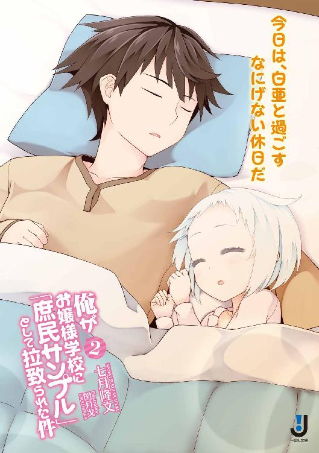
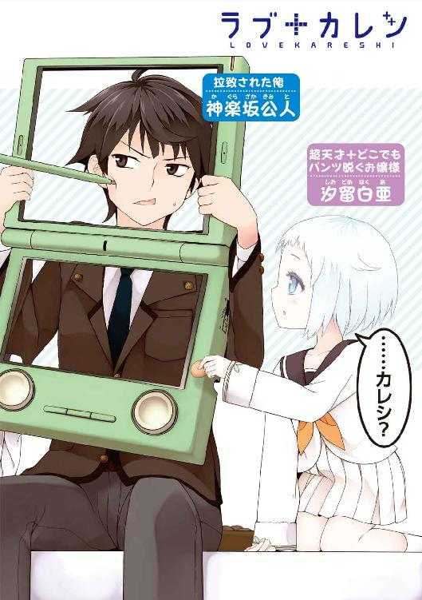
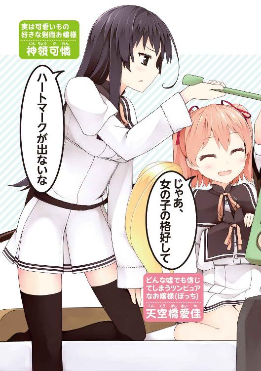
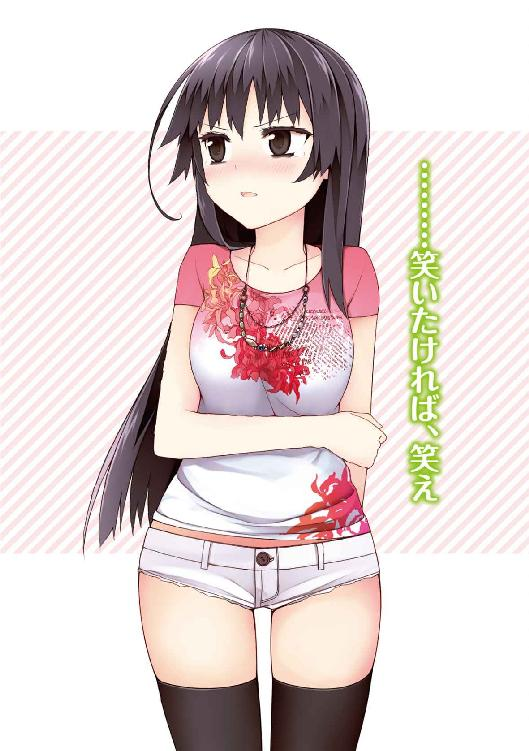
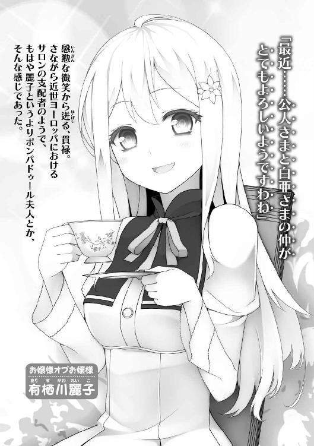
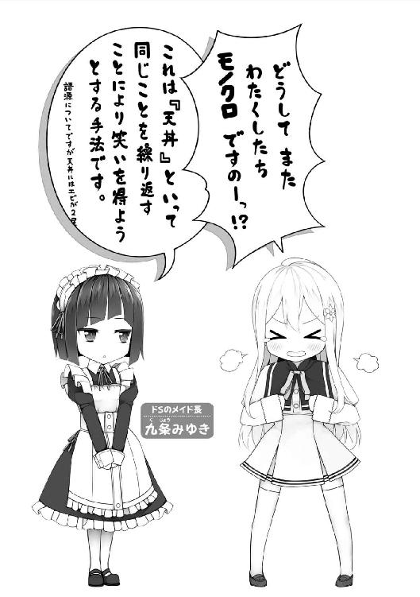
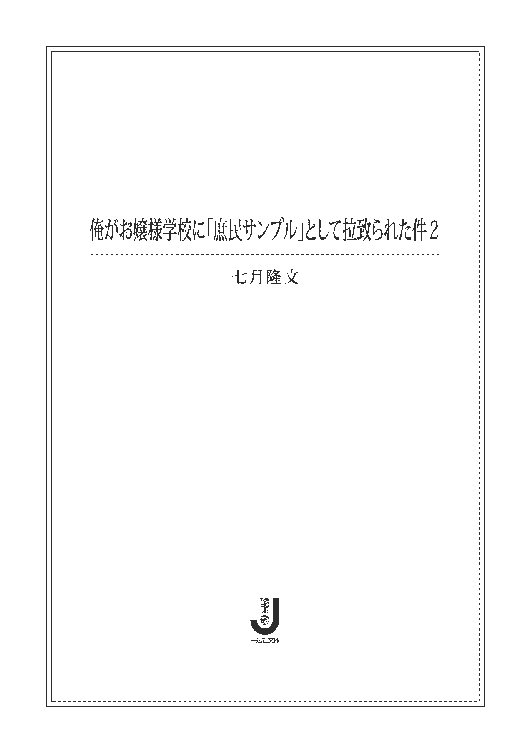
７話 なんでお前の脳みそは、余計なアイデアだけがぽんぽん出てくるの？
13話 どうして、どの表紙も女の子が描かれているのでしょう？
16話 暇だし、愛佳で遊ぶことにした。（ツンピュアさんで遊ぼうシリーズ）
（遠足の自由時間にて）
（遠足の夜、清華院にて）
（帰りの飛行機にて）
挿画：閏月戈
デザイン：百足屋ユウコ（ムシカゴグラフィクス）
彼女と、久しぶりに会う決意をした。
俺――神楽坂公人には、恋人がいる。
彼女とは、とある部活動で知り合った。
名家のお嬢様である彼女は、どこか近寄りがたい雰囲気があって周囲から孤立していた。
そして彼女自身、そうしたぼっちな状況を思い悩んでいた。
友達がほしいと願っていた。
俺はふとしたきっかけから彼女の相談役になり、みんなに親しみを持ってもらうべく、彼女のイメチェン作戦を決行。
そして彼女は、みんなの前でイメチェンの成果を披露した。
『オッス、真梨花だよ♪ 一緒に帰ろ？』
逆ピースを決めた印象的なイベントＣＧとともに、ぎこちない挨拶をした。
その滑り気味の体当たりが功を奏し、真梨花はテニス部員と打ち解けることに成功した。
ほどなく俺は真梨花の告白を受け、晴れて恋人同士となった。
それから一ヶ月以上、恋人を起動していない。
「............」
寮の部屋で、俺は３Ｄｓの起動ボタンに指を置いたまま、ためらっていた。
『ラブ＋カノジョ』――通称『ラブカノ』。
恋愛シミュレーションゲームの大ヒット作だ。
ヒロインと恋人関係になってからが本番という、新しいスタイルのゲームで、３Ｄｓ本体のカレンダー機能を活かした現実との時間リンクや、音声認識をフルに使った「まるで本当に彼女がいるかのような生活」を体験できるのがウリ。
デートの約束も「明日の八時」とか、現実の時間どおりにする。
そして困ったことに、会わない期間もまた、現実の時間どおりにカウントされていくのだ。
俺は......カノジョと一度デートしたきり、一ヶ月以上放置していた。
たぶん好感度がものすごく下がってるし、起動したときキツい言葉を浴びせかけられるだろう。
それを思うと、なかなか会う気になれない。
このへんの感覚って、ほんとにリアルな人間関係みたいだ。
そして、ずっとほっとくわけにもいかないというリアルな義務感で――俺は起動ボタンを、押した。
『えっと、どちらさまでしたっけ？』
うわ、キツっ。
『こんなに長い間放っておくなんて、よっぽどお忙しかったんですねっ』
実は、そうなのだった。
俺は今、世間一般から隠された超お嬢様学校にいる。
俗世から隔離されたお嬢様たちに庶民のなんたるかを教えるための教材――《庶民サンプル》として拉致られてきたのだ。
通ってた高校の教室にいきなりテロっぽく押しかけられて、問答無用で連れてこられた。
家族は、家の豪華リフォームという謝礼に釣られてあっさり許可を出し......かくして俺の、庶民サンプルとしての学校生活が始まった。
全校生徒の前で『庶民説明会』を開かされたり、ぼっちのお嬢様・愛佳の命令で『庶民部』を作らされたりした。
これは元々、愛佳の「クラスの人気者になるため庶民文化をマスターしたい」というきわめて個人的な目的で創設した部だったが、活動の結果、いろいろあって、今は部員が五人いる。
そうこうするうち、一ヶ月が経った。
「......というわけなんだよ」
なんて話すことができないのは（あるいは、話さなくて済むのは）、やっぱりゲームな所である。
『バカ......嫌われたんじゃないかって、ずっと不安だったんだからね』
カレシ、萌死。
......なんだろうけど、俺には皮肉な笑みしか出てこない。
なぜなら、このキャラの声が知り合いのものだからだ。
幼なじみの恵理は、いわゆるアイドル声優というやつで、人気もかなりある。
そして俺は恵理から参加作品のチェックを強制されており、ゲームやらブルーレイやら数多の見本品をどかどか渡され、後日感想を言わされるという日々が続いていた。
『もう私をひとりにしないって約束して......？』
透きとおって、可憐で、女の子のかわいさを凝縮したような極上のヒロインボイス。
寒イボが出る。
これは、いつまでたっても慣れない。
俺が知ってるプライベートの恵理は、あぐらをかきつつジャガりこをボリボリ貪り、気に入らないことがあれば俺にローキックを入れ「これ足コキっていうんだぜ。足をコキッと折るから（笑）」とか言う奴だ。
『よかったぁ。これからもよろしくお願いします。なーんてねっ』
このセリフも、恵理本人が言うなら絶対、
『よかったぁ。これからも有料ダウンロードコンテンツとかグッズ類を買い続けてね？ あと今年の声優アワードよろしくな？』
こんな感じだ。
それから俺は軽いデートをやって、タッチペンでカノジョとコミュニケーションを取った。キスまで持ち込まないよう（声が恵理だから）、加減に細心の注意を払いつつ。
声優があいつじゃなかったら、もっと楽しいゲームだったろうに。
デートが終わった頃には、ほどよくご機嫌になってくれていた。
「......はぁ」
疲れた。
家に帰って、セーブ。
電源を切ろうとしたとき――カノジョから電話がかかってきた。
『今日は楽しかった。ありがとう』
恵理のブリッ子声を聞く作業は、もう少し続くようだ。
そういや、リアル版の恵理の着信はずっと無視している。最近こそ落ち着いたが、最初はほんとにすごかった。
とりあえず、たまにメールであたりさわりのないことを送っているが、恵理のメールは「どこにいるんだゴラァ!?」という、タコ部屋から逃げだした債務者を追う恐い人みたいな感じで、よくこんなキレた感情を伝える文章にバリエーションが持たせられるなと感心するレベルだった。
『えっと、あのね......ちょっと聞きたいんだけど』
恵理......じゃなくて、真梨花ちゃんが聞いてきた。
『私のこと......どう思ってる？』
選択肢が出てこない。
――音声入力か。
マイクに向かって「好きだよ」とか言えと......？
電源を落としたい衝動に駆られたが、途中で落としてしまうとゲームの禁止行為ということでカノジョに怒られ、ペナルティが科される。せっかくデートしたのが無駄になる。
「.........す」
超恥ずい。
「すき......だよ」
『ごめん、よく聞こえなかった』
はァ!?
『もう一回言って？ ね？』
声が小さくて認識されなかったらしい。
なんて鬼畜なゲームなんだ。
「す――」
ガチャッ。
「来たわよ、公人ー」
「好きだよっ」
............。
ちょうどのタイミングで入ってきた愛佳が、ベッドに座りながら３Ｄｓに向かって「好きだよ」と言った俺を、愕然とみつめていた。
「......あんた......何やってんの......？」
「............へえ」
ゲームの説明を聞いた愛佳は、ドン引きしていた。
セミロングのツーテールに、赤いリボン。
ぱっちり大きい、ややつり目のまなざし。小さい鼻、ピンクの唇。
活発な小型犬をイメージさせる、あまりお嬢様らしくないお嬢様――それが天空橋愛佳だ。
「......ゲームの中の......恋人？」
まあそれが一般的な反応だと思う。
「えっと、つまり、本物じゃないのよね？」
「ああ」
素朴で根源的な質問が、俺をとても心苦しくさせた。
「キモいって言いたいけど、どうしよう。ちょっとは言葉を選んだ方がいいのかな？」
「思ってること、だだ洩れだからな」
説明しよう。
天空橋愛佳は、嘘がつけないツンピュアさんなのだ。
「い、今のはべつに隠すつもりなかったし」
負け惜しみっぽく言う。
「言っとくけど、好きでやってるわけじゃないぞ。知り合いが、このゲームの声優やってて」
「せいゆう？」
「ゲームやってると、キャラが喋ったりするだろ？ その声をやってる人だ」
「！ ああそっか！ いるわねそりゃ！ やってる人！」
「それが声優だ」
「へー！ じゃあ、すごいじゃない！」
愛佳がぐいっと横に来て、３Ｄｓをのぞき込む。
肩に当たる髪がすごくサラサラで、ふんわりいい香りがする。こんな奴でも、やっぱ良家のお嬢様だ。
「聞かせてよ、声！」
「あ、ああ」
どうしようかな。
あ、たしか『カノジョを友人に紹介するモード』ってのがあったはず。それを使おう。
「じゃあ、ちょっと話してみろよ」
「へ？」
俺は愛佳に３Ｄｓを渡した。
『はじめまして。真梨花です』
「えっ!?」
愛佳が「ど、どうすれば？」という目で見てくる。
俺は、ゲーム機に向かって話しかけろとジェスチャーした。
「は......はじめまして。天空橋愛佳です」
『彼のお友達ですよね？』
「は、はいっ。えっと、そんなようなものです」
『くすっ。緊張しないで？』
おおっ、音声認識すげえな！
こんなパターンまで用意されてたのか。ハマれば、この一言でかなり会話っぽい感じになる。
『実は、私もちょっと緊張してるんだ』
『お互い様だねっ？』
「............」
愛佳は３Ｄｓを手に頬を赤らめ......ふにゃっ、と笑顔になった。
墜ちた――――そんな感じがした。
「真梨花の趣味はなんなの？」
『お菓子作りとピアノだよ』
「そうなんだぁ」
『よかったら、今度一緒にお菓子作らない？』
「！ う、うん！ 作る！」
愛佳は、真梨花ちゃんとの会話に夢中だった。
普通はなんだかんだで機械相手なので、コミュニケーションの齟齬が出てくるものなのだが、不思議なほどに噛み合っていた。
愛佳は、仮想世界との相性がいいという切ない属性があるのかもしれない。
「楽しみだなぁ。絶対作ろうね？」
......ゲームって、わかってるんだよな？
そのまま戻ってこないんじゃないかと不安がよぎったとき、愛佳が画面から目を離した。
「ねえ、公人」
さすがにそれはなかったか。ほっとした。
「なんだ？ そろそろやめるか？」
「真梨花にお茶出してよ」
「......。............は？」
「ゴメンね真梨花。いま公人にお茶持ってこさせるからね？」
............ドン引きだった。
『ありがとう』
ありがとうじゃねーよ!!
『私たち、すっかり仲良くなった感じがするね？』
「うんうん、そうだねぇ。えへへ......」
『あのね、私とお友達になってくれるかな？』
「もっ、もちろん!! 死が二人を分かつまで!!」
うふふ、うふふ......弛みきったキモい顔で３Ｄｓのカノジョに話しかけている。
「真梨花だいすき」
......ヤバイ。
ぼっちでアホな子にやらせていいゲームじゃなかった。
「な、なあ。そろそろやめようぜ？」
言いつつ、３Ｄｓに手を伸ばす。
ばしんっ！
「真梨花に触らないで！」
げえっ。
「......ねぇ真梨花」
愛佳が、液晶をコツコツ叩きだした。
「そんなとこにいないで、こっち来ようよ？」
瞳がぐるぐる渦みたいになっていて、にやけた口許からは今にもよだれが垂れそうだ。
こっ、これがゲーム脳か......!?
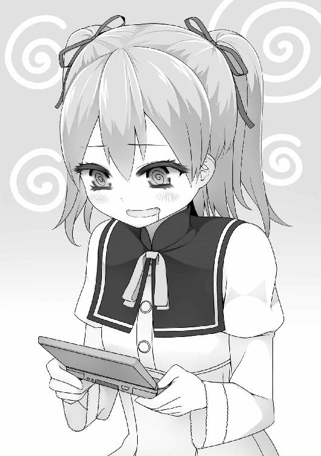
「愛佳」
俺は――
「実は真梨花は、そのゲームの中に閉じ込められてしまってるんだ」
このさい、遊ぶことにした。
「え......？」
愛佳が、きょとんとこっちを見る。
あ、さすがに冷静になったか。
「やっぱり真梨花は実在した!!」
ゲーム脳に冒されたツンピュアさんは、いつも以上にどうしようもなかった。
「どうしよう!? 出してあげないと!! どうしたらいい!?」
「落ち着け。今から俺の言うとおりにするんだ」
「う、うん！」
「まずは、その場でスクワット一〇回」
「いちっ！ にぃっ！ さんっ！ しっ......！」
「次に、左手と右足を斜めに突き出して『オッパッピー』と叫ぶ」
「えーと、えーと......」
シャキーンと手足を伸ばし、
「オッパッピー！」
「もう一度、白目を剥いて！ はい！」
「オッパッピー!!」
「そこでゲッツ！」
「ゲッツ!!」
完全にお前の持ちネタだな？
「つ、次は!?」
「......えーと」
「今、えーとって言った？」
「キスだ！」
「キス!?」
「そうだ！ 呪いを解くためには、真梨花のことを心から愛する親友のキスが必要なんだ！」
「し......親友......っ？」
愛佳が、ぶるぶると震えた。
「あたし、やるわ！」
「よし！ じゃあその液晶――否、牢獄に囚われている真梨花におもいっきりキスをして、彼女を解き放ってやるんだ！」
「わかったわ！ ......真梨花......いま出してあげるからね。お互い初めてだけど、女の子同士だからノーカンで。あっでも真梨花がカウントしたいって言うんだったらあたしも、その......いやじゃないからっ！」
頭がおかしいことを照れながら言い、愛佳が目をつぶる。
そして、３Ｄｓの液晶にそっと唇を近づけていき......
ガチャッ。
「ごきげんよう、公人さま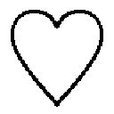」
「......公人」
「今日も来てやったぞ」
ぶちゅうぅぅ～～～～～～～～っ。
部屋に入ってきた三人の女子が、愛佳のキスシーンを目撃した。
「......何......してますの......？」
委員長の有栖川さんが、３Ｄｓとキスする愛佳を、愕然とみつめている。
愛佳は彼女たちにゆっくり振り向き、にこりと笑った。
「友達を救ったの」
三人は、青ざめた。
メンバーが揃い、今日も庶民部が始まっていた。
俺？ あのあとボコボコに殴られたけど？
「あっ、すごい！ ちゃんとわたくしを見てきますわ！」
有栖川さんが３Ｄｓをいろんな角度に傾けている。
ジャイロ機能のおかげで、カノジョを上下左右いろんな角度から見ることができるし、それに応じた反応もしてくる。
男のプレイヤーは誰でも一度はカノジョをある角度から見上げようとするのだが、それは置いとこう。
「まぁまぁ。すごいですわ」
驚く表情や仕草にも、白薔薇のような気品が漂う。
彼女は有栖川麗子。人望あるクラス委員で、みんなから淑女の鑑と尊敬されている。
そして、座る俺の膝にはいつものごとく小学生くらいに見える女の子が乗っかり、もたれかかってきている。
汐留白亜。こう見えても中等部。数々の賞や特許を持ち、学内に専用のラボまで提供されている天才理系少女だ。
ぼんやりした顔で、俺が差し出すビスケットを直接あむあむ囓っている（なぜか俺の手から食べたがる）。
「............」
その白亜の目の前に、黒髪の女子が屈んでいる。
腰にガチの日本刀をぶら下げているこいつは、神領可憐。
難しい顔で白亜をみつめつつ、箱からビスケットを一枚取った。
俺のビスケットを押しのけ、自分のそれを白亜の口許にそろそろ......と近づけていく。
ぷいっ。
白亜がそっぽを向いた。
可憐がキッ、と俺を睨みつけ、
ドガッ！
「痛えッ!?」
「安心しろ。鞘の先端の所の角打ちだ」
「そこはすげえ痛えよ!!」
「だ、大丈夫ですか、公人さまっ？」
有栖川さんが、ささっと横に座る。
「お怪我はございませんか？」
「あ、ああ、大丈夫......」
有栖川さんが長い睫毛をしばたかせ、心配そうにのぞき込んでくる。
むにゅっ。
たわわなバストが、俺の肘に押しつけられた。
「............あ、あの、有栖川さん......」
「どうしました？」
むにゅうぅっ。
「――ッ!? そ、その......っ」
思わず下を向いた俺の視線で、有栖川さんも気づいた。
「!? きゃっ」
あわてて離れる。
「ご、ごめん......」
「い、いえっ」
有栖川さんは、首筋まで真っ赤にしながら、
「......公人さまなら別に......」
「え？」
「ごほん！ ごほん！」
愛佳が、わざとらしくせき払いした。
俺を睨みつけ、
「変態」
「わざとじゃねーよ！」
「あんたもその牛みたいな胸をどかせなさいよ、有栖川麗子」
「う、牛......っ!?」
反応した有栖川さんが、ぐっと抑える。さすがの育ちの良さ。
「そ、それで、公人さまのお知り合いが、このゲームの『声優』というものをなさってらっしゃるのですわね？」
「ああ」
「素晴らしいことと存じますわ」
品よく両手を合わせる。
「それで愛佳さまは、遊んでいるうちにゲームと現実の区別がつかなくなっていった、と」
全員が愛佳を見る。
「な、何よ!? あたしもちょっとくらいはわかってたんだからっ!!」
ちょっとかよ。
「わかっておりますわ、愛佳さま」
キラキラと白薔薇の微笑み。さすが有栖川さんは、お嬢様としての格が違う。さっきのことなんて、まったく根に持ってな――
「そんな猿のように気の毒な頭をお持ちの方など、この世にいるはずがありませんものね？」
「持ってたあ――――――――――――――――っ!!」
少し前まで『一度も怒ったことがなく、誰も嫌いになったことがない』とまで言われていた有栖川さんも、愛佳に対してだけは別だ。
唯一「嫌い」と宣言して喧嘩した相手。
まあ、いろいろ事情があったんだけど......それ以来、この二人は非常に仲が悪いのだった。
「公人さまのお知り合いのこと、わたくしもっと理解したいですわ」
そうだ、と手を合わせる。
「今日の庶民部の活動は、このゲームにいたしません？」
有栖川さんの委員長スキルが発動。名目だけだった部活が、すぐにそれっぽい感じになる。才能だと思う。
残念なのは、他のメンバーに人並み外れて協調性がないことだ。
「じゃあ有栖川さん、最初からやってみる？」
「ええ。教えてくださいまし」
有栖川さんが３Ｄｓを構える。スタートボタンを押し、名前入力画面になった。
「ええと......わたくしの名前ですの？」
「ああ。それが主人公になって、女の子と出会っていくんだ。有栖川さんは最初『あ』だから、そのままＡボタンを押して」
ピッ。一文字目に「あ」と入力された。
「まあっ」
「じゃあ次は『り』だから、左手の十字キー押して、枠を動かして」
「こ、これですの？」
カコッ。
「あ、動きました！ 面白いですわ！」
言葉どおり、興味深そうに名前入力をしていく。
「『れ』......『い』......『こ』――と」
優等生な有栖川さんは、なんでも慣れるのが早い。
「でも、おかしな気分がいたしますわ」
「何が？」
「だって、この主人公は殿方ではありませんか。なのに、わたくしの名前をつけて女性と恋仲になるというのは、なんだか奇妙ですわ」
「まあ、ゲームだし。『カレシ』版とかあったらよかったんだけど――」
「それだわ!!」
愛佳が「ひらめいたーっ！」とばかりに瞳をキラキラさせている。
「それ！ それやろう！」
「それってなんだよ？」
「だからー！ カレシよ、カレシ！ 『ラブカレシ』！」
「............は？」
「あんたがそのゲームみたいにカレシ役やって、あたしたちが遊ぶの！」
「............」
「こう、紙か何かでゲーム機の窓みたいなの作って、それをあんたが持って――あっいい！ それっぽい！ タッチペンどうしよう」
......お前、なんでそんな妙な企画思いつくの？
「いやいや......そんなんやってもしょうがないだろ？」
俺は肩をすくめた。
「そのゲームをプレイするっていうのが今日の主題なんだから。わざわざ偽物のごっこ遊びやる意味なんかないだろ？ なあ、有栖川さ――」
「やりましょう」
「有栖川さんッ!?」
「愛佳さま。紙を調達すればよろしくて？」
「あと、支える木みたいのが」
「図工の相談始めた!?」
俺はなぜか、ものすごく嫌な予感がしてきた。
「お、おい可憐」
「なんだ」
「お前は嫌だろ？ 俺がカレシとかさ」
「嫌だな。虫酸が走るし、生理的に受け付けないし、それぐらいなら私はコオロギの佃煮だって食べ......うん、まあ、それは保留するとして」
「だ、だよな？ なら――」
「だが貴様がそこまで嫌がることなら、私は賛成に回ろう」
「お前、ほんとに俺のこと嫌いなんだな!?」
最後の頼みで、白亜を見る。いつのまにか手元に渡ったラブカノをプレイしていた。
「は、白亜は俺の味方してくれるよな？」
「............」
俺を見上げたあと、無言のまま視線を戻した。
えっと......肯定、でいいのかな？
そうこうしてる間にも、愛佳と有栖川さんが着々と話を詰めていっている。
「ま、待て待て！」
俺は止めた。
なんだか嫌な予感がするし、『ラブカレシごっこ』なんて普通に恥ずかしい。
「勝手に進めんな！ 俺はやるなんて一言も――」
『公人ったら、いっつも私のスカートの中を覗こうとしてくるの』
３Ｄｓからの音声が、妙にくっきりと部屋に響き渡った。
見ると、白亜が俺のカノジョから『普段の彼について聞く』モードにしていた。
『やめてって言ってるのに全然やめてくれなくて、写真まで撮ろうとするんだよ？』
............男性プレイヤーなら必ずやることだと、みんなわかってくれるはずのことだ。
さて、清華院のお嬢様たちは、わかってくれるかな？
俺は、３Ｄｓを模したフレームを持たされていた。
さっき言ってた紙と木で作ったやつじゃなく、特殊な樹脂をレーザーで固めて成形したというガチっぽいやつだ。
白亜のラボで作られた。
「ナイス白亜！」
......あれ？ 白亜は俺の味方をしてくれたんだよね？
「なるほど。これがタッチペンか」
可憐が五〇センチくらいある樹脂棒を拾い上げ、
「こう使うのか（グリッ！）」
「いだだだだッ!?」
俺の頬にスナップをきかせてねじ込んできた。
「何すんだよ!?」
「何って、カレシとのコミュニケーションだろう。ほら肩に触ってやろう。手を握ってやろう」
グリッ！ グリィィッ！
「いだぁ――――ッ!?」
「ハートマークが出ないな」
「そんな特殊な人じゃねーよ！」
言いつつ、タッチペンを奪い取る。
「あーすっきりした。別れよう」
こいつ......明らかに普段の逆恨みをぶつけてきやがった。
「大丈夫ですか、公人さま？」
「ああ、ありがとう。有栖川さん」
「うふふ。次は、わたくしの番ですわ」
一人ずつ順番ということになったらしい。
有栖川さんが、俺の正面にぺたんと座る。
「えぇと......公人さまが恋人ですのね？」
「ああ」
「わたくしの？」
「うん」
「......」
祈るように両手を組み、キラキラする。
「不束者ですが、末永くお願いいたします......」
「へ？」
「ゴホンッ！」
愛佳がおもいきりせき払いする。
「あくまで、ごっこ遊びだからね!?」
そんなのわかりきってることだろ。
あいつは、有栖川さんの何もかもが気に入らないらしい。
「じゃあ始めようか有栖川さ――って、なんで三つ指ついてお辞儀してるの!?」
「で、どうする有栖川さん？」
「『麗子』ですわ」
「え？」
「呼び捨てにして下さいと、何度も申し上げていますのに」
「ああ......まあ、なんというか」
「他の方はみんなそうですのに、どうしてわたくしだけ『有栖川さん』なんですの......？」
「えっと......呼び捨てにしにくい雰囲気があるんだよ、有栖川さんって。悪い意味じゃなくて、こう、立派っていうか」
「あたしは立派じゃないの!?」
愛佳は無視する。
「わかりません」
有栖川さんが、じぃ～っと拗ねた目でみつめてくる。
「......このゲームでは、恋人に対する呼び方を変えられるはずですわ」
おおっと、短い時間でよくそこまで。
「『麗子』と呼んで下さいませ」
ずいっ、と有無を言わせぬ迫力。
「......はい」
「ではさっそく、お呼び下さいませっ」
「れ......麗子」
「......」
両手を頬にあて、キラキラする。
呼び捨てにされたのが、そんなうれしいんだろうか？
まあ、そんな機会ぜんぜんなさそうなお嬢様オブお嬢様だし、新鮮なんだろう。
「では公人さま、その、デートいたしましょう」
「ああ、はいはい」
実際するわけじゃなく、ゲームごっこの一環だ。
「じゃあ、どこ行く？」
「どこに行けますの？」
麗子がわくわくしている。
「序盤だから、近場メインかな。公園とか」
「公園、素敵ですわ」
「じゃあ、そうしよう」
「えっと、公人さまが実際に存じている公園がいいですわ」
「じゃあ、俺ん家の近くで」
「まあ！ どんな公園ですの？」
「いや、べつに大したとこじゃないよ」
「詳しく聞かせて下さいまし」
「えっと......広さは一五メートル四方くらいで」
「一五メートル四方......」
まぶたを閉じて、想像している。
そっか、庶民の公園とか知らないんだよな。
「背の高さくらいの黒いフェンスに囲まれてて、砂利が敷いてて」
「ええ、ええ」
「ブランコとすべり台がある」
「ブランコとすべり台......」
「あとは、木のベンチ」
「でしたら、そこに座りましょう」
「ああ。――よいしょっと」
二人で、ベンチに座ったことにする。
「静かですわね」
「うん」
「二人っきり......ですわね」
「えっ？ あ、うん」
さすが麗子は、目をつぶりながら完璧にシミュレートしようとしてるんだな。
「き、公人さま......」
もじもじしながら、つつつ、と左に寄っていく。ひょっとしたら俺に近づくか離れるかしてるのかもしれないが、俺はフレームを持ちながら向かいでそれを眺めているだけだ。
麗子は頬を染めながら、くるっと誰もいない左側を向いた。
「公人さま、わたくし、ずっとあなたのことが......！」
「あー、よっこいしょっと！」
愛佳が麗子の横に座り、ドンッ！ と肩を押した。
「ちょうどいいところにベンチがあったわー」
「愛佳さま！ 何してくれてますの!?」
「休憩」
「そういうことではありませんわ！ 今はわたくしがデートしているのです！ わたくしと公人さまの世界に入ってこないでくださいまし！」
「ハ！ あたしたちの前で何が『二人っきりですわね』よ！ 脳みそおかしいんじゃないの!?」
「成績最下位のあなたに言われたくありませんわ！」
「国語と保健体育はトップだもん！ それに勉強より大事な頭の良さがあるっていうか！」
「なぜそんな目でわたくしを見ますの!?」
「さーなんでかな！」
「ま、待て待て二人とも！」
また取っ組み合いに発展しそうだったので、止めた。
ほんと、この二人はしょっちゅう喧嘩になる。あいかわらず「完璧なお嬢様」の麗子も、愛佳にだけはすぐムキになるんだよな。
「......じゃあ、ベンチに座ったとこから再開な？」
「わかりましたわ」
「麗子の番なんだから、愛佳は入ってくんなよ？」
「............」
愛佳は、むすっとしている。何がそんなに気に入らないんだ。
「公人さま、公園のまわりには何がありますの？」
「家と田んぼ」
「素敵ですわ」
「そうかなぁ」
「ええ。わたくし、楽しゅうございます」
目をつぶったまま微笑む。
「なら、よかった」
「この近くに、公人さまのご実家がございますのね？」
「ああ」
「帰りに、御両親にご挨拶しなくては」
「え？」
「......どんなお土産を持っていけばよろしいでしょう？」
「えっと、いや、そんな気遣わなくても――」
「そういうわけにはまいりません。公人さまの恋人として相応しいように努めなければ。最初の挨拶は今後を左右しますわ」
「今後......？」
麗子は目を閉じたまま、ぶつぶつと独り言をつぶやく。
「......えっと、二人の馴れ初めですか？」
「誰と話してるの!?」
「......それから、わたくしの両親ともお会い頂かなくては......」
夢見るような表情で、長い髪をちくちくと編みだす。
「互いの両親が面会するのは結納の席で？ いえ、やはりその前に一度、お食事の席を......」
ちくちく......
「......孫の顔が見たい？ お母様ったら気が早いですわ.........うふふ」
ちくちくちくちく......
「っていうか、その細かすぎる編み込みは何!? レゲエ歌手になるの!?」
「............」
「............」
白亜の番だった。
「............」
「............」
座ったまま、一分近く無言で向き合っている。
いつもの、ほわりとした無表情で俺を見上げていた白亜が、
「......カレシ？」
「おお」
「恋人？」
「そうだな」
「............」
白亜が手を伸ばし、フレームの窓を越え、俺の頭を撫でてきた。
「おお」
ちっちゃい手のひらが、さわさわと髪を鳴らす。
それから、箱からビスケットを取り、差し出してきた。
「ありがと」
受け取ろうと手を伸ばす。
引っ込められた。
「？」
また差し出してくる。
受け取ろうとする。
引っ込められた。
内側によけて、俺の顔に近づけてくる。
ひょっとして......
「食べさせたいのか？」
こくん。
いつも俺がやっていることのお返しというわけだ。
まあ「はい、あーん」という、恋人らしいっちゃらしい行為だが、白亜がやると小さい子と遊んでるようなほのぼのした感じだ。
「じゃあ、あーん」
差し出されたビスケットを、がじかじと食べる。まあ、やっぱりちょっとは照れくさかった。
全部、口に入れた。
「おいしい？」
「ああ、おいしかったぞ」
「............」
白亜は、一瞬靄がかかったような満たされた目をした。
こいつといると、冬の少し暖かな日みたいにほっとする。
ふと気配を感じて振り向くと――
愛佳と麗子が、ものすごく何か言いたそうに「むむむ」と白亜を見ていた。
可憐は、キスを待つような顔で「あーん」と口を開けっ放しにしていた。
と、白亜がふいに手を伸ばし、俺が持ってる３Ｄｓのフレームを掴む。
「どうした？」
「邪魔」
「お前が作らせたんだよ!?」
愛佳の瞳が、散歩する直前の子犬みたいにキラキラしていた。
絶対、ろくでもないこと思いついてる。
「あんた、イメチェンしなさいよ！」
「は？」
「髪型とか服とか、あたしの好みに合わせて変えてくれるんでしょ!?」
たしかにゲームにはそういうシステムがある。だてに現実と混同するほどのめり込んでなかった。
「......いいけど」
俺を着替えさせて、何が面白いんだよ。
......と思ったのだが、麗子をはじめ、女子陣が意外と食いついてる感じだった。
「じゃあ、女の子の格好して」
「へ？」
「女装しろって言ってんの」
「おまっ......」
「ふっふっふ......女子の制服でも着てもらおうかしら？ あとカツラも」
「ふ、ふざけんな！ そんなの絶対やらな――」
「やれ」
可憐の構える日本刀が、喉元に突き出された。
「なんでだよ!? お前、見たいのか!? 俺の女装!!」
「見たいわけがないだろう。そんな醜悪なもの」
「だったら――」
「だが、貴様が嫌がることなら、私は全力で賛成に回る」
「てめえ!?」
こうなったら、頼れるのは一人。
「れ、麗子！ 助け――」
「ご苦労さま、霧生」
「メイドから、運ばせた制服とカツラを受け取ってるううぅぅ――――――――――ッ!?」
「き、公人さまっ!? これはその、違うんですっ」
調達した制服とカツラを抱きしめつつ、ちらっと上目遣いをしてくる。
「.........でも、せっかくの機会ですし.........」
意味がわからない。
白亜は、ぼんやりとこっちを見ている。
そういうことになった。
「ちょっ、見んなよ！」
ワンピースの制服を着たあとズボンを脱ぐ俺の姿に、愛佳が笑い転げる。
「あははは！」
「笑うなっ!!」
「「「............」」」
麗子も白亜も可憐も、なぜか興味深そうに俺がズボンを脱ぐさまをみつめている。
視姦、という言葉が浮かんだ。
「公人さま、じっとして下さいませ」
麗子が、カツラをかぶせてきた。ブラシで軽く梳いて、
「できましたわ」
女子陣が、俺の前に勢揃いする。
「............」
なんか、カツラの長い髪とかワンピースの足下がふわふわした感触で......ションベンに行きたくなる。
「......へー。ほー」
「なんだよ、愛佳」
「わりと似合ってるじゃない」
「お似合いですわ、公人さま」
うれしくねえ。
可憐はなぜか目をそらしていて、白亜は逆に、俺が目を背けたくなるほどつぶらなまなざしでみつめてきている。そんな目で見ないで。
「――よしっ」
愛佳がケータイを取り出した。
「写真撮りましょ！ 『撮影モード』よ！」
「なんでお前の脳みそは、余計なアイデアだけがぽんぽん出てくるの？」
「はい笑ってー」
にやにやケータイを構える。
少し前にあった麗子の『お茶会事件』以来、うちのクラスのお嬢様たちはケータイを持つに至った。
ただし、ネットも通話機能もロックされてるし、他のクラス・学年に知られることは禁じられている（バレたら全員没収）。
「ってか、撮るな！」
「あ、こらっ！ 手どけて！」
「薄汚い手をどけろ」
可憐の日本刀が突きつけられる。
「笑え」
「鬼か!?」
「はーい、じゃあ撮るよー」
「......くそ......」
カシャッ。
「あはっ。なーんか楽しっ」
愛佳が調子に乗る。
「じゃあもっとかわいいポーズしてみよっかー☆」
「やだよ！」
「やれ（刀）」
「こう、両脚を揃えて、腰をひねって......ぷぷっ、そうそう！」
俺は腰をくねらせた女の子座りをさせられた。
「うぅ......なんでこんなこと......」
ちょっと泣けてきた。
俺は涙で潤んだ目で、女の子座りのまま、愛佳たちを上目遣いで見て――
「......なぁ、もう勘弁してくれよ......？」
か細い声で懇願した。
「「「........................」」」
奇妙な沈黙。
女子たちは、不意打ちでも食らったように、何かいけないものを発見してしまったかのように、瞳を開いて、俺を凝視する。
「......なっ、何言ってんのよ」
愛佳の頬がほんのり紅く染まり、声が震えている。
「まだまだ、これからよ......」
口許に笑みを張りつかせ、ケータイを構える。
カシャッ、カシャッ！ カシャッ............！
「ほ、ほらっ！ こっち見て！」
俺はいろんなセクシーポーズを取らされた。
愛佳はさっきまでとは段違いの熱心さで、執拗にシャッターを切りまくる。
「その表情!! もっとせつなそうに......もっと......！」
そして、指示するポーズがどんどんきわどい感じになってきた。
「......な、なあ......もういいだろ......？（うるっ）」
「はぅっ!? ま、まだまだダメよ！ もっとせつな―――嫌がって!!」
変なことを口走る。
いつのまにか、部屋におかしな熱気が籠もりだしていた。
「............じ、じゃあ次は............スカートめくろっか？」
「はァ!?」
立ち上がりかけた俺の喉元に――日本刀。
「や......やれっ」
見下ろしてくる可憐の顔が、やたらと紅い。
「れ、麗子！ こいつら止めてくれよ！」
............ハァハァハァハァ............
麗子は正座の体勢で、瞬きひとつせず、荒い呼吸を繰り返しながら俺を見ていた。
「あの......麗子さん？」
聞こえてなかった。
「ねぇ白亜、そこのフレーム邪魔だからどけてっ」
「............（どける）」
「どけちゃダメだよ!?」
なんだこれ。どうなってんだよ......。
俺は強要され、そろそろとスカートをたくし上げ、脚を露出させていく。
「い......イイヨイイヨー」
カシャッ！ カシャシャシャシャシャシャシャシャシャシャシャシャシャシャシャシャシャシャシャシャシャシャシャシャシャシャシャシャシャシャシャシャシャシャ......ッ!!
激写しながら、愛佳は床に這いつくばり、ローからの構図を狙ってくる。ネットでこういう人見たことある。
ほんとならぜんぜん恥ずかしくないはずなのに、こんな状態だといやでも顔に血が昇ってくる。
「イイヨイイヨー......そぉーう......」
「公人さま......目線を下さいませ......」
「麗子がいつのまに高そうな一眼レフを構えているッ!?」
「くだらない......実にくだらない......っ！」
可憐が鼻のあたりを押さえ、ぷるぷる震えている。あと少しブレが大きくなったら、俺の首の皮が刀でサックリいっちゃうね？
ふいに愛佳が撮影をやめる。
そして、ぐるぐる渦を巻いた瞳で俺を見据え――
「じゃあそろそろ............脱ごっか？」
――――――――――――――――――――――――――――――――――――え。
「できるかあああ!!」
「じっとしていろッ！」
可憐が脅す。
「か、勘違いするなよ！ 私は貴様が嫌がることだから賛成しているのであって......っ！」
鼻を押さえた手のひらから、ぼたぼたと血が垂れてきている。
「さ、公人さま......」
麗子がリボンをほどいてくる。
虹彩の消えた瞳で、熱に浮かされたようにハァハァしていた。
「ちょっ......!?」
みんなおかしい。
俺の何か大切なものが危機に陥っている。
「......っ！」
一瞬の隙をついて立ち上がり、部屋からの脱出を試みた。
麗子に捕まった。
「暴れてはダメですわ」
「は、離して！ 離してくれ!!」
俺は全力でもがくが―――麗子さん、力強え!?
スポーツとか武術とかやってるせいか、ガチで動けない。
背中に密着し、片腕で俺をホールドしつつ、もう片方の手で器用にリボンをほどいていく。
「天井のシャンデリアを眺めているうちに終わりますわ......」
「脱がしちゃえ！ 脱がしちゃえ！」
こ......こえええええええええええええよおおおおおおおおおおおおおおおおおおおおお!!
ガチャッ。
ドアが開き、俺の専属メイドである九条さんが入ってきた。
拘束が弛む。
瞬間――俺は飛び出した。
「た、助けてくれっっ!!」
夢中で、九条さんにしがみつく。
「襲われてるんだ！」
女装のカツラが落ち、胸がはだけた女子の制服姿で、俺は九条さんにしがみつく。
「変態に襲われてるんだ!!」
九条さんは、氷の彫像のように動かなかった。
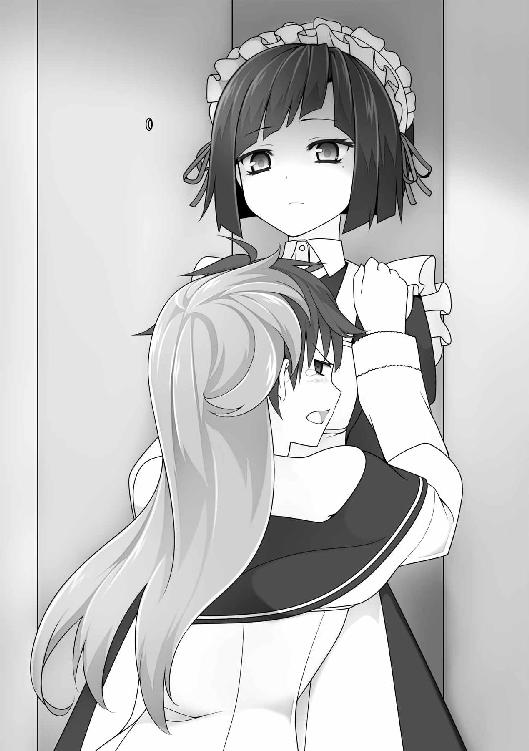
「......言い遺すことは以上ですか」
「え？」
次の瞬間、九条さんの掌底があごの下から入り、俺は――天井に舞った。
それから俺は、九条さんの無限コンボで春の蝶々のごとくひらひらと空を舞い続け、「ああさっきまで人間として活動していたのは夢で、俺は実は蝶々だったんだな」ということに気づいて――意識を失った。
布団の上から、ぺたり、と小さな重みがかかった。
眠っていた意識が覚め、俺はどろりとまどろむ。
......ゆさゆさ。
布団越しの小さな重みが、俺の体を弱く揺さぶる。
「............ん」
目を開けると――白亜がいた。
小さな手のひらを布団に乗せ、俺を揺り起こしたのだった。
「.........白亜か.........」
寝起き一番の、かすれた声。
「......遊びに来たのか？」
こくん。とうなずく。
白亜は、私服を着ていた。
白いノースリーブのワンピースがとてもよく似合っていて、まるで雪の妖精みたいだった。
「......そっか......」
まぶたが重い。
今日は、休みだった。
いつもは土日でも、生活規則がやたら正しい愛佳が早くから押しかけてくるのだが（よっぽど暇なんだと思う）、今日に関してはその心配がない。
なんでも、クラスで女子だけの特別授業があるらしい。
男の俺は参加できず、どころか、何をするかも一切教えてもらえなかった。
麗子に聞いたら、黙って顔を赤らめるだけだった。
なんだか、小五の時に男子だけ運動場でドッジボールをさせられたときみたいな感じだ。
ともあれ、そんなわけで今日は死ぬほど寝溜めするつもりでいた。
カーテン越しの陽射しを見る。この明るさだと、九時過ぎってところか。
「......悪い......もうちょっと寝かせてくれ......」
「............」
白亜は、純粋さと知性の宿る澄んだ瞳で俺をみつめて......
もぞ......と布団に入ってきた。
「ん......どうした？」
俺の隣に陣取ってくる。
「一緒に寝るのか？」
こくん。
「そっか。......ほら」
俺は掛け布団をめくって、きちんと中に招き入れた。
白亜はもぞもぞと潜り込んで、行儀よく仰向けになった。そこへ布団を掛けてやる。
顔を少し埋もらせた白亜が、心地よさそうに深呼吸した。
俺も仰向けになった。
白亜が腕をくっつけてくる。いつも、俺の体のどこかとくっつけたがるのだ。
布団のぬくもりの中に、白亜のミルクみたいな匂いが混じってくる。
眠たくなるにおいだ。
「......ふぁ」
俺は目を閉じ、白亜の腕のやわらかさを感じながら、休日の二度寝をした。
「ふぁぁ～～～あ」
よく寝た。
ぼんやり隣を見ると、白亜はすでに起きて、枕元でうつぶせになっていた。
その視線の先で、小さい人型のロボットらしきものが歩いている。
「......何それ？」
「作った」
サイズは一〇センチくらい。割り箸ほどの手足で、ホンダのアシモみたいにぬるぬる動いている。って......
「すげえなこれ」
感心して言うと、白亜に反応があった。
無表情だが、目にほんのわずか「んっ」て感じで力が入る。誇りが満たされたときのクセだ。
こいつが俺にくっつくようになってから、けっこう経つ。俺はだいぶこいつの無表情の中にふっと表れるわずかな感情の揺らぎが見つけられるようになっていた。
「かかと落としもできる」
カシャーンッ！ とジャンプ。
「おお！ すげえな！」
また「んっ」と力が入る。
「白亜はやっぱ天才だなぁ」
頭をわしゃわしゃ撫でてやる。
とたん、今度は瞳が遠くになって、鼻からすぅーっと息が洩れていく。
うれしがっているのだ。
だから、もっと撫でてやった。
顔を洗って、メシを食うべく食堂に行った。
一等ホテルのパーティー会場みたいな食堂は、昼前だから、がらんとしていた。
てきとうなテーブルに着くと、ほどよい早さでメイドさんがメニューを持ってきてくれる。
昼食のメニューだ。ブランチってことになるな。
メイドさんが待っているのだが、絶妙な気配の消し方で、バーガー屋のレジ前みたいに落ち着かないということがない。
「じゃあ、洋食の方を下さい」
「かしこまりました」
丁重に聞いてくれる。九条さんと専属メイド交代してくれないかな。
「白亜さまは、雲丹大葉包みの天ぷらでよろしゅうございますか？」
えっ？
なんで決め打ち？ とメイドさんを見ると、承知したふうに答える。
「白亜さまは、曜日ごとに決まったものだけをお召し上がりにな――」
「いらない」
白亜が言った。
「どうした？ 食欲ないのか？」
こくん。
「メシはちゃんと食った方がいいぞ？」
「............」
「まあいいけど......じゃあ、俺は食うぞ？」
こくん。
食堂からの帰り。
初等部や中等部の子たちが、それぞれに休日を満喫していた。
噴水広場のベンチで読書していたり、猫との接触を試みていたり、ジョギングしたり、これから食堂へ向かうグループも多かった。
建物の上から、ピアノやバイオリンの練習音が降ってくる。
......ぐうぅぅぅ～～～っ。
俺の隣で、大きなお腹の音が鳴った。
見ると、白亜が何もなかったような顔をしている。でも、普段よりことさらっぽく見えた。
「......食ったんじゃなかったのか？」
「............」
「腹、減ったんだろ？」
こくん。
「今から食堂、戻るか？」
ふるふる、と首を振る。そして、
「公人が作って」
「うわ、マジか」
冷蔵庫の中には、ジャガイモしかなかった。
寮の給湯室は、システムキッチン並みの広さと充実ぶりで、俺はよくここで部活中のおやつとか、夜食を作るのだが――。
休日のせいか、食材の補充がされていなかった。
「調味料はひととおりある、と......」
これで作れるものっていったら......。
「なあ白亜。ふかし芋と、フライドポテトと、芋モチの、どれがいい？」
「いももちって何？」
「ジャガイモで作る餅だな。潰した芋で生地を作って、フライパンで焼くんだ。うまいぞ」
「それがいい」
「よし、じゃあ作るか」
ジャガイモを取り出した。
......ぐうぅぅぅ～～～っ。
また、白亜の腹が鳴った。
さっき、ほんとに食欲なかったのか......？
「そういや、ウニの天ぷら......だっけか？ それじゃなくていいのか？ いつも決まったもの食べてるっぽいこと言ってたけど」
「いい」
「そうか？」
いつも決まったもの食べるって、天才アスリートとかでたまに聞く話だけど。
と、白亜がとてもさりげなく。
「公人が作ったものなら、なんでもいい」
「............」
ちょっと、じんときちまった。
「よし、じゃあうまいの作ってやるからな」
剥いたジャガイモを鍋で茹でる。
火を見張る俺の横に、白亜がじっと立っていた。
「部屋で待っててもいいんだぞ？」
「見てる」
「そっか」
ジャガイモに串を刺す。――よし、茹で上がった。
「危ないから下がってろ」
シンクに置いたザルに、鍋の中身をざーっとやる。
それから、ほくほくのジャガイモをボウルに入れて潰していく。
片栗粉を混ぜて、練る。
生地の完成だ。
次は......
「公人」
「ん？」
「何かしたい」
白亜がじっと見上げてくる。
「おう、ちょうどいい。生地を丸めてくれ」
ボウルから生地をひとつまみ取って、丸める。そして、軽く平らに叩いて円形にした。
「こんな感じにしていってくれ」
こくん。
「その前に、手洗え」
シンクでじゃぶじゃぶ洗わせた。
「お、そうだ」
俺は壁に掛けられていた女子用のエプロンを取った。
白亜に、フリル付きのエプロンを着せてやる。
ちょっと長くて、膝下まで届いちゃってるけど、そこがまた。
「かわいいじゃん」
「............」
白亜は不思議そうな顔で胸元のフリルをさわり、
「......かわいい？」
「ああ」
「............」
うつむき、閉じた小さな唇にちょっとだけ力がこもった。
初めて見る反応だった。
白亜は生地をひとつまみ千切り、こねこねと丸める。
そして、小さな手のひらでぽすぽすと叩いた。
俺のよりひと回り小さく、ちょっとだけ不均等な円ができあがった。
「そうそう」
「............」
本人は納得していないらしく、やり直しにかかった。けっこうこだわり屋だ。
「ははは。じゃあ頼むな」
白亜に任せて、俺はタレを作ることにした。
しょうゆと酒と砂糖を、勘と目分量で混ぜていく。
銀スプーンで回し、味見。
――白亜は、もうちょい甘めが好みだよな......。
砂糖を足そうとしたとき、頭の上に、
ふぁさっ......と、何かが乗った。
「......？」
生クリームみたいな匂いのするそれを取ってみると――灰色のパンツだった。
振り返ると、白亜が壁に数式を書きながら、服を脱いでいた。
「白亜っ！」
押さえ込もうとしたが、時すでに遅し。
油性マジックを猛烈なスピードで動かしながら、もう片方の手で迅速に服を脱衣した。
普段は自分でパンツも脱げないくせに、いざ集中状態になると潜在能力で裸になってしまう。いつでも、どこでも。
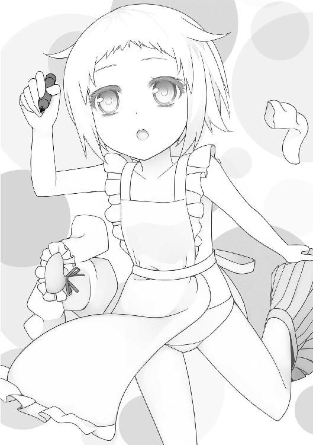
「ってか、なんでエプロンは脱がないの!?」
白亜は全裸にエプロンという格好になっていた。
どこか犯罪のにおいがする自分の姿にもかまわず、数式を書き続ける。
......と、とりあえずパンツだけでも穿かせよう。
俺はできるだけ見ないようにしつつ、白亜の脚を持ち上げ、よいしょよいしょとパンツを穿かせた。
よけいマニアックな姿になってしまった。
生地を多めの油で焼いて、タレと絡める。
「よし、できた！」
皿に、できたての芋モチがほかほかと醤油の香ばしい匂いを上らせている。
「............」
白亜が、台に両手の指をかけながら、じっとみつめていた。
「じゃあ、部屋に持っていって食べようか」
「......今すぐ食べたい」
「え？」
いつもはそんなこと言わないのに。
白亜が芋モチを見るまなざしは、普段にはない執着があった。
ああ、そうか。
今日は白亜も手伝ったもんな。
自分で作ったものだから、興味津々なんだろう。
「よし。じゃあ、つまみ食いだ」
「つまみぐい？」
「そうだ。テーブルに並べる前に、ちょっとだけ食べちまうんだ。――ほら、ひとつ」
取りやすい高さに皿を差し出す。
白亜は俺を猫みたいに見上げてから、芋モチをつまみ......食べる。
瞳が、みるみる輝いた。
「うまいか？」
こくんっ、とうなずく。
「おいしい」
よかったな。
俺も一つつまんで、食べた。
焦げた甘辛いタレと、もちもちのジャガイモの食感。
「うん。おいしいな」
「おいしい」
二人で、言い合った。
白亜が、俺にもたれかかって漫画を読んでいる。
すっかりこの爺孫みたいなポジションがお決まりになっていた。
白亜のやわらかく、体温の高い背中の感触。ミルクみたいな匂いは純粋に癒されるのだが、スカートから無防備にのぞく、深い洞窟の生き物みたいな白さを持つ肉づきの薄い太ももは、ちょっぴり目の毒だ。
いや......俺は断じてロリコンじゃないよ？
でも、真の太ももフェチである以上、年齢に関係なく、太ももは太ももとして平等に接しなければならない。それだけのことだ。
そのとき、白亜の背中がふいに張りつめた。
俺の太ももを愛する心が洩れてしまったのかと思ったが、そうではないようだ。
マンガのページをめくる手が、ある場所でずっと止まっている。
うしろからのぞき見ると、
『通るときには閉まって、通らないときに開いているものって、なーんだ？』
というなぞなぞについてキャラが話していた。
正解は『電車の踏切』。
「..................なるほど」
白亜が静かに、重々しくつぶやいた。
まるで、新鮮な知識に衝撃を受けたかのように。
そんな驚くようなことか？
「なぞなぞとか、やらないのか？」
「......なぞなぞ？」
白亜が振り向いてくる。
その目が「何それ？」と言っていた。
――えっ。
「いやいや、一回はやっただろ？ 幼稚園とか、初等部の時」
ふるふる。
......マジで？
「幼稚園の頃は記憶にない」
ああ、まあ、その頃のことなんかぼんやりだよな。
「じゃあ、初等部の時は？ どんな遊びしてた？」
「......エルゴード仮説の立証をしていた」
「は？」
「物を持つロボットを作った。ＣＰＵの回路図をたくさん書いた」
「............」
そうか。
こいつはめちゃめちゃ小さい頃から天才だったんだ。
そういう難しい方にさっさと行って、そっちに夢中になったんだ。
生まれながらに特化してるっていうか、使命や役割を与えられているタイプの人間なんだ。
「......公人は」
「ん？」
「公人は、なぞなぞやったの？」
「まあ、人並みにはな」
ガキの頃、幼なじみの恵理がよく俺にひねくれたなぞなぞを出してきた。あいつは昔から俺が悩んだり困ったりするのを見るのが大好きなのだ。
「じゃあ、問題出そうか？」
そう聞いたとたん、白亜の体が「きしっ」と引き締まる感覚が伝わった。強い興味を持った証拠だ。
こく、とうなずき、前に向き直る。
見下ろすうなじや肩から、臨戦態勢のオーラが立ち上った。
「お父さんカエルは『グワッグワッ』と勇ましく鳴く。お母さんガエルは『ケロケロ』とキレイに鳴く。じゃあ、子供のカエルはどう鳴く？」
ぎしっ.........、
白亜がこわばった。
それから、白い穴をどこまでもどこまでも落ちていくように静かになる。
「..............................クワ？ ..............................ゲコ？」
かすかな声が洩れてくる。
「......いや発音器官を..................語族の場合........................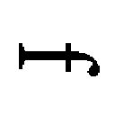＝..................」
やがて、ゆっくりと振り向いてきた。ひと仕事終えた顔をしていた。
「わかったか？」
こくん、とうなずき、
「１２４」
どうしてそうなった。
「正解は『おたまじゃくしだから鳴かない』だ」
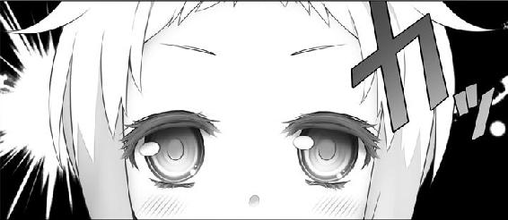
白亜は雷にでも打たれたように微動だにしない。
開いた瞳の奥に「なぜそんなことがわからなかったのか」という深刻な自問が浮かんでいる気がした。
あの天才の白亜がここまでの反応をするのは、正直、面白かった。
「ははは。白亜はこういうの、意外にダメなんだな」
ぽすっ。
膝を叩かれた。
おおっ!? 白亜が叩いた！
驚く俺の前で、白亜がまた背中を向ける。
「..................もう一問」
ゆらゆらと、青い炎が揺れている感じがした。
次はポピュラーなやつを出そう。
「車がカーブするとき、必ず落とすものはなーんだ？」
正解は『速度』。たいていの奴は知ってるなぞなぞだ。
「........................」
白亜が悩み、
「......ガソリン？」
「ガソリンは落とさないだろ」
「......部品？」
「恐いだろ」
「......人間？」
「恐えよ!!」
「....................................................................................................................................................................................................................................................................................................................................................................................」
白亜がまた深い穴に落ちていく。
「えっと、答えは――」
「まだ」
言って、考え続ける。
演算しているデスクトップ本体みたいに動かなかったのが、
......ゆさっ......ゆさゆさ......
体を上下に揺するようになってきた。
俺の膝の上に座ったまま、腰を上下させる。
......ぐっ、ぐっ、ぐっ......
だんだん動きが大きくなってくる。
高校男子の股の上で、小四くらいに見える女の子が、上下に動き続けている。
ぐいっ、ぐいっ、ぐいっ、ぐいっ......。
端から見ると、完全にアウトな光景なんじゃないかという気がした。
俺はまずいと思って、白亜の体を前にずらした。実際、当たってたしな。
白亜は揺するのをやめ、とうとう頭を抱えた。
両手で額にひさしを作って、うなだれる。
背中に、苦悩と絶望が漂いだした。
......これ、なぞなぞ考えてんだよな......？
と。
ぴくっ――と肩が震え。
突風のように振り向いてきた。
「わかったのか？」
こくんっ、とうなずく無表情には、ドヤ顔のオーラが溢れていた。
「削れたタイヤの分子」
「それはたぶん、まっすぐ走ってても落としてるだろうな」
白亜、絶句。
「正解は『速度』だ」
白亜の中で天地創造のごとき地割れが起こったかのような、そんな目の開きっぷりだった。
ぽすっ。
ぽすぽすっ。
膝を連打してくる。ものすごく納得がいかないけど否定もできない悔しさのオーラを全身から散布していた。
「ははは。白亜はこんなこともわかんないのかぁ」
からかう。
ぽすぽすぽすっ！
効果てきめんだった。
「もう一問」
「悪ぃ。ネタ切れだ」
ずっと叩かれた。
夕方になった。
今日はずっと二人きりで、いつもの部活と違い、静かにまったり過ごせた。
白亜は俺にもたれかかり、白い猫みたいにくつろいでいる。くっついてるやわらかい体温に、俺も癒された。
うん、こういうのも、いいな。
コンコン――ノックの音。
「失礼します」
崎守さん（白亜の専属メイド）が恭しく一礼する。
「白亜さまをお迎えに上がりました」
ああ、もうこんな時間か。
俺は本を閉じ、立ち上がった。
白亜が座ったまま動かないので、引っ張り立たせた。
「お疲れさまです」
「いえ。いつも白亜さまがお世話になっております」
いつもどおりの挨拶を交わす。
「さあ、白亜」
促したが、動かない。
「？ ほら......」
軽く背中を押すと――
ぎゅっ、としがみついてきた。
「おい......？」
放すもんか、という力で、俺のわき腹に顔を埋める。
「白亜、帰らないと」
ふるふる。
「公人といたい」
「............」
どうしたんだ、今日に限って。
いつもの部活のときは、すんなり帰るのに。
「白亜」
ふるふる。俺のシャツで額をこする。
「崎守さん、困ってるだろ？」
言って、崎守さんを見ると――
おっほう
そんな興味全開な顔で見てきていた。
次の瞬間、「何か？」というプロの顔に戻っていた。
「どうされました？」
「い、いえ」
......気のせいだったのかな？
結局、一緒に寮まで行くことになった。
西日の差す少し肌寒い道を歩きながら、白亜が「逃がさない」とばかりに俺のシャツを掴んでいた。
「シャツが伸びるだろ」
俺は白亜の手を取り――つないだ。
「ほら。これで行こう」
「............」
手をつないだまま、白亜はきょとん、という感じで見上げてくる。でもすぐに、
きゅっ......。と小さな手で握り返してきた。
本当に白魚みたいに、細くてすべすべな指だった。
俺をみつめる瞳が一瞬、靄がかかったようになった。うれしいらしい。
「そうしていると、恋人同士みたいですね」
前を歩く崎守さんが、楽しそうに言う。
いやいや、それはちょっと無理があるんじゃ？
白亜を見ると、ほんの少しうつむいていた。西日が強く差していて、その顔色はわからない。
寮に入り、白亜の部屋の前まで来た。
「じゃあ、ここで......」
俺は手を離そうとしたが、白亜は頑として放さない。
「白亜さま。公人さまにご迷惑ですよ？」
崎守さんが困ったふうに言い、ドアを開けた。
「さ、白亜さま」
だが、動かない。
「白亜」
俺は目線の高さまで屈んだ。
みつめてくるまなざしが、どこかせつなげな色を浮かべている気がした。
「また明日も会えるんだから」
「............」
わかってくれたみたいだ。
お前は賢い子だもんな。
白亜はそっと手を離し、部屋の入口に向かう。
俺はそばまでついていく。
久しぶりに見た部屋の中は、相変わらずだ。
分厚い本がぎっしり詰められた大きな本棚と、収まりきらずに床に積まれた本とレポートの束。七割が外国語。
メイドさんたちの努力のかいあってさっぱり片付いており、他には何も飾り気が無......
「――お？」
ベッドの枕元に、でっかい男の子のぬいぐるみが置かれていた。
「ぬいぐるみ、前はなかったよな？」
なにげなく聞いたとたん――白亜がぴたり、と止まった。
うしろで、崎守さんがくすりと笑う。
「神楽坂さま。実は、あのぬいぐるみはですね――」
ぐいっ！
白亜が俺を押した。
両手で、大きな石でも運ぶみたいにぐいぐいと部屋の外へ押し出していく。
「え？ え？ 白――」
ばたんっ！ ドアが閉まった。
「............」
なんだったんだ？
俺は寮を出た。
外はいっそう暮れていた。一日が終わろうとしている。
俺はふと今日を思い返し、久しぶりにとても穏やかに過ごせた休日だったなと満足を覚える。
今日は、白亜と過ごすなにげない休日だったと。
麗子の部屋にて、女子会が開かれようとしていた。
お茶会、と表現するには参加しているメンバーの毛色がいつもとかなり違っているのである。
習慣として口角を上げつつ、優雅にティーカップを持ち上げる麗子。
日本刀を抱き、人斬りのような風情で座る可憐。
やたらそわそわしている愛佳。
以上、三名。
メイドを下がらせた部屋には、まさしく女子会と呼ぶべき、ドロドロとしたあれやこれやの雰囲気が渦巻いている。
いったい何が乙女たちを女子会に至る病に罹らせたのか。
麗子が、静かにカップを置いた。
「最近......公人さまと白亜さまの仲がとてもよろしいようですわね」
慇懃な微笑から迸る、貫禄。
さながら近世ヨーロッパにおけるサロンの支配者のようで、もはや麗子というよりポンパドゥール夫人とか、そんな感じであった。
「はっきり言ったらどうだ、有栖川」
可憐が、人斬り以蔵のごとく部屋の隅で闇をくすぶらせている。
「あれはもはや、犯罪だ」
「............」
愛佳は緊張した面持ちでずっとそわそわしている。
「どうしましたの、愛佳さま？」
「！ べ、べつに！ クラスメイトの部屋でお茶会なんてものすごく久しぶりで緊張してるだけよ！」
ツンピュアさんが、自らのぼっち具合を正直に晒す。
「初等部四年生以来ですものね」
「なんで知ってるのよ!? あんたずっとクラス離れてたでしょ!?」
「聞きました」
「なんで聞くのよ!?」
「お、おかしな勘ぐりはやめてくださいませ。立場上、いやでも耳に入ってきますわ」
清華院は基本、一学年に二つのクラスしかない。何か噂があれば、すぐに共有されやすい環境ではある。
「それより、愛佳さまはこの件についてどう思われますの？」
「アウトに決まってるじゃない!!」
愛佳が爆発した。
「ずっと気にはなってたけど、最近は異常よ！ あたしがちょっとでも公人と話し込んでると公人にくっついてきて、それであいつの注意があっちに行っちゃうし！」
「私にくっつけばいいのに」←可憐
「そのあとゲームで協力プレイして、さすがに白亜がくっついてきても公人無視してるなーと思ってたら、白亜が服脱ぎだして、また中断!!」
「無理に着せることはないと思う」←可憐
「何アレ!? わざとやってんの!?」
「仰るとおりですわっ！」
麗子もつられて熱くなる。
「いつもクッキーなどのお菓子を召し上がるとき、公人さまの手から直接食べさせて頂いている！ あれはなんというか......ずるいですわ！ わたくし、見ていてもやもやいたしますわ！」
「そうよ！」
「ですわよね!?」
仲良く意気投合しかけて、二人がハッとなる。そして互いにそっぽを向いた。
ドスッ！ 可憐が、鞘の先端で絨毯を突く。
「うらやましい！ あいつ殺したい！」
「こ、殺しては駄目ですわ......」
「でもたしかに悪いのはあいつよ！」
愛佳がまたヒートアップする。
「白亜にお菓子をあげるときとか、ニヤニヤしちゃってさ！ 他のことだって全部、なんだかんだで喜んでやってる感じ。あたしわかるの！ あいつ召使い体質よ！ セバスチャンよ!!」
「気配りに長けていらっしゃるだけでは？」
「ちがうちがう！ あいつはああいう、めんどくさい子に振り回されるのが大好きなのよ！」
自分のことを完全に棚に上げていた。
「..................わたくしも脱げばよいのでしょうか？」
「は？」
「い、いえっ！ なんでもありませんわ！」
「......奴の手から、白亜を取り戻さなくてはならない......」
可憐が、刀の鍔口を睨みながら言う。
「このままいけば、奴は間違いなく白亜にあんなことやこんなことをして......ゆ、許せん......ッ!!」
まるで川に映った自分の姿に吠える犬のごとく、いきり立つ。
「そうよ！ これは犯罪なんだから止めるべきなのよ！」
「そ、そうですわね。犯罪は未然に防がないといけませんわね」
何か大義名分を得た感じで、女子たちがまとまる。
「......一度、白亜さまとじっくりお話しいたしましょう」
麗子が、ポンパドゥール夫人になって言う。
こうして、女子会は幕を閉じた。
「ちょっ、どういうことだよ!?」
放課後、俺は自分の部屋から追い出された。
入口には、愛佳と麗子と可憐が三人、揃い踏みしている。
「女の子だけで大事な話があるのよ」
「はあ!? そんなの、よそでやりゃいいだろ！」
「すみません公人さま。故あって、ここでしなくてはならないんです」
「麗子まで......どういうことか説明してくれよ」
「それは申せません」
「さっさと失せろ、変態」←可憐
「お前にだけは言われたくねーよ！」
「フッ。今日の私は機嫌がいいから、斬るのは後にしてやろう」
「後で斬るんだ！ 機嫌いい意味ほとんどねぇ！」
「というわけだから、テキトーに時間潰してきて。メールするから。じゃっ」
「あっ、こら愛佳！」
バタンッ！
「......さてと」
愛佳たちは座卓に戻り、それぞれクッションに腰掛けた。
「いつもどおりなら、そろそろいらっしゃいますわ」
麗子が懐中時計を確認する。一応ケータイを持っているのだが、使う習慣はほとんど身についていない。
可憐が、自分のクッションを膝の上に置く。そして――おもむろに抱きしめた。
「......あんた、何やってんの？」
「予行練習だ」
「は？」
「今日、あの変態はいないわけだろう」
「変態って、公人のこと？」
「ゆえに白亜は、私の元へ来るわけだ。特に気が進むわけではないが、年長のお姉さんとして最低限は遇してやらねばなるまい」
言って、可憐はクッションをぎゅううぅぅ～～っと抱きしめ、頬ずりしはじめた。
「く......くだらないっ、これはまったく、くだらないなっ！」
頬を赤らめながら、ほむほむしている。
「変態はあんたでしょ」
愛佳はざっくり言ってしまったが、幸いにもその声は耳に届いていないようだった。
ガチャッ。
白亜がドアを開けた。
無表情で部屋を見渡す。誰かを捜すみたいに。
「き、公人さまは、ご用事ですわ」
麗子が言う。
「本日は、戻ってこられません」
「............」
白亜が帰ろうとする。
「待って！」
「お待ちになって！」
愛佳と麗子が、左右から捕まえる。
「た、たまには公人抜きでいいじゃない」
「そうです。女の子同士というのも、楽しいものです。わたくし白亜さまと過ごしたいですわ」
「............」
白亜は無色のまなざしで二人を見たあと、
「さあさあ、こちらに」
と引かれるままに、部屋の中に入った。
可憐は本物が来たにもかかわらず、クッション相手にほむほむし続けていた。
ぎしぎしとした緊張が漂っていた。
クッションに座ってマンガを読んでいる白亜を囲み――
「............」
「............」
「............」
愛佳、麗子、可憐の三人は、何も切り出せず、ただ居心地悪そうにもじもじしていた。
一度きちんとお話ししなければならない――とは言ったものの、では具体的に何をどう問い質せばいいかわからない。
お嬢様はこういう駆け引きの経験がなく、なんのビジョンも持っていなかった。加えて言うなら、ヘタレだった。
ゆえに、セッティングはしたものの、いざ始まると何もできないのである。ダメな合コンみたいだった。
「そ、そうですわ！ お茶を淹れましょう！」
「そうね！」
「そうだな！」
というわけで、座卓にいつものようなお茶菓子が並んだ。
愛佳たちは紅茶をすすり、ぎこちなく間を埋める。
が、白亜は並んだお茶菓子をちらりともせず、手もつけない。
「ど、どうしましたの白亜さま？ さ、召し上がれ？」
麗子が困り果て、愛佳に耳打ちする。
（な、なぜですの......？ いつもと同じものを用意しましたのに）
（食欲がないんじゃ、ないの......？）
「――いいや、違うな」
可憐がすっと立ち上がる。
「どういうことですの？」
答えず、可憐は「まあ任せろ」という顔で皿のクッキーを一枚取る。
「白亜は、誰かの手から直接でないと食べないのだ」
学界の権威みたいな面持ちで白亜の前に屈み、そろそろ......と口許に差し出した。
そっぽを向かれた。
「なぜだ!?」
「いや、いつもでしょ」
愛佳が、ざっくりツッコんだ。
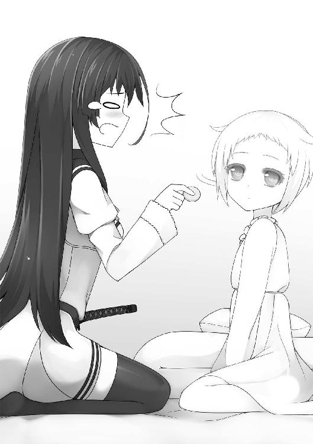
「............ぐッ............こうなっては是非もない！」
可憐がふいにタンスへ向かった。
中から公人の服を取り出し、部屋の隅っこでもそもそ着替える。そして――
「よお！ 俺、公人！」
ビシィッ！ と親指で自分をさす。
「好きなのは、筋肉質な男と小学生に見える女の子さ！」
最悪のステータスだった。
「さあ白亜。俺の手からクッキーを食うんだぜ？」
公人の服を着ただけの可憐が、白亜にリトライする。
そっぽを向かれた。
「なぜなんだぁ......ッ!?」
愛佳と麗子はもう何も言わず、ただ気の毒なものを見るまなざしを向けていた。
ぐうぅぅぅう～～～っ。
白亜のお腹が鳴りっぱなしである。
お腹が空いていることは間違いないのだが、白亜はマンガを読んだまま何も食べようとしない。
「は、白亜さま？ こちらなどいかがですか......？」
麗子がプチケーキを差し出すが――無反応。
「ほら、お腹空いてるんでしょ？ 食べなさいよっ」
愛佳がショコラをやや強引に押しつけるが、口を開けようとしない。
「............仕方がないな」
可憐が神妙な面持ちでポッキィを咥える。
「ふぁふあ」
単行本（Ｂ５判）でガードされた。
「......なぜですの......？」
座卓には、給湯室から持ってきた食料品が所狭しと並んでいた。
公人がよく白亜に食べさせているものも、たくさんある。
だが、どれひとつ手をつけようとしなかった。
......ぐうううぅぅぅ～～～～っ......！
お腹はいっそう鳴るばかりなのに、本人の態度はまったく変わらない――というのが、愛佳たちをますます困惑させた。
「あ、愛佳さまっ、どうすればいいんですのっ？」
「知らないわよっ」
二人はオロオロするばかりである。
「......霧生！ 霧生っ！」
「お呼びですか、麗子様」
やってきた専属メイドに、事情を説明した。
「白亜様は、曜日ごとに決まったものしかお召しにならないのです」
「え？ そうでしたの......？」
「待って、そんなわけない。公人が食べさせてるのって、ぜんぜんバラバラだもん」
「それは、私にはわかりかねます」
「ちなみに、今日は何を召し上がる日ですの？」
「ツナの巻き寿司だったかと」
「では、それを持ってきて頂戴」
「かしこまりました」
そして。
「お待たせしました」
「ご苦労さま。下がってよいですわ」
霧生から受け取った皿を手に、麗子が愛佳と目配せする。
それから白亜の元へ近づき、そっと巻き寿司を置いた。
「は、白亜さま。ツナの巻き寿司をお持ちいたしましたわ」
「............」
白亜が初めて反応した。
本から目を離し、皿に載ったツナ巻を視認し、手を伸ばし、つまんで、口に入れた。
もく......もくもく。と咀嚼する。
「......ほっ......」
一同に安堵が広がる。
愛佳は、やれやれとクッションに座り直し、はっ、と本来の目的を思い出した。
そうだ。白亜と「お話」しなくてはいけない。
べつに白亜が公人のことをどうしようと、どう思ってようと、どうでもいいことのはずなのだが、なぜか気になるし、公人が白亜にばかりかまけているのはいやだなぁと思う。
麗子と目が合った。同じく、この流れに乗って切り出そうと思っているようだ。
そうだ。こいつが「なんとかしたい」って言ってるから、その協力をしてやるのだ。うん。あたしってなんて性格いいんだろう。妖精？
可憐は小動物のように食事する白亜をガン見しつつ「くだらない......くだらない」とつぶやいている。こいつは使い物にならない。
愛佳がそこまで思考を終え、アクションを起こそうとしたとき――白亜の動きが止まった。
まるで可聴域外の音でも聞いたように刹那、静まったあと――
背中を向け、壁にへばりついた。
取り出した太マジックで、数式を書いていく。
ガッ！ ガガガガガガガ......ッ!!
壁を彫っていくかのような勢い。
愛佳たちがぽかんと見ているうちに、白亜はもう片方の手で脱衣を始めた。
体術の達人みたいな、無駄のない洗練された動きでパンツを脱いでいく。
「ちょっ、やめなさい！」
愛佳が必死に脱衣を押さえ込む。
「白亜さま！ パンツを穿いてくださいませ！」
麗子が懸命に穿かせようとする。
「くっ、くだらない......ッ!!」
可憐が愛佳の反対側から抱きつく。すりすりする。
いつもなら拒否られるのだが、今は集中状態なので、可憐は触りたい放題だ。半脱げの白い背中に、すりすりすり！ と頬ずりしまくる。
「あああくだらない！ 天国くだらない!! こんなものはおかしい！ 大嫌いだ......ッ!!」
「あんた邪魔！ どきなさい！」
愛佳が手で押し返すと、その手のひらに、べったりと可憐の鼻血がついた。
「きゃああ――っ!?」
「どうしましたの愛佳さ――――はぅっ（気絶）」
「ちょっ麗子！ 倒れてないでパンツ穿かせなさいよ!! 白亜は脱ぐのやめて！ 可憐は死ね！」
修羅場であった。
ベッドで白亜が安らかな寝息を立てている。
その向かいで、愛佳たちはぐったり......となっていた。
白亜がようやく眠るまで様々なことに気を遣い、振り回され、身も心もくたくただった。
ちなみに可憐がダウンしているのは鼻血の出し過ぎによる貧血である。プルーンを与えておいた。
「公人さまは、毎日これをやってらっしゃるんですの......？」
麗子が、一日ママ体験を終えたお姉さんみたいなことを言う。
「......ううん、そうじゃない」
愛佳には、わかっていた。
「あいつが相手してるときは、もっと扱いやすいのよ」
公人が用意したものはなんでも食べるし、そういえばあいつにもたれかかっているときは、あんまり「閃きモード」を発動しなくなっているんじゃないか。最初に比べれば、格段に減っている気がする。
いい意味でぼんやりしているか、別のことに意識を向けているのか......。
「......つまり、わたくしたちに心を開いていらっしゃらないということですの？」
麗子がちょっと気落ちしたふうに言う。
「......かも」
あるいは、まったく存在を意識されていないか、だ。
もしそうだとすると、それはかなり寂しいことだし、無視されていることに対しての苛立ちだってある。
そのとき、ドアがノックされた。
「失礼します。白亜さま、お迎えに上がりました」
白亜の専属メイド・崎守は、入ってきてすぐ部屋を一望し、
「公人さまは、席を外しておいでですか？」
「公人なら、今日はいないわよ」
「なるほど。霧生からお食事を運んだとの連絡を受けて、不思議に思っておりました」
うなずき、ベッドへ近づく。
「白亜さま、白亜さま。起きて下さいまし」
二度三度と揺さぶられ、白亜がゆっくりと目を開けた。
「迎えに参りました。さあ、お部屋に戻りましょう」
無言で起き上がる。
「今日は、公人さまがいらっしゃらなかったのですね」
すると白亜は、崎守を見て、言った。
「友達だけ」
なにげなく発せられた言葉は、しかし、水滴の落ちた波紋となって広がった。
――「友達」。
愛佳は、その言葉をしっかりと胸に捉えていた。
白亜は、自分たちの存在を無視したりなんかしていなかった。
会話の中でこぼれたなにげない欠片だからこそ、信じられる。
彼女は、彼女なりに、彼女の中で、自分たちのことを「友達」という場所に置いてくれていたのだ――。
「では帰りましょう」
崎守について歩きだそうとした白亜が、ふいに愛佳たちを見て。
「......お父さんカエルは『グワッグワッ』と勇ましく鳴く。お母さんガエルは『ケロケロ』とキレイに鳴く。じゃあ、子供のカエルはどう鳴く？」
なぞなぞを出した。
白亜から。
「え？ なぞなぞ......ですの？」
麗子はきょとんとする。
「お父さんがグワッグワッ、お母さんがケロケロ......子供のカエルは......子供のカエルは.........可愛ぃ――くだらないッ」
可憐がもだえる。
「は？ カエルの子はオタマジャクシだから、鳴かないじゃない」
愛佳は純粋に、疑問に思ったことを言った。
「！ そ、そうですわ！」
「言われてみればそうだ！」
「へ？ な、何？」
二人の反応に戸惑いつつ、愛佳が白亜を見ると......
彼女は大きく目を瞠り、こちらを見上げているのだった。
久しぶりに学長室に呼ばれた。
「神楽坂さまをお連れしました」
「ごくろうさま」
学長が、九条さんを労う。
立派な木製の執務机にかけ、学長はあいかわらずちょっと浮世離れした、ほんわかとした笑顔を浮かべている。
三〇手前だけど、お姉さんだぞ？ そんな見た目年齢をした、綺麗な人だ。
「学校生活はどう？」
「はあ、まあなんとか......」
「みゆきちゃんから聞いたんだけど、『庶民部』っていう部を作ったんだってね？」
「ええ......」
俺は、わきに控えているみゆきちゃんをちらっと見る。
「積極的に役割を果たしてくれているみたいで、お姉さんうれしいです」
お姉さん......？
「あと、みゆきちゃんから聞いたんだけど」
「あ、はい」
「女子の制服を着て、胸をはだけさせた状態で、みゆきちゃんに泣きながら抱きついたんだって？」
「違うんです!!」
「何も違いません」
「肝心の理由が抜けてるだろ!! ってかお前、そんなことまで報告してんのかよ！」
「訴訟の相談をしようかと」
「訴訟!?」
「あの出来事以来、手を洗う時間が異常に長くなりました」
「地味にキツいこと言うなよ!?」
「嘘です」
「嘘かよ!!」
「二人とも仲良くやってるみたいで、何よりだわ」
「学長にはなぜそう映るの!? どこか平行世界を見ているの!?」
俺のツッコミを、学長は「うふふ」とそよ風のように流した。
「......えっと......結局、用っていうのは近況の確認ですか？」
「ああ、そうそう、そうだった」
違うらしい。
「実は、今度の遠足のことで相談があったのよ」
「相談......っていうか、遠足？」
「毎年、この時期にあるの。明日、ＨＲで告知するわ」
「はぁ」
「それで、今年の遠足先として《庶民ランド》を建設中なんだけどね？」
「......は？」
なんか変な単語、出たぞ。
「庶民ランドとは、お嬢様方に庶民文化を体験して頂くためのテーマパークです」
九条さんが説明する。
「テーマパーク......？」
「現在、某所に建設中です。敷地面積は一五〇一一平方メートル、宿泊用のホテルも併設しています」
「遠足といっても、ゆっくりできるよう一泊はしたいものね？」
「..................」
久しぶりに、清華院の別次元っぷりを実感させられた。お金は、ある所には、ある。
「庶民と海をテーマにした《庶民シー》も隣に作ろうかという案が出ましたが、今回は保留になりました」
「没にはなってない!?」
そして、使い道がアホっぽい。
「この庶民ランドの建設が実現したのは、神楽坂くんのおかげなのよ？」
「俺......っすか？」
「ええ」
学長が、うれしそうに言う。
「あなたが来てから、学校の雰囲気が明るくなったわ。心配されてた生徒たちへの悪影響もないって、使用人たちからの報告も受けています」
「............」
これ、褒められてんだよな？
「やっぱり男子がいると、女の子は気合い入っちゃうのねぇ」
「そ、そんなもんっすか......？」
思いがけず、うれしい気持ちになったとき、
「男子といっても、マッチョ好きの変態ですが」
九条さんがつぶやく。
「誰がマッチョ好きの変態だ！」
「―――違うのですか？」
九条さんの眼光が鋭くなる。
「あなたがノーマルである場合、お嬢様方の身の安全のため、今すぐ男性器を切――」
「将来の夢は、マッチョに塗られる油になることですッ!!」
そうだ、そういうことになってるんだった。危うく世継ぎが作れなくなるところだったぜ。
「というわけで、庶民ランドの準備を手伝ってほしいの」
学長が、話をまとめにかかる。
「アトラクションのアドバイスをしてほしいのよ」
アトラクションって言ってる時点で、俺には若干意味不明だった。
「あなたの持つ庶民感覚を、最大限に活かす機会がやってきたということです」
九条さんがふいに、神妙な面持ちでみつめてきた。
「神楽坂さま。どうか、持てるお力を存分に発揮して下さい」
「九条さん......」
「あなたが生まれてきたのは、今日、この一瞬のためなのですから」
「俺の人生、安っ!?」
愛佳が、公人のベッドに寝転がって『ラブカノ』をやっていると――
ガチャッ、と麗子がドアを開けた。
「公人なら、いないわよ」
画面の埜々さんに視線を戻して告げる。
「まぁ。まだ戻られませんの？」
放課後にメイド長と学長室へ行ったきり、まだ帰ってきていない。
「遅くなるかもね。白亜も可憐も来てないし、今日はずっとこんな感じかも」
その言葉の後半に、愛佳は言外のメッセージを麗子に送った。
わかるでしょ？ と。
二人きりで過ごすなんて、お互い嫌でしょ？
だから、そのまま帰りなさい――と。
改めてであるが、愛佳と麗子の関係はよろしくない。
麗子がいろいろあって愛佳にブチ切れ、「嫌い！」と取っ組み合いになったことが直接の原因だが、愛佳はもともと人気者でリア充全開の麗子に対して非リアの妬みを溜めていたので、いずれにせよ同じだったと言える。
お互い、無意味に近づかないのが一番だ――と愛佳は思う。
「やはり二人だと、部屋が広く感じますわね」
「って、なんで入ってくんの!?」
「読みたい本があるだけですわ」
言って、麗子が本棚の前に屈む。
「............」
愛佳は３Ｄｓをやりながら、憮然と眉をひそめる。
――なんで!? フツーわかるでしょ!? 何考えてんの!?
「愛佳さま」
「な、なによ？」
麗子が、ラノベをいろいろ手に取りつつ、
「どうして、どの表紙も女の子が描かれているのでしょう？」
「知らないわよ。女性が主人公の作品なんじゃないの？」
「でも、他の作品を見ても、すべてそうなってますわ。女性向けの本ならともかく、この小説は殿方向けのものなのでしょう？ おかしいですわ」
「だから知らないって」
麗子は首を傾げながら、本を見繕う。読みたい本があるんじゃなかったのか。
「......あんた、借りて部屋で読みなさいよ。あたしから言っといてあげるから」
「それを言うなら、あなたこそゲームを借りていけばよろしいのに。どうしてここでなさっていますの？」
......なんとなくのことを聞かれても困る。
「それよりベッドから降りたらいかがですの？ 寝たままなんて、お行儀が悪いですわ！」
「......うっさいなあ」
愛佳は渋々降り、ベッドを背もたれにして三角座りする。
「！ あ、愛佳さまっ」
「何」
「パ......下着が見えてますわよ！」
「――!?」
あわててスカートを押さえる。
「へ、変態っ！」
「なっ!? それはあなたでしょう！ はしたない！」
麗子は頬を赤らめつつ――
「公人さまがいないからって、弛みすぎではなくて!?」
「きっ、公人は関係ないわよ!!」
「いいですか？ 淑女たるもの――」
「あーうっさい！」
愛佳は立ち上がった。
「あたし、部屋に帰る」
「どうぞご自由に」
ドスドスと出ていこうとしたとき――
「これで公人さまが戻ってきたとき、二人きりになれますわ」
「............」
愛佳はドスドスと引き返し、元の位置に座った。
「あら？ お帰りになるのではなかったんですの？」
「あっ――あんたこそ、お茶会行きなさいよ！ 放課後、誘われてたでしょ!?」
「わたくしの自由ですわ」
「............っ」
こうして、愛佳は麗子と二人きりで過ごすことになった。
最悪だと思った。
「............」
「............」
愛佳はラブカノで埜々さんとの親睦を深め、麗子は本棚に少しあった少女向けのラノベを読んでいる。
お互いひと言も話さず、淡々と時間が流れた。実はこれは、お嬢様同士の交流ではあり得ない現象だった。
絶えない会話と笑顔。何か遊戯をするときは必ずみなさんで。それが淑女の交わりである。
しかし、この淡々とした時間にも、愛佳のＭＰはじりじりと削られていた。
たまらず、立ち上がる。
「あたし、トイレ」
「わたくしも」
「なんでついてくんのよ!?」
「たまたまですわ」
「............」
しかたなく、一緒に行った。
トイレから出て、愛佳は麗子と逆の方向に歩きだす。
「どちらへ？」
「給湯室で水飲んでくる。先戻ってていいから」
「では、わたくしも」
「なんでついてくんのよ!?」
「言われて、気が向いただけですわ」
「だとしても空気読みなさいよ！」
「？ 仰ってる意味がよくわかりませんわ」
「......ッ！」
愛佳はくるっと向きを変え、部屋に向かって歩きだす。
「あら、お水はよろしいんですの？」
「ええ。あんたは行ってきなさいよ」
「そうですか（くるっ）」
「だからなんであんたも戻んのよ!?」
「心境の変化ですわ」
「......何!? いやがらせなの!?」
「は？」
「とぼけるなっ！ あたしについてきて楽しい!? 楽しくないでしょ!? あたしはあんたに付きまとわれて、ぜんぜん楽しくない!!」
「............」
「それが狙いでしょ!? そうなんでしょ!?」
それ以外、愛佳はないと思った。こいつあたしのこと嫌いなんだから。
「......いやですわ、愛佳さまったら。何をカリカリなさっているのかと思えば......」
にこっ、と白薔薇の微笑みを咲かせる。
「少々、自意識過剰なのではなくて？」
「......ぐっ......ッ！」
憤懣やるかたなく、部屋に戻った。最悪だ。最悪だ。
ゲームを再開する気になれず、愛佳は本棚からマンガをあさった。
最近お気に入りの四コママンガを手に取る。気分転換には最適だ。
「なんですの、それ？」
「ちょっ!? 近づくな!!」
「......『ゆるゆり』？ どういう意味ですの？」
「知らないわよ」
「第一巻は、どこですの？」
「なんで読もうとするの!?」
「これも表紙が女の子ばかりですわね......」
単行本を手に、小首を傾げる。
「公人さまがお持ちの本は、ほとんどがそうですわね。なぜでしょう？」
「変態だからじゃないの？」
「な、何を仰ってますの!? 公人さまは紳士でいらっしゃいますわ!!」
「変態の紳士なんじゃないの？」
「ああ、でも、そうですわ。公人さまはきっと、女性にとても興味がおありになるのですわね......」
まあどうしましょう、とつぶやいて、麗子が頬を染める。
何が「どうしましょう」よ、と愛佳は思った。
そして二人は、ゆるゆりを読んだ。
......麗子が、満足げな表情で本を閉じる。
「わたくし、綾乃さまをとても好ましく思いましたわ」
「綾乃って、あの『罰金バッキンガム』とかよくわかんないこと言う、生徒副会長？」
「ええ。たしかに不思議な言動もある方ですが、とても真面目で一生懸命で、何より京子さまへの好意を素直に表せない不器用なところが愛しいですわ」
「......えー？」
「な、なんですの？」
「だってその子、理解できないんだもん。なんで京子なんか好きなわけ？ 京子って自己中で、いいかげんで、ただのトラブルメーカーじゃない。余計なアイデアばっかりぽんぽん思いついて、ろくなことしない」
「たしかに京子さまについては、わたくしも思うところがありますわ。どうして綾乃さまのお気持ちに気づいて差し上げないのでしょう？ たしかに不器用な表現ではありますけれど、京子さまも鈍すぎです。わたくし、とても歯がゆく感じますわ」
「あと、同じように理解できないのは、生徒会室でいっつもいがみ合ってる二人組」
「櫻子さまと向日葵さまですわね？ わたくし彼女たちの関係も、とても好ましく思いますわ」
「はあ？ わけわかんない！ 見なさいよ」
ページを開いて、指さす。
「どう見ても互いに嫌い合ってるじゃない。なのになんで距離を置かないの？ 不毛よ！」
「何を仰ってるんです。このお二方はどう見ても相思相愛ですわ」
「ええ!? なんでそういう解釈になんの!?」
「いつも一緒じゃありませんの。本当に嫌いなら、まさしく距離を置いてますわ。口では悪く言いながらも、互いに大好きで離れられないのです」
「憎しみでつながった関係よ！ 負の連鎖よ！」
「微笑ましい関係ですわ」
「妄想激しすぎ」
「あなたがひねくれてるだけですわ」
互いににらみ合い――
ふー......と同時に、あきらめたような溜め息をつく。
「では愛佳さまは、どの方が好きですの？」
麗子が、さすがの委員長スキルで立て直す。
「あかり！ なんか親しみが湧くっていうか、他人のような気がしないのよね」
「......あかり......？」
麗子が、きょとんとする。
「そんな方、いましたっけ？」
「／アッカリ～ン＼ ――って主人公でしょ!? この子よ、この子!!」
「ああ、この方でしたか......すみません、印象に残らなかったもので」
「信じらんない！ 誰にも嫌われてない、超いい子なのに！」
「あたし、おやつ取ってくる」
「わたくしも」
「なんでついてくんのよッ!?」
......こいつ、よっぽどあたしのこと嫌いなんだ。
愛佳はいらいらしながら、給湯室へ行った。
ガパッ、と冷蔵庫を開ける。
「あ、ロールケーキがある」
やりぃ、と取り出す。
「わたくしが切りますわ」
「......いいけど」
麗子に渡して、他に何かないかと見る。
フルーツとかジャムとか、お茶会に使われるものが広いスペースにぽつんと置かれているが、公人が使いだしてからは、いろんな食料とか見慣れないものが入るようになった。
それでも愛佳たちは、公人がおやつとして出してくる関係で、基本的に知ってるものばかりなのだが――
「？ 何これ......？」
見たことのない五〇〇ミリペットの飲料があった。
「どうしましたの？」
愛佳は、ボトルを取り出した。
「.........どくとる......」
「『ドクトル・ペッパー』？」
さっと読み終えた麗子を、軽くにらむ。
「なんですの、それ？」
「飲み物じゃない？」
「でも『ペッパー』と書いてますわよ？ 何か調味料ではありませんの？」
麗子が体を寄せて、ボトルに触れる。
「ちょっ、くっつかないでよ」
「ああ......たしかに『清涼飲料水』と書いてますわ。原材料は......コーラに似てますわね」
「コーラっ？」
愛佳の顔がぱっと明るくなる。コーラ大好きなのだ。
でも「あまり飲むと体によろしくない」という学校の方針で、パーティーのときにしか飲ませてもらえない。なじみが薄いこともあり、他に好むお嬢様も少なかった（もっぱらお茶、一〇〇％ジュース、ミントやレモンを浮かせた炭酸水を飲む）。
なので最近は、公人に仕入れさせてこっそり飲んでいた。
「コーラの親戚ね？ 言われたら、見た感じの雰囲気も似てるし」
「公人さまが仕入れた、庶民の方の飲み物なのでしょうね」
「あたし、これ飲む」
「ず、ずるいですわ愛佳さま！ わたくしだって飲んでみたいです！」
「な、なによっ。あたしが先に見つけたんだから！」
愛佳はボトルを引き寄せ、
「あんたはいつもどおり、そこの炭酸水飲みなさいよ！ 他の子ならいいけど、あんたにだけは絶対譲りたくない！」
とたん。
「......。......わかりましたわ」
麗子が、妙にしゅんとなった。
「へ？」
「たしかにひとつしかないのですから、しかたがありませんわね」
取り繕うような微笑を浮かべて、言われたとおり炭酸水のビンを取る。
「ち、ちょっと......」
なんだろう。どうして急にヘコんだのか、愛佳にはさっぱりわからなかったが――
「..................コ、コップ」
愛佳はぼそりと、
「コップ取ってきなさいよ。分けてあげるから」
部屋に戻り、座卓には二つのコップが並べられた。
麗子が、やたらにこにこしている。すごくうれしいことがあったみたいに。
「あんた、さっきから何にやにやしてんの？」
「！ べ、べつに、にやにやなんてしてませんわ！」
両手でぎゅむ、っと頬を押さえる。
「わたくしはただ、その『ドクトル・ペッパー』が楽しみなだけですわ！」
「あっそ」
愛佳はどうでもいいので、ボトルを手に取る。何よりこっちだ。
「うふふ」
ほくほく顔で、キャップをねじった。
プシッ。
――うん、これこれ。
コーラの香りを期待して鼻を近づける。
「..................ん？」
「どうしましたの？」
愛佳は黙ってボトルを麗子に差し向ける。
「..................変わった香りがしますわね」
麗子も眉をひそめる。
「これ本当にジュースですの？ 実は風邪のお薬などではありませんの？」
「あーたしかにそれっぽいかも。漢方とか」
「でしょう？ でも、たしかにラベルには清涼飲料水と書かれていますし......」
「......。まっ、大丈夫か」
愛佳はコップにどぼどぼ注ぎだす。
「あいつが持ってきたものでダメなやつって、今までなかったし」
「そ、そうですわね！ 公人さまのものですもの。間違いありませんわ」
「きっと、びっくりするぐらい美味しいのよ。ぜんぜん知らなかった味で」
「庶民の方って、本当にすごいですわね」
二人は同時にコップを手に取る。
「うん、おいしそうじゃない」
ガラスの縁でしゅわしゅわ弾ける泡をみつめて、愛佳はうなずく。
「じゃあ」
「ええ。頂きましょう」
愛佳と麗子はコップに口をつけ、くーっと飲んだ。
ブ―――――――――――――――――――――――――――――――――――――――――――――――――――――――――ッッ!!
ジェットのごとく吹いた。
「「なにコレ!?」」
庶民にとっても「好きな人は好きだけれど」というカテゴリーの飲料は、お嬢様たちにはいささか早すぎた。
「ってかアンタ、何おもいっきり吹きかけてんのよ！ きたない！」
「あ、あなたこそっ！」
二人ともハンカチを取り出し、ぬぐっていく。
制服もけっこう濡れてしまっていた。
「あーもうぜんぜんだめ」
愛佳は脱ぎにかかる。
「ちょっ、何してますの!?」
「だってこのままじゃ、ベタベタしてきそうだし」
「............は、はしたない」
言いながら、麗子もしょうがなしに脱ぎだす。
「いいでしょ、あたしたちしかいないんだから」
「............」
ワンピースタイプの春服なので、脱ぐと一気に下着姿になった。
麗子が脱いだ服をてきぱきと畳み、座卓をサッサと拭いていく。
動くごとに、その豊かすぎる胸の谷間が揺れている。
愛佳を１単位とするなら、９愛佳くらいのカップのブラジャーでしっかり支えてなお、のむんっ、のむんっ、とスケールでっかく上下していた。
「？ なんですの、愛佳さま？」
「.........べつに」
べつに。と思っているのだ。愛佳は。
「ああ、なんですの、その畳み方」
麗子が、愛佳の制服を見とがめ、腰を上げる。
「ちょっ、いいって！」
畳み直そうとした麗子から、制服をひったくる。
「よくありませんわ。清華院の生徒として、その作法はあんまりです。貸してごらんなさい」
身を乗りだしてくる。
「いいって！ やめて！」
「いいからわたくしに―――あっ」
ノートを踏んづけて、滑った。
麗子が、愛佳の上に倒れ込む。
「きゃあっ!?」
どしんっ、と床に折り重なった。
「うぷっ!?」
「だ、大丈夫ですか、愛佳さまっ!?」
「～～～～～～っ!!」
麗子の胸が、愛佳の顔面をむ乳っと押し潰していた。
「あっ――すいません」
「ぷはっ！」
「申し訳ありません、うっかりしてしまって......」
のむんっ。愛佳の上で、おっぱいが揺れる。
「お怪我はありませんか？」
のむむんっ。ちょっとした動きで、「あー重くて肩が凝っておっくうだわー？」という感じで揺れる。
愛佳は自分の無乳をほんの刹那見て、くわっと眉をつり上げた。
「いいから、このむさ苦しいもの、さっさとどけなさいよ！」
「む、むさっ......わたくしの胸のことを仰ってるんですの!?」
「それ以外、何があるのよ！」
「訂正してください！」
「いやよ！ いいからどきなさい！」
「どきません!!」
ゆらっ。愛佳に見せつけるように、胸をゆり動かす。
「わたくしの胸のっ（ゆりっ）、一体どこがっ（ゆららっ）、むさ苦しいって（ららっ）いうんですのっ！ （ゆるゆりっ！）」
ぶちっ。
「う―――うぜえええええええええええ!!」
ぐわしぃっ！ 愛佳が、麗子の胸を両手で鷲づかみした。
「いいからどけっ!!」
「ちょっ......い、いやですわ！ 訂正するまでわたくし、絶対にどきませんっ!!」
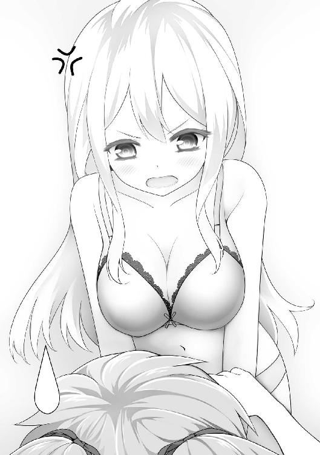
ガチャッ
公人がドアを開けた。
「「.........あ.........」」
つぶやく二人の視線の先で、公人はドアノブを握ったまま、硬直している。
「..............................」
彼の目の前には――ブラジャーとパンツだけの姿で上下に重なり、愛佳におっぱいをつかまれた麗子が必死にそれを押しつけている光景が広がっていた。
カーペットに散らばる、『ゆるゆり』の単行本。
公人の顔が、真っ赤に染まった。
「し―――失礼しましたっ!!」
バタンッ！
「ち、違うのよ―――――――――――――――――――――――――――――――っ!!」
「誤解ですわ公人さまぁ―――――――――――――――――――――――――――っ!!」
大事件。
春爛漫！
百花繚乱！
教室は、そんな感じに大盛り上がりしていた。
「《庶民ランド》！ なんて楽しそうな響きでしょう！」
「待ち遠しいですわ......！」
終業のＨＲで遠足の内容を聞かされ、すでに知っていた俺を除くお嬢様たちがきゃっきゃとはしゃいでいる。まだ教師もいるのに、正直、かなり珍しい光景だった。
「はーいみなさん、静かにしてねー？」
教壇に立つ学長が、やんわり注意する（このクラスは、なぜか学長が担任だ）。
とたん――すぐに静まり返った。
楚......という感じで姿勢を正す。
過ごしてわかったけど、清華院はこのへんのしつけや教育がかなり厳しい。真のお嬢様校ってことだろう。
「今回の遠足では、庶民ランド内に建てたホテルで一泊してもらいます」
うず......っ！
お嬢様たちが、膨らんだテンションを押さえ込む。
行儀よく膝の上に手を置きつつ、瞳はキラキラ輝き、頬は赤らみ、唇はもにょりとなっている。
「ひと部屋、二人ずつなので、これからペアを組んでもらいます」
うずうず......っ！
「あ、神楽坂くんはペアを組まずに一人でね？ 一応、殿方ですから」
「はい」
............。
お嬢様たちが、早くもペア候補と目配せし合っている。すんなりつながっていくライン。
その一方で、複数のラインが集中している箇所があった。
その先にいるのは――やっぱり人気者の委員長、麗子だ。
だが、複雑にラインが交差する教室内に一つ、ぽっかりとした空白地帯が生まれていた。
やっぱり、愛佳の席だった。
皮肉にもあいつの席は教室の真ん中近くにあって、その空白っぷりがとてもわかりやすく浮かび上がっていた。
愛佳は「なに怒ってるの？」と周りに聞かれそうな無表情で、国語の教科書を広げている。
あいつを見てきた俺にはわかる。
あれは愛佳のぼっちテクニックの一つ、『教科書に載ってる小説に夢中で、まわりで何やってるかなんて、ぜんぜん意識に入ってませんよ？』アピールだ。誰も見てなんかいないのに。
「では、ペアを組んでくださーい」
とたん、みんな黄色い声とともに席を立ち、
「弓香さま、わたくしと！」
「ええ、喜んで」
普段から仲のよい者同士のペアがあっというまにできていく。
「楽しみですわね！」
「ほんとうに！」
そして、麗子の所に一〇人近くの女子が押し寄せていた。
「麗子さま、わたくしとペアを組んで頂けませんか!?」
「ぜひ、わたくしと！」
囲まれた麗子は、愛想のいい困り笑いを浮かべている。
「まあ、どうしましょう......」
賑わう教室の中で、愛佳の周りだけが無人になっていた。
さながら、周辺にばかり銀河が集まり「このへんだけなぜか星がないよ！」という宇宙の大規模構造のごときありさまだった。
愛佳が教科書をしまい、そして、ゆっくりと机に突っ伏した。
愛佳のぼっちテクニック、基本にして最終奥義『寝たふり』だ。
「あらあら......」
学長がその様子を見て、言った。
「誰か、天空橋さんとペアになってあげて下さーい」
......うわあ。
クラスメイトたちは顔を見合わせるが、動かない。
それは仕方ない。これまでさんざん相手からのコンタクトを避けてきたあいつの自業自得だ。
嘘がつけない癖から「下手なことを言って嫌われてしまう」と怯えているせいだったけど、まわりはそんなこと知るよしもない。
愛佳は突っ伏したまま石のように動かない。吹雪が過ぎるのを待つように身を低くしている。
庶民部では、あんなに活き活きしてるのに。
――なんとかしないとな。
この遠足が、チャンスだ。
アドバイザーをやったおかげで、俺は《庶民ランド》の内容がだいたい予想できている。
ここから作戦を立てて、愛佳がみんなと仲良くなれるきっかけを作ってやろう。
ったく、しょうがねえな。
「――うん、こんなもんだな」
遠足の予習が、ひととおり終わった。
「やったうちのどれかは、絶対出てくるだろ」
初めての庶民文化にふれてクラスメイトが驚き、戸惑ってるところに、愛佳が「こうするのよ」とさりげなくリードする。最低でも無言で手本を示す。
そのことにより、愛佳への注目は俄然高まる。
そして、レクチャーすることを、コミュニケーションのきっかけにしていく作戦だ。
「ふぅー」
愛佳が、座ってたベッドに仰向けに倒れ込む。
休日の昼前、部屋には俺と愛佳しかいない。こんな部活なので、集合時間とかは特に決まっていない。休日はみんな来たり来なかったり、けっこうバラバラだった。
「あ！」
何か思い出したように。
「プリントやんなきゃ......」
「ああ、Ｒのテキストに落書きしてたのがバレて、お前にだけ出されたプリントな」
「そうよ」
ふにゅ～っ......と脱力する。
「メアリーに髭生やしたくらいで、そこまでしなくていいじゃないね？」
「お前って、ほんとにお嬢様なの？」
「あーだるいなー......」
股を開きぎみにしながら、足をぶらぶらさせる。
「そうだ！」
がばっと起き上がり、
「あんた、代わりにやってよ！」
「は？」
「いいじゃない。庶民なんだし、お嬢様たるあたしに奉仕しなさいよ？」
愛佳は、にこにこしつつ、
「あっ、そうだ。やってくれたら礼状書いてあげるわ！ あたしの天下一品の字で綴られた礼状なんて、庶民のあんたには泣くほどうれしいでしょ!? うんうんわかってるって！ 額に入れて毎朝手を合わせてもいいわよ！ うふふ！」
俺は、無言で立ち上がった。
「な、何よ......？」
「愛佳。お前は、勉強の大切さがまったくわかってないようだな」
暇だし、愛佳で遊ぶことにした。
俺は机の本棚から、冊子を抜き取る。
「これを読んでみろ」
それは、ずっと前に届いたダイレクトメール。
有名な通信学習教材の紹介マンガだった。
「『孫堅ゼミ』......？ なにこのマンガ？」
「ここには、勉強をすることがいかに大切か、そして、それをサボった人間がどんな悲惨な末路をたどるかが詳細に書かれている。俺たち庶民の間ではとても有名な、バイブルと呼べるものだ」
「バ、バイブル......？」
愛佳がごくりと息を飲み、孫堅ゼミの冊子をみつめる。
「いいの読んで？ ......大事な物なんじゃないの？」
「たしかにとても貴重な本だが、今回は特別だ。心して読め」
「う、うん......」
愛佳は、緊張の面持ちでマンガを読み始める。
内容は、こんな感じだ。
「私、孫策伯符。アコガレの高校合格を目指す、悩み多き受験生」
一コマ目で自己紹介したヒロインが、テストで悪い点を取った（と言っても七〇点台）ことに始まり、部活のレギュラーを降ろされたり、片想いの男子をライバルの女の子に取られそうになったり、さんざんな境遇に陥る。
そこへ、憧れの高校に合格した先輩と久しぶりの再会。
先輩は高校ですっかり垢抜け、キラキラしていた。
ヒロインは悩みを打ち明け、「どうしたら先輩みたいになれますか？」と聞く。
先輩「実はあたしには強い味方がいるのよ」
孫策「な、なんですかそれ!? 教えてください!!」
先輩「それは――『孫堅ゼミ』よ！」
というわけで、ゼミを始めるヒロイン。
孫策「この問題......『ゼミ』で出たやつだッ！」
みるみる成績が上がり、部活もレギュラー復帰を果たし、片想いの男子ともいい感じになる。
一方、ゼミをやっていないライバルの女の子は、男子に告白してフラれ、成績も落ち、部活でもモブ扱いになる。
そしてヒロインは見事、片想いの男子とともに、志望校に合格した。
二人で入学式に向かう途中、ライバルの女の子が合流してくる。
が、彼女だけ別の二ランク低い高校の制服を着ていた。
ライバル「わたし結局、志望校のランク落としたんだ」
孫策 「そっか......じゃあ元気で！」
左右の道で別れる二人。
ヒロインの進む道には太陽がさんさんと照りつけ、ライバルだった女の子の進む道は日陰すぎて絶望のごとく暗い。
「................................................」
読み終えた愛佳が、ぶるぶると震えている。
「勉強することの大切さがわかったか」
「.........わかったわ」
愕然とつぶやき、
「あたしの学校生活が悲惨だったのは、孫堅ゼミをやってなかったせいなのね!?」
「そのとおりだ」
「あたしもやりたい！ 孫堅ゼミやりたい！」
「まあ落ちつけ」
「そもそも、孫堅ゼミってなんなの!? 見たところ、勉強の教材っぽいけど――」
「いや。孫堅ゼミは、そんな単純なものじゃない」
「!! そ、そうよね、ここまで一気にリア充になれるんだもん。もっと凄いもののはずだわ！」
「わかってきたじゃないか」
「ま、まあね？ えへへ」
違うけどな。
でもまあ、成績が上がって志望校に受かるのがいいことなのは確かだ。
「じゃあ特別に、俺が伝授してやろう」
「知ってるの!?」
「ああ。何を隠そう俺は孫堅ゼミの経験者だ（嘘）。だからここに来る前、俺の学校生活は充実しまくってた」
「ほんとに!?」
「ギター弾きまくってた」
「ギター弾けるんだ!? 聴きたい！ あっ、楽器室から取ってこようか!? アコギ？ エレキ？ 初心者向けから貴重なのまでなんでもあるわよ!!」
「ま......まあ、俺のことはいい。いま大事なのは、お前だろ？」
「そうね。あたしだわ」
うんうんとうなずき、
「じゃあ、さっそく始めて！」
「了解した」
散歩に行く子犬みたいに目をきらきらさせている愛佳に、俺は――
「まず、ブリッジをした体勢で腕組みをしつつ『ひらめけ、ひらめけ～！』と、ひたすらつぷやくんだ」
「わかったわ！」
愛佳が、さっそくカーペットに頭を押しつけ「ふんっ！」とお腹を上げてブリッジする。
「腕組みできそうか？」
「まかせて！ ――せいやっ！」
一瞬で腕組みし、体勢を安定させた。けっこう身軽だ。
「こっ、これはアレねっ？ 発想力を鍛えるみたいな感じねっ？」
「冴えてるじゃないか。――おおっ、さっそく効果が出てるのかもしれないぞ！」
「そ、そうかな！ よーし！ ひらめけ、ひらめけー！ ひらめけ、ひらめけぇ～っ！」
上機嫌に「ひらめけ」を連呼する。
「――!? ひらめいたッ!!」
「マジか」
「学校の机に教科書ぜんぶ入れとけば、毎朝、時間割そろえなくてもいいんじゃないかしら!?」
「そのとおりだな」
「つ、次は!?」
「よし、ここからが本番だぞ」
「えっ、今までのは違ったの!?」
「軽いストレッチみたいなもんだ。――でも愛佳、お前はこの時点ですでに『教科書を学校に置きっぱなしにする』という学校生活を変える手段に気づいただろ？」
「！ う、うん！ 気づいた！」
「お前は実に筋がいい」
「ほ......ほんと？」
すごい嬉しそうな顔をする。
「俺を越える逸材だ」
「そ、そうかなぁ......まあ、あたしがあんたより上なのは当たり前だし『俺を越える』なんて発言がそもそも図々しいけど、そこは言わないでおいてあげるわ！ うふふ！」
「――というわけで、ここからが本番だ」
「うん！ どんとこい！」
「じゃあ次は、いつも幼稚園の子たちが遊んでる公園に行って、子供たちの目の前を一回通り過ぎたあと、すぐに引き返して『今ここに、あたしが来なかった!?』と聞き、直後に『ばっかも～ん！ そいつがルパンだ！ 追えー！』と言って、その場からダッシュで去れ」
「.........どうして、そんなことをするの？」
根源的な質問をしてきた。
「なぜなら―――それが孫堅ゼミだからだ」
俺はもっともらしい顔で、まったく中身のないことを言った。
「......！」
愛佳が、ごくりと息を飲む。
「お.........奥が深いわ」
「これをやることで、お前はあのマンガに描かれていたリア充に近づくことができるんだ。わくわくするだろ？」
「わくわくする!!」
「じゃあ、行ってこい」
「うん！ いってきます！」
部屋を飛び出していった。
俺は、こっそり後をつける。
寮を出て、愛佳は背中からやる気に充ち満ちたオーラを発散させながら歩いていく。
ふたつ向こうのブロックの寮近くに、幼稚園の子らがよく遊んでる公園があった。
今日も、たくさんの女児らがブランコやすべり台で遊んでいる。きゅーきゃーはしゃいでいるときの姿は、庶民の子らと変わらない。無邪気なものだった。
そこに、高等部のお姉さん（愛佳）が意気揚々と踏み込んでいく。
遊んでいる女児たちもだんだん気づいていって、何事だろうという顔をする。
愛佳はそのまま公園を突っ切り、建物の陰に消える。
そしてすぐ引き返してきた。
砂場で遊んでるグループに、駆け足で近づく。
「今ここに、あたしが来なかった!?」
「「「............」」」
女児たちが、ぽかんと見上げている。
愛佳はちょっと頬を赤らめつつ、
「ばっかも～ん！ そいつがルパンだ！ 追えー！」
公園の出入り口を指さし、一人でダッシュした。
遊んでいた子たちは、去っていく愛佳の背中を、茫然と見送っていた。
「あっ、公人！」
走る愛佳が、近くで待っていた俺を見つけた。
耳まで真っ赤になっていた。
「見てたの？」
「ああ」
「ど、どう？ ちゃんとやったわよっ！」
「うん――がんばったな」
すると愛佳は、少し「う、」という感じで言葉を詰まらせたあと、なぜかやる気をチャージしたように、
「じ、じゃあ次！ 次は何をするの!?」
「............」
俺はふと、空を見上げる。
午後も盛りを過ぎて、陽射しがやわらかな色に染まってきていた。
目を細め、ゆっくりと息を吐く。
――ああ......いい暇つぶしになったなぁ。
「愛佳」
俺は、戦友に向けるようなさわやかな笑顔で告げた。
「今までのはぜんぶ嘘だ。マジすいませんでした」
ボコボコに殴られました。
そして、翌日のＨＲで「幼稚園の生徒から『変なお姉さまがいらした』という報告が出ているので、皆さんは普段の行動により気をつけるように」という通達が出たのだった。
目を覚ますと、九条さんがまるで全データを道づれにクラッシュしたパソコンを見るような、クズ以下の存在を冷たく蔑むまなざしで俺を見下ろしていた。
「目が覚めましたか」
「......ああ」
「ずっと目覚めなければよかったのに」
「なんでだよ」
いつもの朝のやりとりだった。
庶民の俺がよほど気に入らないのか、あるいは男嫌いなのか、寝起きから心が荒んでしかたがない。
まあ、これでも洗濯物は運んでくれるし、部屋はいつの間にかほどよく片付いてるし、メイドとして仕事はしてくれてるんだけど。
「プロとしての矜持のみが、私を支えています」
「なんで考えてることわかったの!?」
「ニューロンが五個ぐらいしかないあなたの考えなど、たやすく見抜けます」
「ニューロン五個でしゃべってる俺ってすごいね！」
「すごいですね」
五個ってことになっちゃったよ！
......まあ、それはともかくとして。
今日はいよいよ、遠足の日なのだった。
正門前に、観光バスが二台停まっていた。
一学年二クラスのお嬢様たちが集合し、まぁまぁうふふと賑わっていた。
隣のクラスにとっては、俺の存在はまだ少し珍しいらしく、視線が集中する。
うっすらとした朝の光とか、かすかな排気ガスのにおいとか、遠足の出発前ってのは独特の雰囲気があるよな。それは清華院でも同じだった。
けど、荷物のカバンをお付きのメイドが持ってるってところは、やっぱりちょっと違っていた。
点呼のあとバスに乗り、出発した。
敷地の一番外側にある道路を走っている。
といってもアスファルトじゃなく、自然広がる田舎道みたいな風景だ。わきに乗馬場とか湖とかが見えて、ほんとにここは広いなぁと思う。
ちなみに運転手は、メイドさんだ。大型免許を持ってる人までいるらしい。
バスの中は、エネルギーＭＡＸ状態なお嬢様たちの、華やいだおしゃべりで満ちている。
車内にたちこめる、お嬢様たちの上品で甘い匂い。
......くらくらする。
たいがい慣れたつもりだったけど、こういう密閉空間だと、濃密で包まれてる感じになる。前の学校の女子もたまに香水とか付けてたけど、それとはぜんぜん違う。
華やかな会話の声と混ざって、頭がぼーっとしそうになる。
「何ぼーっとしてんのよ」
「ああ......いや」
俺と愛佳は、一番後ろの座席にいた。
俺たちがよく一緒にいることについて、クラスメイトには「公人さまが愛佳さまのお心を開くべく奮闘していらっしゃる」と伝わっているっぽい。
なので、一緒にいるときは、そっとされていた。
「でだ、愛佳。......わかってるな？」
「............」
俺の言葉を、愛佳は緊張の面持ちで聞いている。
「今回の遠足こそ、お前が続けてきた『庶民部』の本番だ。いわば試合だ」
今日に備えて、傾向と対策をバッチリやってきた。
「庶民部が終わったあと、二人きりで遠足の予習をやったな？」
「......うん」
「練習どおりやれば、大丈夫だ」
いきなり仲良くなってしゃべりまくる、というところまでは期待していない。
苦手な奴は、いきなり高いハードルをイメージして勝手に尻込みしてしまう。それは上手いやり方じゃない。
「目標は？」
「......メ、メアド交換」
「そうだ」
ネットにはつながってないが、クラスメイトの端末間でのメール（無線通信）はできる。
そして「ゆっくり考えて書ける」メールは、愛佳にとってものすごく都合のいいコミュニケーション手段だということに、俺は気づいた。
まずはメールで仲良くなって、それから自分のこともゆっくり伝えていけばいい。
「気合い入れていけ」
「わ、わかってる......っ」
うつむきながら、その目はいつになく真剣だ。
うまくいきそうな気がする。
そのとき、バスが止まった。
「到着しました」
引率の九条さんが言った。
え？ まだ一〇分くらいしか走ってなくね？
敷地内に作ったのかな？ と思って反対側を見ると――
空港があった。
お嬢様たちが、さも当然という顔でバスを降りていく。
「なにぼーっとしてんの、公人？」
俺はまだまだ、清華院をなめていたらしい。
飛行機を降りたらすぐ、入場ゲートにつながっていた。
広々としたアーケードになっているゲートは、床は凝りまくったタイル模様、煌びやかなオブジェと照明、咲き誇る花々には蝶が飛んでいて......もう「楽園の入口」って感じだった。
――いくらかかってんだよ......？
庶民の俺は圧倒されたが、お嬢様たちは特にリアクションもなく流していた。
「なんか、フツーの感じね？」
愛佳がむしろがっかりしたニュアンスでつぶやく。愛佳のくせに。
ほどなく、入場口が見えてきた。
「ようこそ、庶民ランドへ！」
千葉のテーマパークみたいな衣装を着たスタッフ（もちろん女性）が、きらきらした笑顔で出迎える。
「当園は『庶民の暮らし』を体験して頂くために作られたテーマパークです！ お嬢様方はどうぞ、庶民となって夢のひとときをお過ごしください！」
「「「「「素敵!!」」」」」
なんでだよ！
俺をのぞくお嬢様たちは期待に目を輝かせながら、入場口をくぐっていく。
ゲートがこれなんだから、中はどんだけ豪華なんだろう。
............きゃああああああああああああああああ――――っ!!
先頭から、悲鳴みたいな声が聞こえてきた。
なんだ!? 何があったんだ!?
これだけ絢爛豪華なゲートにすらノーリアクションだったお嬢様たちがそこまでビビるほど、すごいものがあったんだろうか。
俺は急ぎ足で入場口をくぐった。
そこには――牛丼屋と、バーガーショップと、一階にコンビニが入った小さいビルと、短い交差点と、駅前の待ち合わせとかに使うこぢんまりとした広場（灰皿スタンドあり）があった。
「たしかに庶民世界だ――――――――――――――――――――――――っ!!」
俺はコケた。
「こちらが《庶民ランド》です。『いまいちパッとしない駅前』をモデルに作られています」
引率リーダーの九条さんが、淡々と告げた。
俺と同タイミングで入ったお嬢様たちは、ぽかんとなったあと、
「「「「「すごいですわああああああああああ―――っっ!!」」」」」
大興奮。
あとから来たお嬢様たちも、みんな同じように驚いたあと、普段見せないものすごいテンションであちこち跳ね回る。
「なんですの!? なんですのこれ!?」
「すごいですわっ!!」
驚きながら抱き合ったり、
「――はぅっ」
「瑞穂さま！ しっかりなさって!!」
気を失ったり。
「ようやくここまで来たんですのよ！ 力尽きてはいけませんわ！」
天竺にでも着いた感じだった。
「信号ですわ！」
「横断歩道ですわ！」
「わたくし実物を初めて見ました!!」
「渡りましょう！」
「ええ！ ああ、緊張いたしますわ......っ」
「菊花さま、右手を挙げませんとっ」
「まあ、そうでしたわ！」
きゃっきゃと、はしゃいでいる。
そっか。全寮制の環境じゃ、信号とかも基本、見ないんだよな。
麗子もみんなに引っ張られつつ、一緒になってはしゃいでいた。
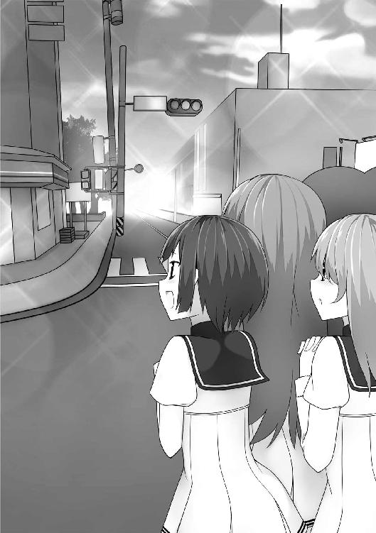
けど―――愛佳は、そこまで衝撃を受けていないみたいだった。
「あんま驚かないんだな」
「え？」
そのあと、愛佳が――よくわからない間を置いた。
「......こういうとこ、一回、歩いたことあるから」
見上げてくる視線が、妙に意味ありげだった。
「へぇ。そうなのか」
「は？」
「え？」
見合ったとき、
「お二人とも、こちらへ来て下さい。そこに立っていると危険なので」
九条さんが呼んできた。
そのとき、ざわざわとお嬢様たちがざわめく。
電車のオブジェの中から、金髪の白人女性が出てきたのだ。
動きやすい格好で、細長いスーツケースをがらがらと引いている。
「ストリートパフォーマーを手配しました」
「ストリートパフォーマー......？」
そういうのは、もっと大きい町じゃないといないと思うけど......まあ、それくらいのズレは許容範囲か。
女性は、広場の真ん中でケースを置いた。
取り囲むお嬢様たちは「何が起こるのでしょう」と目を輝かせている。
「でも、危険ってどういう意味――」
ケースから、でっかい弓矢を取り出した。
ギュイィィ――――ッ!! 弦を力いっぱい引く。
その先には、いつのまにか設置されていた台と、林檎。
矢が放たれた。
トスッ！
矢は林檎の中心を貫き、林檎ごと飛んでいって、さっきまで俺たちが立っていた後ろの看板に突き刺さる。
グチャアッ!!
林檎が粉々に砕けた。
「――って、こんな危険なパフォーマンス絶対やんねーよ!!」
「ご安心下さい、彼女はマックユーザーです。他意はありません」
「林檎を砕いたことへの危惧じゃねーよ!!」
お嬢様たちは、無邪気に拍手喝采していた。
「では、つかみも済んだので、最初のアトラクションにご案内します」
九条さんが引率する。
......早くも、嫌な予感しかしなくなった。
俺のアドバイスを、それなりに聞いてくれたらしい。
最初の『アトラクション』は、マック（ＭＡＸバーガー）だった。
「こちらは庶民に最も人気のあるレストランです」
レストランて。
店の中のデザインは、そっくりそのまま再現されていた。
やたら広くて、カウンターに選手村のマックかと言いたくなるくらいの人数が配置されてることを除けばだが。
「まぁぁ！ まぁぁ！」
お嬢様たちが、歓声とともに店内を見回す。
愛佳も麗子も、目をいっぱいに開いてカウンターやテーブルを見ていた。
そして、さっそくテーブルに向かおうとした。
「お待ち下さい」
九条さんが、ファーストフードのルールを説明する。
「この店では、先にあちらのカウンターで注文をするのです」
「......あちらで？」
「はい。カウンターにメニューがございますので、それを見て店員にオーダーして下さい」
「承知しましたわ。それからテーブルにつけばよろしいのですわね？」
「いえ。その場でお待ち頂きます」
お嬢様たちから、ざわめきが洩れ始める。
「......お、お料理ができるまで？ もしや立ったまま......？」
「はい」
「何十分も立ったまま......？」
「庶民は、食事をするのも大変なのですわね......」
うしろで、お嬢様たちが囁き合う。
「な、なぜですの？」
「この店では、できあがった料理を自分でテーブルまで運ぶからです。この習慣を『セルフサービス』と呼びます」
「――っ」
お嬢様たちの間に、衝撃が走った。
「......せるふ・さーびす......」
「自分で運ぶ......」
茫然とつぶやき――
「「「「「なんて立派ですの！」」」」」
いっせいに感嘆した。
「自立していらっしゃる！」
「きっと厳しい教えがあるのですわ！」
「わたくし、いかに甘えて育ってきたかを痛感いたしました......」
勝手に解釈をエスカレートさせ、
「やはり庶民はすごいですわ......!!」
きらきらと尊敬の目差しを俺に向けてくる。
「そういうことでしたら、一時間でも二時間でも、待たせて頂きますわ！」
「ええ！ 喜んで待ちますわ！」
「いえ、それほど待って頂く必要はございません」
九条さんは、あくまで恭しい態度で言う。
「このレストランは『ファーストフード』と呼ばれ、迅速さを旨としております。注文してから、通常一分程度でできあがります」
「......一分......？」
お嬢様たちに再び衝撃が走る。
「「「「「一分!?」」」」」
二度言った。
「どうやったらそんなに早く作れますの!?」
「わたくし、想像がつきませんわ！」
「庶民っていったい何者ですの!?」
「それは、庶民ですわ」
「そうでしたわ！」
九条さんがカウンターを指し示す。
「では改めて、注文をどうぞ」
とたん、みんなに緊張が漂う。
俺は愛佳に目配せした。
――行け！ ここだ！
マックのことは教えただろ？ 習った範囲がばっちり出てきたんだ。カウンターに行って、颯爽と『テリヤキバーガーセット。ドリンクはコーラ零』と言うんだ！
だが――愛佳は動かない。
俺の視線を、気まずそうに受け流す。
――なにビビってんだよ！ 行け!!
腕を小突いて急かすが、愛佳は目をそらして知らんふり。
こいつ―――超ヘタレ。
麗子もこっちを気にしてるみたいだけど、膠着した状態に耐えられなかったらしく、
「わ、わたくしが参りますわ！」
手を挙げた。
「さすが麗子さまですわ！」
「がんばって下さいまし！」
みんなの視線を一心に浴びながら、麗子が緊張の足取りでカウンターに向かう。
「いらっしゃいませ。こちらでお召し上がりですか？」
「え？ ええと......」
麗子はきょろきょろと視線をさまよわせ、
「こ、こちらではなくテーブルで頂きますわっ！」
「......有栖川さま、恐れながら」
九条さんが頭を垂れながら、
「これは店内で召し上がるか、包んでお持ち帰りになるかという問いでございます」
九条さんは、その態度の半分でも俺に適用してくれないだろうか。
「なるほど、お茶会のお土産にするのですわね？」
「ピクニックのお弁当になさるのでしょうね」
「素敵ですわ」
たいていは家に持って帰って、独りでもそもそ食うんだけどな。
「ご注文をどうぞ」
店員（雰囲気的に、清華院の関係者だろう）がさりげなくメニューを示す。
麗子はメニューを見下ろし――
石化した。
そりゃわかんないよな。俺らだって、あのメニューは迷うときあるもん。独特のプレッシャーあるし。
店員は、視線をそらして待つという忠実な再現をしている。ますますプレッシャーがかかる。
麗子は額からだらだら汗を垂らす。
「麗子さま、しっかり！」
「マリアさまが見てますわ！」
――ほら、ここ！ 最高のタイミングだろ!?
また愛佳をつついたが――こいつも石になっている。
だめだ。
麗子を見てられず、俺は自分で動いた。
「一番人気なのは、この『テリヤキバーガー』のセットだよ」
「！ 公人さま......」
「あとは、この『デカマック』が代表的だけど、ちょっと量が多いかもしれない」
「で、では、テリヤキバーガーのセットを頂きますわ」
「かしこまりました。ドリンクは何になさいますか？」
麗子が、俺を見てくる。
「このブレンド茶でいいんじゃないかな」
一番合うのはコーラだと思うけど、清華院のお嬢様は好まない。
「では、それにいたしますわ」
「かしこまりました。カウンターの横にずれてお待ち下さい」
オーダーが完了した。
「あ、ありがとう存じます公人さま......」
麗子が、なんだかうっとりしたようなまなざしを向けてくる。
「さすが公人さまですわ！」
「頼もしくていらっしゃる！」
そんな大げさな賞賛をお嬢様たちは心の底から言ってくるので、くすぐったくてどうしていいかわからなくなる。いつものことだ。
それからみんな、わっとカウンターに並んで、注文をしていった。
店員は、俺がかつて目撃したことのない速度でオーダーを捌いていき、七〇近いセットメニューを、五分ちょっとで完遂させた。
クルーの全国大会に出てる人ばっかり集めたら、こんな感じになるのかもしれない。
みんなテーブルについて、華やかにはしゃいでいる。
「まあまあ！ なんて楽しい見目でしょう！」
トレイに置かれた紙コップ、バーガーの包み、剥き出しのポテトという見た目が、お嬢様たちにとってはものすごく新鮮らしい。
考えてみりゃ、たしかにファーストフード以外ではお目にかかれない盛りつけ（？）なんだよな。
「では、いただきましょう」
みんなを代表して、麗子が言う。
向こうのクラスにも委員長がいるはずだったが、麗子は実質、学年代表のポジションにいるみたいだった。改めてすごい。
「「「「「いただきます」」」」」
そして全員が――――俺に注目してくる。
お手本を。目がそう言っていた。
こういうときこそ愛佳が、と思うのだが、あいつは窓際カウンター席の一番隅っこに座り、俺たちから背を向けていた。
お前、なんでその席、そんな似合うの？ 生まれる前から座っていたかのようにぴったり。
俺は周りのプレッシャーに耐えられず、ハンバーガーを手に取った。
包み紙を解いて、みんなが「じぃーっ」とみつめてくるのを確認して――はむっ、と食べた。
......う、うまいッッ!!
なんだこの肉は!? 一口噛んだ瞬間、肉汁がほとばしってくる！ この脂の上品な香り！ 甘み！ 霜降りのような極端な脂っこさでなく、しっかりと肉本来の旨み、香りが残っていて、ああこれがまさしく「牛肉」というものだったのかと俺は知った！ 今まで食べてきたひき肉はゴムだ！ ゴム屑だったんだ!! そして肉をしっかりと挟んだパン！ 甘くやわらかな香りと極上の歯ざわり！ まさしく小麦の極地！ ふかふかの黄金畑！ 太陽！ 大地のような包容力で肉をやさしく抱きしめ、その存在感に負けることなく、互いを高め合っている!! さらにピクルスとケチャップの計算され尽くした酸味！ 分量！ 野菜の風味！ 主役たちを支えつつ、すべてをつなぎ、調和させ、完成された一つの《世界》に昇華させている！ ああ！ 口に広がる天上の音楽！ ピタゴラス！ ピタゴラス!!
「って、こんなのマックじゃねえええええええええええええええええええええええええええええええええええええええええええええ――――ッ!!」
「き、公人さまっ!?」
「どうされましたの!?」
「たしかにこれはすげーうめぇけど、チーズバーガーのシンプルでバランス最強の味とか、デカマックのこれでしか食えない独特の充実感とか、何よりマックでしか補給できない何かがあるんだよ！ だいたいこのバーガー、いくら取る気だ!? 一二〇円で売れんのか!? 一〇〇〇円でも赤字だろ!! ＭＡＸバーガー馬鹿にすんな!! 作った奴、表へ出ろ!!」
「き、公人さまがお怒りですわ！」
「理由はよくわかりませんけれど、とてもお怒りのご様子ですわ......っ！」
食べ終わった後の容器を、ゴミ箱に捨てる。
「庶民の方は、本当になんでも自分でなさるのですわね」
分別してゴミを捨てる、ということを、お嬢様たちはとても楽しそうにやっていた。
「次はわたくしの番ですわ」
「紅子さま、がんばって！」
「わたくし、人間的に成長できた気がいたしますわ！」
「わたくしも！」
庶民ランドの遠足は、これ以上なく順調だった。
あとは、愛佳のヘタレをなんとかしないとな。
次のアトラクションは、ゲーセンだった。
広いフロアに、女子でも入りやすい感じの明るいスペースが作られていた。
ＵＨＯキャッチャー、プリ倶楽、ビデオゲーム、ｅｔｃ......
「「「「「........................」」」」」
見たことのない各種ゲーム機を前に、お嬢様たちは目を丸くして立ちつくしていた。
別の星にでもやってきたかのような反応。
マックもゲーセンも、俺にとっては珍しくもなんともないものだ。そういうものに、一般人が本来会うこともできない最上ランクのお嬢様たちが圧倒されているのはとても不思議で、なんとなく愉快だった。
「.........公人さま」
麗子が、瞳をうるうるさせながら、
「わたくし、この遠足に参加できたこと、心から幸せに思いますわ......！」
「そ、そりゃよかった」
フロアに待機してたスタッフたちが俺たちを案内し、遊び方を説明していく。
最初は怖さと興味が半々という感じだったお嬢様たちも、ちょっと遊んだとたん、瞳を輝かせる。
フロアは、あっというまに大盛況になった。
一番人気は、ダントツでＵＨＯキャッチャー。
プライズのゆるキャラぬいぐるみが、可愛い＆知らない庶民文化で、お嬢様たちのハートを掴んだ。
「取れましたわっ！」
麗子が、さすがの能力の高さであっさりとぬいぐるみをゲットし、拍手されていた。
逆に、ビデオゲームコーナーは空っぽで......
俺と愛佳だけが、ぽつんとそこにいる。
――失敗った......。
このゲーセンも、俺のアドバイスによるものだった。
けど、愛佳が強みを発揮できるのは、普段からある程度やっているビデオゲームの類だ。メインの格ゲーなんかも、まぁまぁやれるようになっている（ＥＸ技が出せるようになったよ！ という程度の腕）。
「まあ、落ち着けばこっちにも来るだろう、気長に待とうぜ」
「............」
愛佳は、筐体の丸イスに座りながら無言。いじけた子供みたいになっている。
やれやれ。
再びＵＨＯキャッチャーの方に目を向けると――ひどく困っている感じのグループがいた。
ずっとぬいぐるみを取れずにいるようだ。
スタッフの手も回っていない。一〇人くらい用意されていたけど、さすがに全部のフォローは無理みたいだ。
――あ、また失敗した......。
しゅんとなっているお嬢様たちを、せつない気持ちで眺めていると――
「......行ってきなさいよ」
愛佳が、目をそらしたまま言う。
「こっちは大丈夫だから、早く行きなさい」
......この間の『庶民パーティー』の件といい、なんだかんだで譲るたちだよな。
「お前も来いよ」
「......いい」
「そっか。じゃ、すぐ戻ってくっから」
「あっ、公人さま......！」
「よかったら、やり方教えようか？」
みんなの顔がぱっと明るくなる。
「ぜひお願いいたしますわ！」
俺は、台の前に立った。
取り囲む、期待に満ちたまなざし。......ちょっとやりにくい。
お金は入れなくてもできるようになっている。
スタートボタンを押すと、メロディーが流れだした。
俺もＵＨＯキャッチャーはあんまりやらないけど、どれも取りやすい置き方をしてるのは感覚的にわかったし、引っかける部分も大きく作られてる。超簡単そうだ。
「じゃあ、あそこのやつ取るから見ててね？」
「はい！」
俺は移動のさせ方とか、どのへんに合わせればいいかの手本を示して―――取った。
下の取り出し口から、ぬいぐるみが出てきた。
「はい、これ」
「......下さるのですか？」
「もちろん」
とたん、頬をじわっと赤らめ、ぬいぐるみを抱きしめる。
「あ、ありがとう存じます！ わたくし、一生大事にしますわ！」
そこまで感激されると、逆にどうしていいかわからなくなる。
「じ、じゃあ、今みたいにやってみて？」
わきにいた、別の子に言う。
「はいっ！ ......で、では、まいりますっ」
ボタンを押し、クレーンを横に動かし始めた。
「あ、そこ！ ボタン放して！」
「えっ？ ......あっ、あっ......」
ガクンッ！
クレーンが、一番端っこまで行ってしまった。
「ど、どうしましょう......？」
「大丈夫、あそこのやつが狙える。縦のボタンを押して」
俺はお嬢様の手を取り、ボタンに乗せた。
「......あっ......」
感覚を体で覚えてもらうため、手のひらを上に重ねる。
「いくよ」
「......は、はい。―――あっ」
押し込んだとたん、お嬢様の体が、ぶるっと震えた。
「き、公人さま......」
「ほら、よく見て？ ゆっくり奥に進んでくよ」
「......あ、あぁぁ......」
一番深くまで沈めたまま、体の動きを止めている。
「どう？」
「は、はい......」
耳まで真っ赤にしながら、
「............お、大きくて、たくましいですわ............」
「そろそろだよ」
「！ あっ、まだ......っ」
「いや、限界だ」
「そんなっ、わたくしもっと.........ああっ！」
俺は手を離し、クレーンを止めた。
ピロピロピロ......♪ とクレーンが下りていき、ぬいぐるみをキャッチ。
「はい、取れたよ」
「.........あ、ありがとう存じます」
潤んだ、熱っぽいまなざしで見上げてくる。
ぬいぐるみ、よっぽどうれしかったんだな。
「じゃあ、もう大丈夫だよね？ やってみて」
「......は、はいっ」
最後の一人は、なぜか頬を赤らめつつ、クレーンを横に動かし始めた。
「ほら、そこ！ 止めて！」
「............」
「何してんの早く！ ちょっ......」
ガクンッ！
クレーンが、一番端っこまで行ってしまった。
一切迷いのない選択に見えたのは、気のせいだろうか。
「......き、公人さま」
何かを求めるような表情で振り返ってきた。
「どうしましょう......？」
......結局、さっきと同じように手を重ねてボタン操作の感覚を伝え、ぬいぐるみを取った。
――よし。これで全員分取ったな。
「じゃあ、俺はこれで―――って、ええっ!?」
「公人さま、わたくしにもご指導下さいませ！」
いつのまに、大行列ができていた。
「ぜひ、わたくしにも！」
「ボタンの感覚がつかめませんの！」
やたら熱心に頼んでくる。
「......え、えーと......」
そのとき、一方向からチリチリと焦げつくような視線を感じた。
見ると――ビデオコーナーにいる愛佳が、超不機嫌そうなまなざしで睨んでいた。
俺の目線に気づくと、はっと赤くなって立ち上がり「フン！」という感じで奥に消えていった。
なんだよ？
それから俺は、行列を作ったお嬢様一人一人に指導していった。
なぜか全員が、クレーンを一番端っこまで持っていくというミスをした。
ガクンッ！
麗子が、クレーンを一番端っこまで持っていった。
「公人さま、ぜひ手ほどきをお願いしますわ」
「さっき簡単に取ってなかったかな!?」
「......ふぅ」
なんとか全員のぬいぐるみを取り、トイレで一息ついた。
それからビデオゲームコーナーに戻ったが、愛佳はいなくなったままだ。
――こりゃ、ここもダメかな......。
溜め息とともに、筐体の丸イスに座る。
画面には、見慣れた格ゲーのロゴ。『ストロングファイター４』通称『スト４』だ。
そのデモ画面をぼんやり眺める。――と。
......あれ？ なんかコレ、おかしいぞ......？
「公人さま、何をされておいででしょう？」
クラスの子たちが、わいわいと集まってくる。
俺の行く先々に寄ってきて、なんというか、清華院での俺は本当に人気者なんだなと実感させられるのだった。
「まぁ、なんですのこれ？」
「これは格闘ゲームっていって、このボタンを操作して相手と戦うゲームだよ」
「た、戦うんですの？」
「あくまでゲームだよ。将棋とかチェスみたいなもん、かな」
「なるほど......」
お嬢様たちが、わいわいとデモ画面をみつめる。
「あっ、向かい合ってますわ！」
「これから戦うのでしょうか？」
興味とおっかなさが半々という感じだ。
「公人さまは、よくおやりになるんですの？」
「まあ、そこそこ。――じゃあ、ちょっとやってみようか？」
愛佳はもう、ダメだろうしな。
「ええ！ ぜひお願いしますわ！」
「みなさま！ 公人さまがこれをなさるんですって！」
「まぁ！」
ちょっ......。
あっというまに、ギャラリーが膨れ上がった。
そんな上手いわけじゃないのに......。すげぇプレッシャーだった。
キラキラ輝く瞳に囲まれつつ、俺は１ｐｌａｙボタンを押した。
ジングルが鳴り、キャラ選択画面になる。
そして俺は、異変に気づいた。
竜が竜子になってるうぅぅぅぅぅぅ――――っ!!
空手着のオッサン『竜』が、和服美人の『竜子』になっているのをはじめ、全キャラが女体化してるっぽかった。
「どうしましたの？」
「い、いや......」
画面では、竜子が扇子を手にゆらゆらと舞うデモンストレーションを披露している。
......な、なんだ？ ひょっとして、清華院向けの特別仕様なのか？ この遠足のためだけに？
俺はとりあえず、持ちキャラである竜......いや、竜子を選んだ。
アメリカのステージが選択される。竜のライバル『ケソ』だ。
シャキーン！ ジングルとともに、ＶＳ画面になる。
「ケソ子が赤いチュチュ着てバレリーナのポーズしてるうぅぅぅぅう――――っっ!!!」
「ど、どうしましたの公人さまっ？」
「何やってんだよカプコ――あ、いや......なんか俺が知ってるのとちょっと違っててさ......」
なんとか気を取り直して、ゲームに向き合う。
『Ｒｏｕｎｄ．１......Ｆｉｇｈｔ!!』
キャラが違う以外は一応、同じようだ。
「始まりですの？」
「がんばって公人さま！」
開始早々、ケソ子が仕掛けてきた。
ケソ子『パドシャ！』
左右の足をパタパタと内側に折りながら、ぴょーんっと横にジャンプした。
「......は？」
ドガアッ！
竜子『きゃああ――っ！』
「ええええ!? ダメージ受けた!?」
竜子『なんて軽やかなステップ!!』
カラスの仮面みたいな白目になって硬直している。
――な、なんだこれ？
思いつつ、とりあえず波動拳を出した。
竜子が扇子をくるっと回した。
「波動拳出ねえ！」
バシイッ！
ケソ子『あうっ!?』
「なんでダメージ与えてんの!?」
ケソ子『優雅な手つきに、つい見とれてしまいましたわっ！』
マヤ恐ろしい子......の状態になる。
「っていうか、扇子回しただけじゃん!?」
「公人さま、あれは『要返し』ですわ！」
お嬢様たちが言う。
「日舞の動作の一つです！」
「そ、そうなんだ......？」
ケソ子『パドシャ！』
ドガアッ！
竜子 『なんて軽やかなステップ!!』
竜子 （扇子をくるっと回す）
バシイッ！
ケソ子『優雅な手つきに、つい見とれてしまいましたわっ！』
竜子とケソ子は互いに近づくことなく、その場で優雅に舞い続ける。
よく見ると、ゲージは減っているのではなく逆に増えている。どうやらあれは『感動ゲージ』で、先に相手を満たしてうっとりさせた方が勝ちらしい。
「って、もはや格ゲーじゃねえええええええええええええええええええええええええええええええええええええええええええええええええええええええええええええ!!!!」
「どうしましたの公人さま!?」
「い、いや......なんでもないんだ」
どうでもいいけど、ケソ子のボイスが恵理だった。あの人気声優様はどこにでも出てくるな。
この仕事で清華院のことがバレたんじゃないかと不安がよぎったけど......まあ、大丈夫か。ここの情報セキュリティなら。
ケソ子『グランバットマン！』
ドガガガッ!!
竜子 『そこまで脚が上がるなんてッ!?』
「大技が出ましたわ!!」
「わたくし、あれがどうしても苦手で......！」
よくわからないが、お嬢様たちがエキサイトしている。
「き、公人さま！ こちらも応戦をっ！」
俺は『波動拳→旋風脚→昇竜拳』と連続で入力した。
竜子は、扇子をくるっと回し、斜めにすり足で進み、扇子をひらひらと二回上下させた。
「『要返し』『オクリ』と続いて、『雪』！」
「お見事ですわ公人さまっ!!」
何を褒められてるのか、ぜんぜんわからない。
そのとき、ケソ子の頭上に、カッ！ とスポットライトが当たった。
派手なエフェクトと音楽が流れ始める。
まさか――ＥＸ技か？
「『瀕死の白鳥』ですわ!!」
「ああっ！ これはまずいですわ......っ！」
お嬢様たちが青ざめる。
暗い画面の中、ケソ子が膝をつき、両手をひらひらと震えさせ、ゆっくりと――動かなくなった。
ドガガガガガガガガアアア――――――――――――――――――――ッ！！！！！
竜子『なんて豊かな表現！ 死んでいく白鳥の姿が、ケソ子さまに重なって視えましたわああああああ―――っ!!』
竜子が号泣し、感動ゲージを一気に満たす。
が、ぎりぎりで持ちこたえた。
俺の方もＥＸゲージが溜まっていたので、すぐさまコマンド入力した。
とたん、扇子が和傘に変わり、竜子が唄に合わせて踊りだす。
「『鷺娘』ですわ!!」
「『瀕死の白鳥』の影響を受けて結末部を変えた経緯を持つこの長唄で、意趣返しということですわね!? なんて粋ですの公人さま!!」
お嬢様たちが大興奮だった。
「たおやかな『クドキ』、鮮烈な『傘づくし』、ぶっかえりからの儚い『セメ』......！」
言ってる内容が全然わかんねえ......！
ケソ子『......参りましたわ！』
勝った。
「さすが公人さまですわ！」
「心憎い駆け引き！ その機微にわたくし感服いたしました!!」
「いや......はは」
で、すっかり乗り気になったお嬢様たちが対戦を始めた。
初めて触るボタンやレバーをたどたどしく動かしていたが、けっこう楽しんでるようだった。
「葵さま！ がんばって！」
「浅黄さま！ しっかり！」
対戦台の手前と奥に分かれて、応援合戦が繰り広げられている。
葵さんと浅黄さんは、小パンチ的な細かい技で小競り合いをしていたが――
ケソ子『パドシャ！』
葵さんが必殺技を出せるようになり、状況が一変した。
初めて同士の対戦で起こる「先に波動拳を使えるようになった奴が圧倒的優勢に立つ」の法則だ。
「浅黄さま！ こちらも技を！」
向こう側の浅黄さんもなんとか反撃をしようとするが、
ケソ子『パドシャ！ パド――グランバットマン！』
葵さんが、技を出す途中で偶然別の技がジャストのタイミングで出るというモードに入った。こうなると、初心者にはほぼ為す術がない。
浅黄さんが「ふぇぇ」と半泣きでレバーをがちゃがちゃやるが、もはや展開は一方的だ。
ヨガシ美（インド人ファイター・ヨガシムの女体版。アーリア系インド人と日本人のハーフで、華道家）は感動しっぱなしで、アヘ顔みたいになっていた。
このまま決まるかと思ったとき――
「何やってんの！ ガードよ!!」
愛佳が、浅黄さんのレバーを動かす。
ヨガシ美が目を閉じ、ケソ子の技をガードした。
「こっちも技出して！ 反撃するわよ！」
「え？ え......？」
愛佳の乱入に、浅黄さんは目を白黒させている。
「ほら、あたしの操作見てて！」
浅黄さんの背後から腕を伸ばして、レバーとボタンを押さえる。
「レバーを左からぐるっと半回転させて、パンチ！」
ヨガシ美『縦そえ木！』
バシイィッ!!
ケソ子 『なんて絶妙な角度ですの!?』
「わかった？」
「え、ええと......」
「じゃ、あたしがレバーやるから、浅黄さんは『はい』って言ったらパンチボタン押してね？ いい？ いくわよ！」
「は、はいっ」
「ぐるっと回して――はいっ！」
浅黄さんがボタンを押す。
ヨガシ美『縦そえ木！』
「！ で、出ましたわ！」
「もう一回、行くわよ！」
突然の愛佳の登場に、まわりのお嬢様たちはぽかんとなっている。
だが愛佳は「下手すぎて見てられなかったプレー」のサポートに夢中になっていて、自分の状況にはまったく気づいていない。
そして愛佳の加勢により、ヨガシ美は一気に逆転。生け花のＥＸ技『天・地・人』を出し、劇的勝利した。
「やったわねっ！」
愛佳が、浅黄さんの肩をばしばし叩く。
「でも、初めてでヨガシムはないわよ。このキャラ癖が強くて、めっちゃ使いにくいんだから。やっぱ竜かな。使いやすいし、最強だし。でもちょっと面白みがないけどねぇー。そのへん考えると、あたしのオススメは............、」
愛佳が、ハッとなる。
やっと自分の置かれている状況に気づいたらしい。
まわりから注がれる、驚きのまなざし。
浅黄さんの肩に腕を回し、気さくにゲームの知識全開でトークしていた自分。
見ていられなくてプレイに割り込み、操作方法を教え「やったじゃない」と肩を叩いた自分。
「......あ、ありがとう存じます」
浅黄さんの声に、愛佳がぴくっと震える。
「愛佳さま、とても達者でいらっしゃいますのね」
浅黄さんが、にこ、と微笑みかける。
「........................」
愛佳が緊張のピークに達している。
まわりが息をのみ、愛佳の反応を伺っている。
――がんばれ!!
俺は、ぐっと拳を握りしめた。
ここが分岐点だぞ！ めったにない、はっきり自覚できる運命のルート選択肢だぞ!!
愛佳が一瞬、俺を見た。
俺は目で、うなずいた。
そして。
「............ま、まあね」
愛佳が、少しぎこちないながらも、愛想のいい調子で答えた。
――よし！
まわりのお嬢様たちに、ぱあっと安堵が広がっていく。
「愛佳さま、わたくしにも教えて下さいませっ」
「ぜひ、わたくしにも！」
積極的に近づいていく。
ここにいるのは、清華院の教育がいきとどいた心清らかなお嬢様たち。
わだかまりなんかすぐに溶かして、みんな仲良くしたいのだ。
愛佳は瞳を伏せ、頬を赤らめ、唇をもごもごさせたあと、さっと顔を上げ。
言った。
「い、いいわよっ！」
やったな!!
スターバッカスのカウンターにて――
「グランデアドショットヘーゼルナッツバニラアーモンドキャラメルエキストラホイップキャラメルソースモカソースランバチップチョコレートクリームフラペチーノぉう！」
愛佳がドヤ顔でオーダーした。
「す......すごいですわ愛佳さま！」
「自信に満ちあふれたお姿が、とても頼もしいですわ！」
ドヤ顔も、お嬢様にかかればここまで好意的に解釈されてしまうのかと、俺は軽くビビった。
「えへへ。そうかなぁ」
愛佳は照れ笑いして、無い胸を帆のように張った。
「まあ、だいたいこんなふうに注文するのよ！」
「庶民の方はコーヒーを頼むのに、あのように複雑な呪文を用いるのですわね......」
「過酷ですわ......わたくしたちにできるでしょうか？」
「ああ、安心して？ 今のは上級者向けのやつだから！ 普通にラテのホットかアイスで大丈夫よ」
「よかった......ラテがありますのね」
「お紅茶はありますの？」
「あるけど、ここはあくまでコーヒーメインの店だから、あんまりオススメはしないわ。あと、ドリンクのサイズっていうのがあって......」
というわけで、自由行動になったあと、スタバに来ていた。
最初の壁を破った愛佳は、その勢いのまま特訓の成果をいかんなく発揮し、順調にコミュニケーションを重ねていた。
出てきたドリンクを持って、テーブルに向かう。
俺と愛佳を入れて、六人グループ。さっきゲーセンで対戦した浅黄さんと葵さんもいる。
「じゃあ、テーブルくっつけるな？」
「あっ、わたくしがやりますわ！」
「わたくしも手伝います！」
お嬢様たちがあわてて動く。慣れないからスムーズじゃないけど――
「あたしもやる！」
愛佳も加わる。
なんかみんな、楽しそうにテーブルをくっつけていた。
みんな席について、お嬢様たちが不思議そうにある一点をみつめている。
紙コップの蓋だ。あのプラスチックの、四角く開いた飲み口。
「......このすき間は、なんでしょう......？」
そうだよな。お嬢様は知らないよな。
「あ、愛佳さま......これはなんですの？」
「蒸気口でしょうか？」
「え？ えーと......」
聞かれた愛佳は、おもいきりキョドる。さすがにここまでは教えられてなかった。だから知らないはずなのだが――
「もしかして、ここから飲むんですの？」
「そうよ！」
無駄な見栄を張った。どう見てもそれしかないから、嘘をついてるわけじゃないが。
「まあ、貸してみてよ？ あたしが手本見せるから」
愛佳がベテラン顔でカップを傾ける。だから俺はつい――
「ちなみにこの蓋は、どんな熱々の飲み物でもまったく熱さを感じることなく一気に飲めるという、庶民の大発明なんだ」
「ええっ!?」
「あれ？ まさか知らないわけじゃないよな？」
「!? も、もちろん知ってるわよ！ この蓋は、どんな熱いものでもグイグイいけちゃう便利アイテムなの！」
「まあっ、すごいですわ！」
「魔法のよう！」
「みんな、たかが庶民をほめすぎだって？」
「じゃあ愛佳、飲んでみろ」
「うん！ 一気に行くわ!!」
「あっバカ――」
「じゃあいただきます――ぅわ熱っちゃああああああああああああああああああああ――――――――っ!!」
バチ――ン！
ビンタ頂きました！
そんなことがありつつ、会話が盛り上がっていた。
「もー、古文の小テスト散々でさぁ」
「あれはたしかに難しかったですわ」
よく考えるまでもなく、同じクラスであり、清華院という場所で日々の生活を共にしている。共通の話題には事欠かない。
それで女子が五人もいれば、会話が回らないわけがない。
もともと、愛佳が過剰にビビっていただけなんだ。
「ぎゃはは！」
しかし、このまま放っておくと、うっかりツンピュアの負の側面が出てしまう怖れもある。ほどよいとこで切り上げなければ。
「......えーと」
俺が声を出したとたん、みんなの視線が集まる。
「みんな、ケータイ使ってる？」
「はい、ときどき」
言って、ミニバックから取り出す。
「でも、みなさんとは毎日会えますし、本当にときどきですわ。ねぇ？」
「ええ」
やっぱり、習慣として身についてない感じだ。たまに使う道具。そんな距離感。九条さんは「理想の着地点」と言っていた。
「じゃあ、メールもあんまりしないんだ？」
「ええ。他のクラスのみなさんにも伏せなければいけませんし。眠る前にお部屋で少し、という具合ですわ」
「愛佳は？」
「は？」
俺に振られた愛佳は「なんでそんなこと聞くの」とイラッとした目をした。
まあ、そんな顔すんなって。
「......しないに決まってるでしょ」
「でしたらぜひ、わたくしと！」
「そうですわ！ メールいたしましょう！」
「......へっ？」
――よし。
だてに『セバスチャン』なんてあだ名付けられてない。話題のコントロールも、人の世話のうちだ。
「えっ、あっ」
愛佳はキョドったあと、気づいたふうに俺を見てくる。
俺は、うなずいた。
「......う、うん！」
メアド交換タイムとなった。
「え、ええと、送り、ますわよ？」
「う、うん！ ――あっ、来たっ！」
愛佳が、うれしそうにほころんだ。
メアド交換の瞬間って、いいよな。
友達ができてく感じでさ。俺は好きだ。
こうして愛佳は、クラスメイトとメアド交換を果たした。
よし、目標達成！
そういえば麗子もずっと店内にいるけど、別のグループと離れたテーブルにいた。
たまにちらちら愛佳を見てるけど、近づいてはこない。
距離を置いてるのは、邪魔しないようにだろう。人気者が割り込むと、場が乱れるからな。
気を遣ってくれてるんだと思う。さすがだ。
ブーッ、ブーッ......
ケータイのバイブが、嬉しい。
愛佳はホテルのベッドに寝転びながら、届いたメールをにやぁ～っとした目で読む。
そしてすぐ、返事を打つ。
ホテルでの就寝前、愛佳はさっそくメールのやりとりをしていた。
備えつけのテーブルでは、麗子が寝巻き姿で日誌を書いている。
結局、委員長の麗子が、ぼっちである愛佳のペアに収まったのだった。
日誌を書き終えた麗子が、ちらりと愛佳を見る。
「ねえ、愛佳さま」
「何？」
メールを打ちながら聞き返す。
「............」
「何よ？」
振り向くと、麗子は遠慮してるような面白くないような、何か言いたいような顔をしていた。
「あの――」
「あ、ごめん、メール来た」
素早く画面に目を戻す。
「......そっかぁ♪」
読んで、にや～っとする。
「返事打たないと。でも、浅黄さんの返事打ってる途中だったな。そっちから先にやんないと。あたし忙しいなぁ。大変だなぁ」
春を謳歌する表情で「うぅ～♪」と足をパタパタさせる。
メール送信。
「よしと。――で、何？」
「............」
麗子は目をそらしながら、
「メール、楽しそうですわね」
「まあねぇ～☆」
険のある響きにも気づかず、にぱぁ～っと顔を輝かせる。
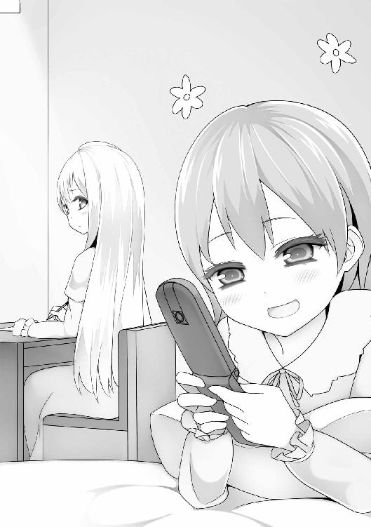
「今回、あんたには迷惑かけちゃったわね」
「えっ？」
「部屋のペアになってもらってさ」
「いえ、そんな――」
「でもそれも、今回限りだから！」
愛佳が、がばっと起き上がる。
「だってあたしもう、友達できるし！」
ベッドの上に座りながら、太陽みたいな笑顔で。
「嫌いな者同士がペアなんて、おかしいもんね!? せいせいするわね、お互い！」
「そ......そうですわね!? わたくし、あなたのことが大嫌いですものっ！」
「え、なに怒ってんの？」
「怒ってなどいませんわ！」
それから、互いに沈黙の時間が続いた。
「ねえ、有栖川麗子」
「......なんですの」
「ちょっと、これ読んでみて」
「はい？」
「今からみんなに送るメールなんだけど、これでいいかチェックしてよ」
「......そんなの、公人さまにお願いすればよいではありませんの」
「だから、なんでさっきから不機嫌なの？」
「そ、そんなことありませんわよ！」
「これはどうしても――あんたに見てほしいのよ」
「え？」
愛佳は、真剣な表情で話す。
「これ、すごく大事なメールなのよ。あたしがなんで今まで、みんなと接触を避けてきたかっていう理由をね、書いてんの」
そう。これがメアド交換から続く最終目標。
クラスのみんなと打ち解けるための、最後の壁。
「......それを、どうしてわたくしに？」
「あんた、クラスの人気者じゃん。くやしいけど、伊達じゃないっていうか」
愛佳は――
「みんなの気持ちとか、こうしたらいいっていうの、ほんとよくわかってると思う。ちょっとした言い回しとか、まとめる力とか、たまにすごいって思う」
自分でも気づかないうち、これまで話したことのなかった麗子に対する評価を、正直に打ち明けていた。
「............」
麗子が神妙な面持ちでこわばり、瞠った目がじわ、と揺れた。
「だから、あんたにチェックしてほしいの。読んでみてよ」
ケータイを差し出す。
「あたしのこと嫌いかもしれないけど、あんたにしか頼めないのよ。お願い！」
「.........わかりましたわ」
「！ ほんとっ？ やった！」
麗子はケータイを受け取り、文面に目を通す。
まず長い謝罪文に始まり、次に小学生の頃初めて先生に『正直なのはけっこうですが、時と場合にもよりますよ』とやんわり注意されたこと、そしてその後起こった、愛佳が今でも後悔しているエピソード群が原稿用紙一〇枚分の掌編くらいの長さに渡って詳細に――
「―――って、長いですわよっ!!」
麗子のシャウトに、愛佳がびくっとなる。
「な、長い......？」
「長いですわよ！ 長すぎですわよ！ というかむしろ、さっきの短時間でよくこんなにたくさん書けましたわね!?」
「文章書くのは、わりと慣れてるんだ」
『会話ドリル』という、みんなとの会話を妄想したノートの第八巻を執筆中である。ちなみに最新作は【雨の中、傷ついた小鳥を抱きしめているあたしを、クラスメイトが偶然見かける】という設定で書かれていた。
「褒めてませんわ！」
「えっ」
「読んでいて、いつまでたっても本題がはっきりしてこないし、最初の謝罪文は不要に長いし、もうなんというか、全体的にあれですわ！ 公人さま風の言い方をすれば『重い』ですわ！」
「そ......そうかなぁ」
素直に聞く姿勢でありつつ、ちらっと「納得いかない部分がある」というニュアンスを示す新人作家みたいな目をする。
「そうですわよ！ もっと簡潔に、さりげなく。たとえば、ここは......」
それから麗子は愛佳に対し、ここはいらないから削れとか、このくだりの意図は？ とか、読む相手のこと考えてますの？ といった、敏腕編集のごとき徹底指導をした。
「......こ......これで、どう......？」
リテイクの嵐でよれよれになった愛佳が、ケータイを渡す。
麗子はさっと目を通し、うなずいた。
「......ええ。これでよいと思いますわ」
『あのね。大事なこと話すね。
今までみんなを避けてきたのには、理由があるの。
あたしって、思ったこととか正直に言っちゃうところがあってね、
そのせいで友達を傷つけちゃったことがあるんだ。
そういうことがあってから、あたしは人と話すのを避けるようになったの。
同じことを繰り返したくないし、恐いから。
ほんとは、ずっとみんなと仲良くしたかったの。
今までごめんね。
これからどうか、仲良くしてね。
天空橋愛佳』
「......こんなに簡単でいいの？」
「充分ですわ。むしろまだ長いくらいです」
「え？」
「もはや、たくさんの言葉など不要なのです」
「......なんで？」
まだ不安そうな愛佳に向けて、麗子はやわらかく微笑む。
「だってもう、昼のうちにすっかり仲良くなったじゃありませんの」
「............」
そっか。
愛佳は、嬉しそうにつぶやく。
それから、メールの文面をみつめる。
「......うん。これでいいかも」
送信ボタンに親指をのせた。
「じゃ、送るね」
............。..................それきり、指が動かない。
土壇場でヘタれてる愛佳に、麗子はいらいらと焦れて、
「早くなさい！」
「!? う、うん。――えいっ」
どたばたと、雰囲気も何もなく送信した。
そんなものである。
「まったく......」
「ありがとう。麗子」
愛佳は、にっこり笑って礼を言う。
そのとき麗子は、愛佳が無意識に「麗子」と名前だけで自分を呼んだことに気づいた。
「おかげで、あたしもやっとクラスのみんなと仲良くできそう。いっぱい友達作るんだ！」
蜂蜜を薄くのばしたような、ランプの照明の中。
麗子は止まる時間にほんの一瞬、なにかの複雑さを揺らめかせ、それを空気に溶かしたあと......やさしく目を細める。
「よろしいと思いますわ」
ランプは静かに、温かく、灯っている。
朝。
メシを食うためホテルのレストランに入ると、人の輪ができていた。
それは――愛佳を中心にした輪だった。
「愛佳さま、帰ったらぜひ、お茶会をいたしましょう！」
「わたくしも加えて下さいませ！ よろしいですか、愛佳さまっ？」
「う、うんっ」
「わたくしも、ぜひ」
「では、ここにいるみなさんで」
愛佳を囲むたくさんの笑顔。花で作った冠みたいな輪。
昨夜のメールで報告を受けてたけど、あいつ――やったんだな。
「たしか愛佳さまは、部活には入ってらっしゃらなかったですわよね？」
「え？ えっと......」
「よろしければ、テニス部に入りませんか？ 今からでもまったく問題ありませんわ」
「歌唱部の方にも、ぜひ見学に！」
愛佳を中心にして、みんなが賑わっている。
かつて、考えられなかった光景。
いつも人の輪から外れて、隅っこにいた愛佳。
あいつがずっと夢見てきた光景が、そこにあった。
――やったじゃん。
見ててちょっと、じんとなった。
気づくと、俺の横に麗子が立っていた。
見ると、振り向いてきて、会釈のような笑みを浮かべた。
「やったな、あいつ」
「はい。何よりですわ」
ひと呼吸置いて、
「さっ。席に着きましょう、公人さま」
「ああ」
麗子と一緒にテーブルに向かいながら、輪の中にいる愛佳を見る。そして、思う。
あいつはもう、大丈夫だ。
朝メシを食ったあと、部屋に戻って着替えを取った。
これから、風呂に入る。
実は昨夜のうち、男である俺は大浴場の使用を禁止されていた。
部屋にも風呂はあったけど、やっぱせっかくだし、大浴場に浸かりたい。
というわけで、今までずっと我慢していたのだ。
エレベーターホールで、上りボタンを押す。
ポーン。すぐに来て、左向こうの扉が開く。
愛佳が降りてきた。
「！ えっ、なんであんたがいんの？」
「ここ、二階だし」
「えっ......？」
フロアランプを確認する。女子の部屋は三階から上だ。
着いたと間違えて降りてきたんだな。
「きみは実にバカだな」
「バカじゃないわよ！」
俺がボタンを押したせいだっていうのは、細かいことだ。
「乗らないのか？」
「............」
扉が閉まりだす。俺がとっさにボタンを押そうとしたとき――
「......待って」
扉が閉まり、エレベーターが上に行ってしまう。
愛佳が、無言で近づいてきた。
「......なんだよ？」
「............」
目を伏しがちにしたまま、愛佳は何も言わない。
だが俺は最近、愛佳のこういう気配にちょくちょく覚えがあった。
庶民部のときとか、短い時間ふたりきりになったときに、こういう悶々と、何かをくすぶらせている気配を出すようになった。
なんだ？ と聞いても、結局誰かが戻ってきたりで、わからないままだったんだが――
「......あんたに、聞きたいこと、ある」
「え？」
聞きたいことがあったのか。
「なんだよ？」
「............」
うつむいたまま、顔がじわじわ赤くなっていく。
エレベーターホールに、いま踏んでいる絨毯みたいな質感の静寂が降りた。
「............あんたさ、昔、あたしと会ったこと.........ない？」
「.........は？」
愛佳が、まっすぐに俺の目をみつめてきた。
冗談の雰囲気じゃ、ない。
何も言わない俺に対し、すぐに言葉を継いでくる。
「家がお金持ちとか、そういう人たちが集まるパーティーに出たことなかった？」
急かすように。
「一〇歳の時よ。初等科四年の、十二月。クリスマス」
求めるように。
「えっと、そのちょっと前よ。ホテルの会場で、あたしは一人でツリーを見てて、それで声かけてきて、一緒に..................外に......」
声が、どんどん小さくなっていく。
何も反応できない俺を見ながら。
「............」
俺は、記憶を遡る。
こいつの真剣さに応えて、ちゃんと思い出してみる。
......けどやっぱり、ホテルのパーティーなんて行ったことない。
小四どころか、今までの人生で一回もない。
うちは、ごく普通の家だ。
親父がサラリーマンで、お袋が専業主婦。今の時代、むしろ恵まれてる方かもしれないが、でも一般家庭だ。
なにせ、庶民サンプルに選ばれるくらいだ。
小四の時のクリスマスなんてろくに覚えてないけど、そんなパーティーに行ったんなら、覚えてないはずがない。
「ないな。パーティーなんて行ったことない」
「............」
愛佳は、愕然としているようだった。
「そ、そうだ！ 記憶喪失！ その頃のことだけ覚えてないとか、ないの!?」
「ない、と思う。そういう違和感とか、誰かに言われたとかは、ない」
愛佳が、みるみる......しおれていく。
「悪ぃ。人違いだと思う」
「..................そう」
よくわからないけど、たぶんこいつにとって大事なことが絡んでたんだろうな。
空気に耐えられないので、明るい方向に話題を振ることにした。
「それより、よかったな。みんなとうまくいって」
「へ？ ......あ―――うん」
効果てきめん。笑顔になった。
「勇気出してよかった」
ほんわりとした声で言う。
俺は、ほっとした。
「まあ、がんばったな」
「やってみたら超カンタンって感じ！」
「調子乗んな」
「えへへ。......でもまあ、あんたのおかげね」
そして愛佳は、屈託のない、はにかみを浮かべて。
「ありがと」
「おう」
終わった――。
そんな清々しさが、俺の胸に広がった。
「これで庶民部も終わりだな」
「......え？」
「だってそうだろ？ あれはお前が人気者になるために作った部なんだから」
「............」
「これからお前は、放課後もみんなとお茶会したり、ちゃんとした部活入ったりするんだから、もうお役ご免だ」
エレベーターのボタンを押す。すぐに、目の前の扉が開いた。
「ほら、乗ろうぜ？」
「......あ......うん」
愛佳は、なぜかぼんやりとした足取りでついてきた。
「あ～......気持ちいい」
露天風呂、最高。
山脈や平野が一望できる絶景だった。
ホテルの五階。まわりに人家が一切ないこともあり、メインの風呂は建物からせり出した完全屋外だった。
「久しぶりに風呂入ったって感じがするなあ......」
清華院では、俺の風呂に関して厳しい制限がある。
なぜなら、施設に女湯しかないから。
俺が自分から乗り込んでいってセルフ混浴することはできるが、そのあと俺は、外科的手法によって男性ではなくなってしまうだろう。
とにかくそんなわけで、よその風呂を借りてるみたいな寛げない状態が続いていたのであった。
濁り湯ってのが、またいいよな。
俺がお湯をすくったとき――
ガララッ。
バスタオルを巻いた愛佳が入ってきた。
「............」
「............」
同時に、
「うわあっ!?」
「きゃあっ!?」
背中を向ける。
「あっ、あんた、なんで!?」
「こっちのセリフだ！ 女子は昨日入っただろ!?」
「みんなと、もう一回入ろうって......」
「......みんな？」
そのとき、磨りガラスの向こうにぞろぞろ、あられもない姿をしたお嬢様たちが見えてきた。
引き戸が開く瞬間、俺はとっさに湯に潜る。
ガララッ。
「お待たせしてしまいました、愛佳さま」
「う、ううんっ」
「ああっ、やはり朝の眺めも格別ですわ」
「気持ちよいですわね」
「ではみなさま、入りましょう」
「ええ」
濁り湯越しに、ぼやんと声が聞こえてくる。そして――
ざぶ、ざぶ、ざぶん、と。
お嬢様たちが入ってきた。
お湯の中に、人の体が入ってどんどん増えていくのがわかる。お湯の揺れ。
不思議なことに、男じゃなく女子だってことが、密度というか、感触として伝わってきた。
......つーか......とっさに潜ったから息がそろそろ――――――――限界ッッ!!
「ぶはっ!!」
湯から顔を出した瞬間――
ぎゅむっ！
目の前に背中が現れ、岩の縁まで押し込んできた。
「ぶ、ぶはっ！」
愛佳が、わざとらしくかぶせる。
「あ、あーっ、気持ちよすぎ！」
「まあ、愛佳さまったら」
お嬢様たちが、くすくす笑う。
ほっ......愛佳のフォローで、バレずにすんだらしい。
俺は岩の縁にもたれかかり、リクライニングの効きすぎでずり落ちそうな姿勢でいる。
だから目線の高さに愛佳の背中があって、俺の頬に押しつけられていた。
しっとりとして、すべすべで、肉の薄いところなのに、男と違う女子のやわらかさがある。
お腹に当たるタオルを巻いた腰も同じで、何より.........俺の脚の付け根に、愛佳のお尻が乗っかってしまっていた。
濡れたタオル越しの、かなり生っぽい感触。小さいのに、ぞくぞくするほどやわらかい。俺の脚を挟んでくる太ももは、ふわふわとろとろの極上プリンみたいだった。
くそっ、このプリン体！ 愛佳のくせに！
「愛佳さま、顔がものすごく赤いですわよ？」
「えっ、だ、だって公人の――むぐっ!?」
俺はとっさに愛佳の口をふさいだ。
危ねえ！ このツンピュアさん、油断したらすぐ思ったことだだ洩れだよ!!
そして一瞬で、手を湯の中に引っ込める。
「あ、あら？ 今、愛佳さまの手が妙にたくましかったような......？」
「それに、出てくる角度がおかしかったような......？」
「あ、あはは......」
「......まあ、気のせいですわよね」
「湯煙の悪戯ですわ」
なんとか自己完結してくれたみたいだ。そりゃ、別の誰かが隠れてるなんて思わないよな。
「それで、公人さまがどうされましたの？」
「へっ？ な――なんでもな......いよ？」
苦しみながらも、なんとか嘘をつく愛佳。
「そういえば愛佳さまは、公人さまと、とても親しくされていますわね」
「え......そうかな？」
「うらやましいですわ」
「ええ、本当に」
そして、お嬢様たちが微妙に距離を詰めてくる。
空気の密度が、上がった。
「......愛佳さま」
声のトーンが、内緒話のそれになる。
「実のところ......お二人の関係は、いかがですの？」
「わ、わたくしも、ずっと気になってますわ！」
愛佳の背中が緊張したのが、肌に伝わった。
「ど.........どうもないわよ」
だよなぁ。
「でも、いつも一緒にいらっしゃいますわ」
「それは、そうだけど......」
そこで少し間が開いて、
「.........これからは、そうじゃなくなるかも、だし」
妙に大人しい調子で言う。
庶民部が終わることを言ってんだな。
たしかに、これから愛佳はみんなと過ごすんだし、接点は一気に減るだろう。
そのとき、俺の脚がピクッと痙攣した。
その揺れが、乗っかってる愛佳のお尻を突き上げる。
「――～～～ッ!?」
愛佳が、びくぅっ！ とのけ反る。
ガンッ！
背中でおもいっきり岩に押しつけられた。
しょうがねーだろ！ 生理現象なんだから！
「愛佳さま、どうされました？」
「うっ、ううんっ！」
――うわ、痛ってえ......。
ぶつけた頭を押さえようと、こっそり腕を上げようとしたとき――
「愛佳さま、本当に大丈夫ですの......？」
浅黄さんが、ざばざばと寄ってきて――
上げた手のひらが、ジャストのタイミングで浅黄さんのお尻を鷲づかみにした。
むにょお～んっ
とろける。
「きゃうっ!?」
浅黄さんが、ビクビクッ！ とのけ反る。
「あ――愛佳さま......っ？」
「へ？」
「わ、わたくしの.........お尻.........」
「？？ ―――あっ」
察した声を出す。
「お戯れが過ぎますわ......」
「ご、ごめんねぇー......あはは」
ドガンッ!!
また岩に押しつけられた。
なぜか、さっきよりはるかに威力が強かった。
――あ、ヤバ。
衝撃のせいか、のぼせたのか......
............頭が............クラクラ、してきた..............................
やっとクラスメイトたちが出ていき、愛佳はほっと息をつく。
公人に声をかけようと、振り返る。
「!? き、公人っ!!」
ぐったりとうなだれていた。鼻のあたりまで、お湯に浸かってしまっている。
「公人！ 公人っ!!」
揺さぶるが、意識がない。
――まさか、さっきのショックで............溺れた!?
あわてて湯から引っ張り出す。
床に寝かせたが、やはり反応がない。
――ど、どうしよう......っ!?
愛佳はじわ、と涙目になる。でも彼女は、この土壇場で意外な根性を見せ、
――あわててる場合じゃない！ 早くなんとかしないと!!
そう思った。そして――
"人工呼吸"よ!!
決断した。
さっそく行動に移る。やり方は保体の授業で習った。人形相手に実践したこともある（先生に褒められるくらい上手にできた）。
取りかかるまでのスピードが命と教わった。迷ってる暇はない。
公人のうなじを持ち上げ、気道確保。鼻をつまむ。
愛佳も習うまで知らなかったが、人工呼吸はキスではない。唇のまわりを覆うのであって、唇どうしの接触はない。
けれど――......
「......っ」
瞳を刹那、潤ませ――
はむっ。と、唇で唇を覆った。
フゥ――ッ。息を吹き込む。
離すとき、公人の唇と自分の唇が一瞬だけ、かすれた。
そのやわらかさに――愛佳の脳が、甘く痺れる。
意識がトロン......とふやけかけ、
――っ!!
ぎりぎりで踏みとどまった。
――い、いけない、いけない！ 何やってんの!?
早く次よ！
そう、これは人命救助なのだ。
なんかさっきから公人の胸が呼吸しているかのように規則正しく上下してるような気がするけど、見えない。
まだだ。やらなきゃ。これは人命救助なんだから。
「......まだ、やらなきゃ......」
愛佳は熱に浮かされたようなまなざしで公人をみつめ、再び――はむっと唇を覆った。
瞬間。
ガララッ
「愛佳さま、まだ上がりませんの？」
クラスメイトたちが、中を覗いてきた。
時が、凍った。
お嬢様たちの目の前に広がるのは、全裸で横たわる公人を、全裸の愛佳が抱き上げ、強引に唇をふさいでいる姿。
自分たちのいなくなったあとに、こっそりと。人目を忍ぶように。大胆に。
「あ......あ......」
視線に晒され、愛佳はぶるぶると震える。頭の中がぐるぐる回る。
――何か言わないと。
頬を赤らめ絶句しているクラスメイトたちに、今すぐ何か言わないと。
何か――
何か――
自分の今の状況―――
状―――――――......
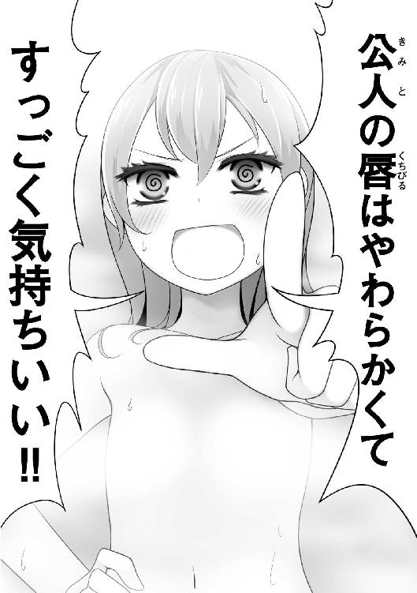
ツンピュアさんの本領が、遺憾なく発揮された瞬間だった。
目が覚めると、九条さんがあたかも折れたシャーペンの芯に向けるようなフラットなまなざしで俺を見下ろしていた。
「目が覚めましたか」
「......ああ」
あ、いつものが来るな。
「ずっと目覚めなければよかったのに」
ほら来た。
「なんでだよ」
いつもの返しをしてからまわりを見ると、ホテルの部屋で、俺は浴衣姿でベッドに寝かされていた。
......ああ、あのあと、のぼせて気を失ったのか......？
九条さんがサイドテーブルに置いていた水入りの洗面器とタオルを持つ。
「一〇時にロビー集合です。あと二〇分しかないので、すぐ支度して下さい」
普段どおり淡々と言って、出ていった。
俺はベッドから起き上がる。
まだちょっと火照ってたけど、だいぶいい。額とか首筋とかに拭いてもらった冷たさが残っていた。
「......？」
枕元に、団扇がある。
使ったまま置き忘れました――そんな風情だ。
ひょっとして......
俺が寝てる間、ずっと扇いでてくれたんだろうか？
ロビーに降りたとたん、異変に気づいた。
愛佳がまた――ぼっちになっている。
わいわいと賑わうお嬢様たちの群れから離れ、ぽつんと一人、壁にもたれて立っている。
......どうしたんだ？
俺は緊張しつつ、愛佳のもとへ向かう。
瞬間―――ロビーが大きくざわめいた。
......いや、ざわめいたのは気配だけで、実際はその逆。
ぴたり。と静まり返ったのだ。
お嬢様たちが全員、俺をガン見している。
なぜかみんな顔が真っ赤で、手で口許を隠したりしている。
俺が愛佳に近づいていくごと、「......わあ」とか「きゃあ」とかいう声が洩れてきた。
「はぅっ」
「弓香さま、しっかり！」
気を失いかけてる子までいた。
「......な、なあ、愛佳」
愛佳の頬まで赤かった。ふてくされた子供みたいに目をそらし、黙り込んでいる。
「なんだこれ。何があった？」
「......何もない」
ほんと、嘘のヘタな奴だ。
「いいから、何があったんだ？」
「わた―――んむぅっ！」
自分で自分の口をふさいだ。
......やれやれ。
他を当たろうと、お嬢様たちの方を見る。
とたん、みんな「ドキーン！」というふうに背筋を伸ばし、
「わっ、わたくしたちは外へ参りましょう！」
「ええ！ お邪魔しては悪いですわ!!」
いっせいに荷物を抱え、大移動のごとく玄関へ歩いていく。
「さあさあ！ みなさま早く！」
「お、お二人は、どうぞごゆっくり!!」
広いロビーに、ぽつーんと残された。
「どうなってんだよ......？」
「............」
「おい」
愛佳は唇をもごもごさせてから、
「............あたしたち、付き合ってることになってんの」
..................................................................................................................は？
「......なん、で？」
そのとき、うしろで暗い気配がした。
「......神楽坂」
可憐が、俺を射殺さんばかりに睨みつけていた。
「......うそつき」
「へ？」
バチ―――ンッッ!!
「ぐはァっ!?」
凄まじいビンタに、俺はトリプルアクセルを舞った。
「やっぱり貴様なんか大っ嫌いだあ――っ!!」
一瞬、泣きそうな顔を見せ、走り去っていく。
「............」
わけがわからない。
昨日の自由時間に話して、ちょっとは仲良くなれたと思ったのに。
......結局、なぜ俺と愛佳が付き合っているという誤解に至ったかの原因は、わからなかった。
ただひとつ、はっきりわかったことがある。
それは――
愛佳がまた、ぼっちに逆戻りしてしまったということだ。
遠足の自由時間、俺は庶民ランドのデパート内をうろついていた。
愛佳はうちとけたクラスメイトと買い物（と言っても、一揃いタダでもらえる）をしていて、俺も付き添っていたのだが、なんつーか......女の買い物という無間地獄に耐えられなくなり、離脱したのだった。まあ、あの分だと大丈夫だと思うし。
フロアの服屋では、あちこち黄色い花が咲いたみたいにお嬢様たちが大はしゃぎしている。
「これが庶民服ですのね......！」
「このワンピース、どうしてこんなに丈が短いんですの？ 子供用......？」
夢中になってあれこれ見たり、スタッフに着方を教わったりしていた。
それを横目で見つつ歩いていると、フロアの突き当たりまで来てしまった。
さすがにこんな隅っこには誰もいないなと思っていると――
可憐が、いた。
ブティックのひとつにぽつんと立って、棚のティーシャツを広げていた。
あいつのまわりはもちろんのこと、その両隣も含めて、完全な空白地帯になっている。
その主な原因は、あいつが常に腰からぶら下げている日本刀だ。当然ながら、他のお嬢様たちに、めっちゃ恐れられているのだった。
可憐は一枚のシャツを広げ、じぃっとみつめている。ピンク色で、ポップな柄がプリントされている「カワイイ☆」みたいなやつだ。
無表情に見ていたかと思うと、ゆっくり顔を近づけ......匂いをかいだ。意味がわからない。
そして、まわりをきょろきょろしたあと鏡に向かい、シャツをそーっと体に重ね合わせた。
真面目な表情のまま、ぷるぷると震えだす。何かダイエット器具でも使ってんのかというくらいのビートで振動している。そして――
......へにゃあ......っ。
顔が、ゲル状みたいに弛んだ。
あんな幸せそうな顔しやがって。やっぱあいつ、可愛いのが好きなんだなぁ。
――こりゃ、そっとした方がいいかな......？
そのまま立ち去ろうかと思ったとき、可憐がふっと――夢から醒めたみたいな顔になる。
ぶんぶんと首を振り、ティーシャツを元どおりにしまおうとする。
が、うまく畳めずに手間取る。完璧に同じように戻さないといけないと思っているらしく（このへんはさすがお嬢様というところか）、何度も何度もやり直している。
「いいんだよ、テキトーで」
俺はつい、可憐からシャツを引ったくっていた。
「こういうのは店員さんがやってくれるから、ある程度で置いとけばいいもんなんだ」
言いながら、俺はシャツをてきぱき畳んで、完璧に元どおりの状態にして棚に置いた。いや、まあ、恵理の服とか畳まされてたから......。
振り向くと、可憐は首筋まで真っ赤にして、全力で顔を背けていた。
「.........ち、違うぞ」
脚をガクガク震わせながら、
「わ、私はこんなくだらないものにまったく興味はない。私がここにいたのは、まったくの偶然というか、本来の私ならこんなくだらない場所にいようはずがないんだ。そう、ここにいる私が私であるという保証はどこにある？ そもそも私とはなんだ？」
哲学入りだした。
「脚、震えてるぞ」
「――っ!?」
「こういうの好きなんだろ？ せっかくだし、着てみりゃいいじゃん」
「き、貴様ッ!!」
抜刀し、刀身を突きつけてくる。
だが、手元が震えてるし、いつもの迫力がまったくない。それだけ動揺してるってことだ。
素直になりゃいいのに、変な意地張りやがって。
はぁっ。しょうがねーな。
「.................................調子に乗るなよ？」
俺は――一段、低い声を出す。
可憐がビクッと震えた。
「前、俺に手も足も出せず負けたのを忘れたのか......？」
ただの自爆だったけどな。
「俺が本気を出せば、お前なんか一瞬で跡形もなく消せるんだぜ......？」
週刊漫画を参考に中二病全開で言うと、可憐は明らかに怯えだす。
「今まで優しくしてやっていたが、お前は調子に乗りすぎた」
「........................」
可憐が涙目になり、膝が折れそうにガクガク揺れる。
やばい、ちょっと面白い。普段が普段だけに、この逆転は新鮮だった。
「お前は誓ったな？ 俺を『主として認める』と。なら今から―――俺の命令を聞け」
「......あ............あぁ............」
可憐の手から、刀が滑り落ちた。
「............ぅぅ............ふぇぇ......」
女児のように引きつっている。ちょっとＳに目覚めそうなくらい、見事な陥落っぷりだった。
少しやり過ぎてしまったかもだが、まあ......こういう口実を使って、こいつに好きな服を着せてやりたかったんだ。
「じゃあ、命令するぞ？ 服を――」
可憐の脚から、ワンピースの制服が落ちた。
......え？
可憐は制服を脱ぎ、ブラジャーとパンツだけの姿になっていた。ちなみに上下とも、水色の縞々だ。
「す......好きにしろっ！」
大きな胸をぎゅっと抱きながら、鬼畜を見るように睨みつける。目からボロボロ涙をこぼし、観念したようにぺたりと膝をついた。
「お前の気の済むまで、私を使えばいいだろう!!」
「いやいやいや!?」
可憐が、試着する服を選んだ。
「それがいいんだな？」
「......な、なあ、やはり私は――」
「着ろ。命令だ」
「.........くッ」
渋々という顔で試着室に向かう。だが服をプレゼントみたいに抱きしめつつ、足が軽くスキップしている。完全に表情と一致していなかった。
ったく、しょうがない奴だ。
試着室の中から、しゅっ、しゅるっ......と衣擦れの音が聞こえる。
つい意識しながら、俺はさっきの太もも、もっとちゃんと見とけばよかったと思った。
あいつの太ももの太さは太ももフェチの俺としては、たまらないものがある。
着替えの音が、止んだ。
......が、いつまでたっても出てこない。
「終わったか？」
「........................だめだ」
「は？」
「............とても、無様なことになってしまった」
弱々しい声。そんなに似合わなかったんだろうか？
いや、わりと普通の服だったし、それはないと思う。だってこいつ、見た目は......
「お前、見た目はけっこう可愛いんだから大丈夫だろ？」
「!? な、何を言って......っ!?」
カーテン越しに、動揺が伝わってきた。
「と、とにかく見せるのは嫌だ！ こんな姿を他人に晒すなど......屈辱の極みだっ!!」
どうしよう。意地でも見たくなってきた。
「――――開けろ」
俺はまた、一段低い声を出す。
「これは、命令だ」
「......くッ............な、なんて卑劣な奴なんだ.........っ」
悔しげな声を洩らす。そして......ゆっくりとカーテンを開けていく。
可憐は俺に向かってまっすぐ立ち、両手を囚人みたいに後ろに回している。
逸らした顔は真っ赤で、表情は羞恥と屈辱に歪んでいる。切れ長の目尻に涙が浮かんでいた。
「死ねばいいのに......貴様なんか死ねばいいのに......ッ!!」
可憐が着替えたのは、ほんとに普通の女子っぽいピチッとめの半袖ティーシャツと、ホットパンツ。あとギャル的なネックレス。
ぶっちゃけ――すげえ似合ってた。可憐さん、大成功です！
シャツのポップな柄もちゃんと着れてるし、すらっとしつつ出るとこ出てる体型だから、ぴっちりしたティーシャツがとてもさまになっていた。そして、穿いてるホットパンツの――
太ももッ!?
いけない。これはいけないですよ。サイズが小さかったのかな？ むちむちとはち切れんばかりになってます。もともと彼女は安産型というか下半身の肉づきがいいのはわかっていたのだけれど、特盛りの太ももにホットパンツが食い込んで、むちっ、いや「ぷくっぅり」と、白くてやわらかそうな脂肪がふくらみ、ボリュームたっぷりに零れ落ちているわけでして。紐で縛ったチャーシュー？ いえいえファインマンさん、チャーシュー如きに喩えては太もも様に失礼というものです。ああこれはまさしく、全ての太ももフェチが求めた遠き理想の.........
............アーサー王。
............アーサー王............
「―――はっ」
やばいやばい。理想郷に逝きかけた。
「.........笑いたければ、笑え」
可憐が泣きそうになっている。
「以前から多少気にはしていたが、このざまだ。私の脚は、無様に太――」
「ぜんぜん太くないよ!!」
食い気味に叫んだ。
「ちょうどいいよ!! それぐらいがいいんだよ!! 最高だよ!!」
「............!?」
「すっげえ似合うよ!! いい！ すごくいい!! 心に誓って言える!!」
熱い情動をぶつける。
「だから可憐、そんなふうに自分を卑下するな!! すげえ似合うから！ 俺は大好きだから!! たとえ世界中を敵に回したって、俺は大好きだって言い続けるからッッ!!」
「........................っ」
可憐の瞳が、じわっと揺れる。
どうしていいのかわからないふうに震え、そして――
ダッ！ と俺の横をすり抜け、走り去った。
可憐は、わりとすぐに見つかった。
階段の踊り場を折り返したあたりで、ぽつんと膝を抱えていた。
俺を見た瞬間、不思議なほどに動揺して、逃げようとする。
「制服、忘れてるぞ」
可憐ははっとなり、自分が着たままの服を見た。
「か、返しに行かねば」
「いや大丈夫だ。俺がスタッフに言って、貰っといたから」
「え......」
「それはもう、お前のもんだ」
「............」
可憐は、せつなそうに自分の足元を見下ろし、
「......貰ったところで、私は二度と着る気は――」
「なに言ってんだ！ ぜひこれからも着てくれ!!」
「――っ!?」
「そして俺に見せてくれ！ お前がその服を着た姿を、俺は何度でも！ 何度だって見たいんだっ!!」
ついまたカッとなってしまった。
可憐が、ぶるぶると震えている。
「貴様.........それはつまり......まさか............」
頬を赤らめ、泣きそうに潤んだ瞳に俺を映しながら、怯えたように後ろに退く。
やばい。変態さんだと思われたか......？
「............私の、こと............？」
――へ？
ドガッ!! 脳天に刀の鞘が振り下ろされた。
「ぐはぁッ!?」
たまらず昏倒。可憐が立ち上がり、走り去っていく。
「責任は取ってもらうからなあああああああああああああああああああああああああっ!!」
俺は――意識を失った。
公人たちが、庶民ランドのホテルに泊まっている夜――。
白亜の専属メイド・崎守は、部屋にて白亜を寝巻きに着替えさせていた。
今日はまったく、異常な日だった。
白亜が一度もパンツ脱がなかったのである。
それはつまり、白亜に一度も《閃き》が起こらなかったということだ。
朝にラボに入ってから、論文を読んでも、各国企業の依頼メールを読み上げても、ぴくりとも反応せず、ぼーっとラボにある砂場の砂をすくっていた。
こんなことは初めてだった。
メイドとしては楽なことこの上ない一日だったが、白亜がパンツ脱がなかったということは働かなかったということであり、問題である。
白亜がパンツ脱がないと論文の出ない学会が困り、白亜がパンツ脱がない間は企業の技術革新が滞って世界経済にも影響し、仮にこのままずっと白亜がパンツ脱がなかったら、人類全体の停滞にもつながるだろう。
世界中の大人たちが、白亜にパンツ脱いでほしいと思っているのである。
崎守はそんなことを考えながら、プロフェッショナルの表情で白亜の着付けを続ける。
庶民部に入ってから、白亜がラボにいる時間は減ったのだが、こなす依頼の数やパンツ脱ぐ回数は驚くほど上昇していた。
表情はいつもと変わらないけど、やる気に満ちているのがわかる。
何かの要因によって心から無限のエネルギーが湧いているような、そんな力強さがあった。
そしてきっかり放課後までの時刻に文句のつけようのない仕事をして「部活動」へ出かけていくのだ。
もちろん崎守には、白亜にエネルギーを与えているものがなんであるか、ちゃあんとわかっていた。
最近の仕事において楽しみな『要・経過観察事項』である。
「本日はお疲れさまでした、白亜様」
崎守の言葉に、白亜は反応しない。
心ここにあらず、といった感じである。
次に崎守は、とてもなにげないふうを装って、言った。
「明日は、公人様が帰ってこられますね」
......ぴくっ。
白亜が一瞬、震えた。
――うおっほう キタキタキタ――――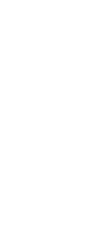――（ ）―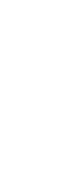―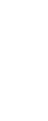――――ッ!!
崎守・大満足。
あの白亜が。静止か暴走しかない機械みたいだった白亜が、人の名前を聞いて「......ぴくっ」とか！ なんだ超カワイイじゃん。今のでご飯三杯いける！ ごちそうさま！
崎守は着付けを終え、澄ました顔で後ろに控えた。早く宿舎に帰ってメイド仲間とこのネタを肴に飲みたい気持ちでいっぱいだった。
「では、お休みなさいませ」
一礼して、退出する。
その直前、ちらりとベッドに置かれた男の子のぬいぐるみを見て、うふ、と笑った。
メイドが退出したあと、白亜はベッドに入った。
リモコンで照明を消すと、山の星明かりが部屋を青く浮かばせる。
白亜は枕元に寄りかからせたぬいぐるみを引き寄せ、そっと抱いた。
横向きに寝て、まぶたを閉じ、男の子のぬいぐるみをくしゃり、と抱きしめる。
いつもより、強く。
最近部屋に置くようになったぬいぐるみに、彼女は名前をつけていた。それは――
「.........公人」
キミトといって、彼女の知り合いである男子と同じものだった。
「......そういうことでしたの」
遠足帰りの飛行機の中、麗子がほっとした表情で言った。
隣に座る愛佳から、露天風呂で公人と何があったのかという、その真相を聞いたのだった。
ちなみに、愛佳と麗子は他のみんなからずっと離れた最後列にぽつんと並んで座っている。
公人は、愛佳の近くにいると他のお嬢様たちが異常に緊張する（倒れるお嬢様が続出した）ので、反対に一番前の座席に行っていた。
再びぼっちに戻った愛佳と、委員長の麗子という、ちょっぴりビターなペアの復活である。
「公人さまが......わたくしも、お風呂に行けばよかった......」
「は？」
「な、なんでもありませんわっ！」
麗子が頬を赤らめ、手を振る。
「では、みなさんが話しているような、キ、キスというのは、されてないのですわね......？」
今度は、愛佳の頬が染まって、
「し、してない。キスは」
「......ほっ」
麗子が胸を撫で下ろす。愛佳が言うなら、間違いなく本当だろう。
人工呼吸が、唇と唇を合わせないものであることは、よく知っている。なぜなら麗子もまた、保健体育の授業で愛佳と並び「お二人は、人工呼吸がとてもお上手」と褒められたからだ。
「でも、ずるいですわ」
「な、なに言ってんのよっ。おかげで、このざまなんだから......」
愛佳がむぅ、と唇を尖らす。
「それで、どうしますの？ ......誤解をといた方がよいのではなくて？」
愛佳は悩む。
たしかにキスはしていない。
だが、全裸で公人の唇をふさぎ、それを見たみんなに向かって「すっごく気持ちいい!!」と叫んだのは、厳然たる事実だ。
あれを今すぐ蒸し返すことに......愛佳の心臓は耐えられなかった。
「......な、なんでしたら、わたくしが仲介を――」
「ま、待って」
とっさに止めた。目を逸らしつつ――
「............もうちょっと、時間を置く......」
彼女らしい、チキンな選択をした。
「まあ......そうですの」
麗子はちょっと目を見開き、
「愛佳さまがそう仰るなら、それでもよろしいかと」
ゆったりとシートにもたれかかり「まあまあそうですの」と、またつぶやく。
「この分だと次の機会も、わたくしがあなたのペアになって差し上げなくてはいけないですわねー」
「......あんた、なに嬉しそうな顔してんのよ」
「！ べ、べつに、嬉しそうになどしていませんわ！」
「この状況喜ぶとか、どんだけあたしのこと嫌いなのよ......」
「えっ？ いえ、わたくしは――」
「昨夜はちょっといい奴かもって思ったけど、やっぱあたし、あんたなんか大っきらい！」
ふんっ！ とそっぽを向く。
「......わ......わたくしもですわっ!!」
ふんっ！ とそっぽを向いた。
......ほどなくして、着陸を告げるアナウンスが流れた。
メイド長の朝は早い。
九条みゆきはメイド長として毎朝、宿舎で行われるミーティングを仕切り、そのあと執務室にて複雑な管理業務を迅速に行う。
それが一段落した時点で、まだ朝の六時半。生徒たちの大半がいまだ床についている時刻である。
だがそれは当然のことだ。専属する生徒を持つメイドには、担当生徒の朝のお世話をするという大事な業務がある。
だからみゆきは宿舎を出て、今から公人の寮へと向かう。
高原に位置する清華院の朝は、やはり地上よりも少し肌寒い。
けれど山稜から昇る朝の光は透きとおっていて、学園の舗道や並木、校舎や噴水広場を清涼に照らしてくれるのだった。
汚れのない乙女たちが過ごすに相応しい、美しい場所だった。
歩くみゆきの向かいから、ジョギング中の生徒が近づいてくる。そういうことを日課にしている生徒も、当然いる。
ジャージ姿の生徒は、みゆきのすぐ手前まで来ると、妙に緊張した面持ちになって、
「お、お早うございますっ」
「おはようこざいます」
みゆきは脇に控え、過ぎていく彼女に恭しく一礼した。と――
「お待ち下さい」
呼び止めた。
「......な、なんでしょう？」
半ば怯えたふうに振り返ったお嬢様。
みゆきは少し先まで歩き、道に落ちていたハンドタオルを拾う。
「落とされました」
「あっ。......ありがとう存じます！」
恐縮したようにお辞儀し、彼女はタオルを引き取ろうとした。
「いえ。こちらは私どもで洗濯しておきます」
言って、みゆきはエプロンのポケットから、ビニールで密封された新品のハンドタオルを取り出す。
「代わりにこちらをお使い下さい」
「............」
受け取ったお嬢様も、あまりの準備のよさにさすがに驚く。
「では智子さま。失礼いたします」
恭しく礼。
自分の名前を認知されていたことに、お嬢様はまた驚く。清華院はなんだかんだと、幼稚園から合わせて一〇〇〇人近い生徒がいるのだ。
「―――あ、あのっ......」
去ろうとしたみゆきを、彼女は呼び止めた。
振り返ったみゆきに、彼女はおずおずと......実はみんなが気にしていることを尋ねる。
「......どうして九条家の方が、使用人をなさっているのですか？」
九条家は、上流の者なら誰もが知っている名家中の名家である。
権力財力は元より、家の《格》においても匹敵できるのは有栖川を含む御三家のみ。影響力では御三家すら遠く霞む。
逆に、一般にはほとんど知られていない。権力を保つ最良の方法は目立たぬこと、極力表に出ないこと故である。
「みゆき様は《九条》、しかも本家の御息女でいらっしゃるのに......」
こわごわと投げかけられた疑問に、みゆきは淡々と応じた。
「お聞かせするほどのことではありません」
「ひょっとして、何か特別なご事情が――」
「失礼します」
恭しく一礼し、みゆきは彼女に背を向けた。
みゆきは、音を立てないようにそっと、公人の部屋に入った。
カーテンを閉めた薄暗い部屋の中を、静かに歩く。
ベッドで、公人が眠っていた。
仰向けの状態で、すやすやと、本当におとなしく眠っている。
無表情の彼は、普段と印象が違って、より端正に見えた。
みゆきはそんな彼の寝顔を少しの間みつめたあと、両手のひらをゆっくり、マットの上に置いた。
公人を挟み込み、覆い被さった姿勢になる。みゆきは、そのまま公人の顔に自分の顔を重ねていく。そして―――......
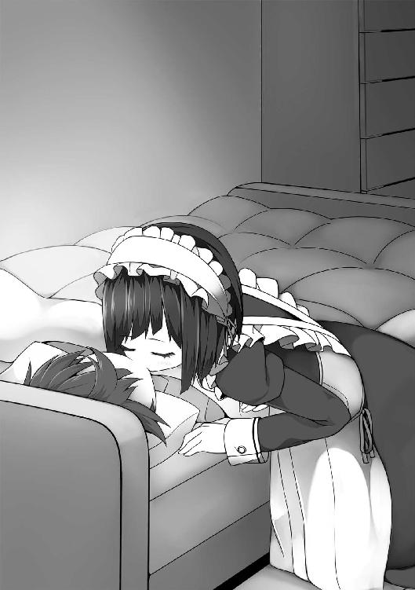
「.........ん」
目を覚ますと、九条さんがまるで原作とあまりに違う低クオリティのフィギュアを見る限定版購入者のような、怒りを通り越した虚無を感じさせるまなざしで俺を見下ろしていた。
「目が覚めましたか」
「......ああ」
俺がいつもどおりに応えると、九条さんはやっぱりいつもどおりのことを言った。
「ずっと目覚めなければよかったのに」
つづく
プロデューサーさん！ コミカライズですよ、コミカライズ！
というわけで、２巻にして漫画化ですよ！ 初めてだから超うれしい!!
しかも、あれですよ！ こっちからのプッシュじゃなくて、ＲＥＸの編集さんが作品を読んで気に入ってくれてオファーくれたってのがまた嬉しいじゃないですか!!
この第２巻は、前巻以上に明るくて、バカバカしくて、萌えかもしれない内容を目指しました。職場や学校で疲れたとき、脳みそ空っぽにするために読んで頂けたらと。
この本が、みなさんのひとときの楽しみになれば幸いです。
可愛くて個性的なイラストを描いて下さる閏様、いつもきめ細やかに助けて下さる担当のＫ井様、支えて下さる営業様。『ゆるゆり』の使用許諾を下さった、なもり様、百合姫編集長。
コミック化のオファーを下さったＲＥＸ編集岡田様、帯や告知四コマまで描いて下さったコミック担当のりすまい様。そして挿絵の配置法について許諾下さった白鳥士郎様、名言「セルフ混浴」を生み出した、さがら総様。
ありがとうございました。これからも、精一杯がんばります。
七月隆文
俺がお嬢様学校に「庶民サンプル」として拉致られた件２
２０１２年５月１日 初版発行
著 者 七月隆文
発行者 杉野庸介
発行所 株式会社一迅社
〒１６０―００２２
東京都新宿区新宿２―５―10 成信ビル８Ｆ
制 作 大日本印刷株式会社
© Takafumi Nanatsuki／一迅社
本書はフィクションです。実際の人物・団体・事件などには関係ありません。
本書の内容を無断で複製、複写、放送、データ配信等することは、堅くお断りいたします。